生成时间：2026-05-18T11:33:15+08:00
今日保留论文数：10
内容构成：今日新文 10 篇；补充推荐 0 篇；经典旧文精读 0 篇
数据源警告
- 本次有 2 个数据源访问异常；完整错误已保留在运行日志中，日报只显示摘要。
- arXiv API：2 个分类访问异常，候选池可能不完整；程序会基于已成功获取的数据继续兜底。
- 主要错误类型：限流 2 次。
高能天体物理重点
1. Temporal evolution of the periodic GeV signal from 4FGL J1913.2+0512 and analysis of the SS 433 / W50 lobes
- 来源：arXiv / astro-ph.HE
- 链接：https://arxiv.org/abs/2605.15986v1
- 作者：Ömer Faruk Çoban, Diego F. Torres, Jian Li, Daniela Hadasch, Agnibha De Sarkar, Matthew Kerr
- 评分：novelty 8/10，importance 8/10，relevance 10/10，final 9.70/10
- 推荐理由：基于16年Fermi-LAT数据研究SS 433/W50区域GeV辐射和约162天调制随时间消失，是明确的伽马射线观测结果，相关性很高。
中文题目：4FGL J1913.2+0512 的周期性 GeV 信号是否在变？兼论 SS 433/W50 两侧叶的 Fermi-LAT 分析
做了什么：这篇论文用 16 年 Fermi-LAT 数据重新分析 SS 433/W50 区域的 GeV 伽马射线辐射，特别处理了邻近亮脉冲星 PSR J1907+0602 的污染。作者确认了 4FGL J1913.2+0512 的 GeV 探测，给出幂律谱指数 \(\Gamma=2.61\pm0.08\)，并在 W50 西侧叶看到中等显著性的 GeV 超出。最重要的结果是：4FGL J1913.2+0512 与 SS 433 喷流进动周期相近的 \(\sim162\) 天调制主要出现在 Fermi 任务前 10 年，之后明显消失；16 年整体数据中周期仍可见但被后期非调制阶段稀释。
为什么重要：SS 433 是少数能在银河系内近距离研究相对论喷流、喷流进动和喷流-星际介质相互作用的系统。若 GeV 信号真的随 \(\sim162\) 天进动周期调制，说明伽马射线产生区与喷流几何、吸收、粒子注入或靶场分布存在直接联系；而调制在多年尺度上减弱或消失，则表明这个联系不是稳态的。
理论 / 观测 / 仪器方法价值：这项工作的价值不只在于增加了数据时长，而在于把时间演化作为核心问题：同一个源在不同十年中是否具有相同的周期性、相同的相位窗口和相同的背景污染状态。方法上，作者使用脉冲星相位门控、曝光修正 Lomb-Scargle 周期图和进动相位折叠光变曲线，为拥挤银河面区域的弱 GeV 周期信号分析提供了可复用范式。
为什么应该关注：如果你关心微类星体、银河系宇宙线加速、喷流终端激波或 Fermi-LAT 弱源时域分析，这篇文章值得读。它提醒我们：把 16 年数据简单堆叠可能会掩盖源的真实状态变化；周期性检验也不能只问“有没有峰”，还要问“峰在哪个年代出现、在哪个相位出现、是否与仪器曝光和邻近源混淆有关”。
展开详细解读：文章讲解、背景、理论、重点章节、图表与相关工作
文章详细讲解
科学问题：SS 433 的双喷流以 \(\sim162\) 天周期进动，并在 W50 星云中形成东西向延展结构。过去多个波段已经表明，这个系统中存在非热粒子加速，TeV 观测尤其支持喷流侧叶中有高能粒子。然而 GeV 波段的图像更复杂：银河面背景强、附近有亮脉冲星 PSR J1907+0602，4FGL J1913.2+0512 是否真正与 SS 433 相关、其 \(\sim162\) 天周期是否稳定存在，一直是需要更长数据和更严格背景处理的问题。本文的核心问题是：SS 433/W50 区域的 GeV 辐射空间分布和时间调制是否在 16 年 Fermi-LAT 数据中仍成立，并且这种调制是否随年代变化。
作者怎么做：论文选取 2008 年 8 月到 2024 年 9 月的 Fermi-LAT 事件，能段主要为 \(0.3\)--\(300\,\mathrm{GeV}\)，并针对 PSR J1907+0602 做脉冲星门控，以尽量去掉脉冲相位内的强污染。空间模型中包括 4FGL 目录源、银河弥散背景、各向同性背景，并在 SS 433/W50 的东西侧叶位置搜索 GeV 超出。时间分析方面，作者构造曝光修正后的光变曲线，使用 Lomb-Scargle 周期图搜索接近喷流进动周期的调制，并进一步按 SS 433 进动相位折叠，比较全 16 年、前 10 年和后期数据的差异。
关键结果：4FGL J1913.2+0512 在门控分析后以 \(TS=45\) 被探测到，谱可用幂律描述，光子指数为 \(\Gamma=2.61\pm0.08\)。W50 西侧叶位置存在 \(TS=17\) 的 GeV 超出，东侧叶只有较弱暗示；这与 TeV 侧叶辐射的空间图景相关，但 GeV 显著性仍不足以单独给出非常坚固的形态结论。门控后还出现一个位于 SS 433/W50 系统之外的新 GeV 超出 Fermi J1909.6+0552，\(0.3\)--\(300\,\mathrm{GeV}\) 下 \(TS=20\)，若扩展到 \(0.1\)--\(300\,\mathrm{GeV}\) 则 \(TS=28\)。最引人注意的是，4FGL J1913.2+0512 的 \(\sim162\) 天周期调制在 2008--2018 年明显，在之后消失；全 16 年周期仍可检测但显著性降低，且折叠光变曲线中的高通量主要集中在进动相位 \(0.0\)--\(0.5\)。
局限和下一步：该研究受限于银河面弥散背景建模、邻近源混淆、门控带来的有效曝光损失，以及弱源周期搜索中的试探因子。\(TS=17\) 的西侧叶 GeV 超出和东侧叶暗示需要谨慎看待，因为源形态、背景模板和能段选择都可能改变低显著性结构。下一步应把 Fermi-LAT 与 HAWC、H.E.S.S.、LHAASO 或 CTA 时代数据联合起来，检查 GeV 与 TeV 侧叶是否来自同一粒子族；同时需要把喷流进动几何、粒子输运、辐射冷却和 W50 内部靶物质分布结合起来，解释为什么周期调制会在多年尺度上衰减。
背景知识
SS 433 是银河系中最著名的微类星体之一，由致密天体和大质量伴星组成，产生速度约为 \(0.26c\) 的双向喷流。喷流轴以约 \(162\) 天周期进动，因此同一个物理喷流在天空投影和视向角上会周期变化。W50 是包围 SS 433 的大型射电星云，呈东西拉长的“海牛”形态，通常被解释为喷流长期注入能量并与超新星遗迹或星际介质相互作用的结果。
历史上，SS 433 的光学和 X 射线喷流运动学研究非常成熟，进动模型可以解释移动谱线的多普勒位移。后来，X 射线和 TeV 观测显示 W50 侧叶中存在高能非热辐射，意味着粒子可被加速到至少多 TeV 能量。GeV 波段的情况更困难：Fermi-LAT 角分辨率随能量变化，在银河面复杂弥散背景中识别弱源和延展结构并不容易，且附近亮脉冲星的脉冲辐射会显著污染源模型。
为什么现在值得重新看？一是 Fermi-LAT 已积累 16 年数据，时间基线足够检验多年尺度的状态变化，而不只是提高总显著性。二是弱周期信号容易被“整段数据平均”误导：如果前半段有周期、后半段无周期，全数据周期图仍可能有峰，但物理解释完全不同。三是已有 TeV 侧叶探测推动人们重新关心 GeV--TeV 连续谱能否区分强子过程和轻子过程。
该领域常见误区之一是把 \(TS\) 值直接等同于无条件的“发现显著性”。在复杂背景、多源拟合和多次试探搜索中，\(TS\) 的统计解释依赖自由度、边界条件和试探因子。另一个误区是把接近 \(162\) 天的周期峰自动归因于喷流进动；实际上必须检查曝光窗口、太阳约束、邻近变源、脉冲星门控和相位折叠后的稳定性。第三个误区是默认 GeV 源、TeV 侧叶和射电/X 射线结构必然同源；不同能段可能对应不同粒子能量、不同冷却时间和不同空间扩散尺度。
基础理论 / 方法脉络
从物理图像看，SS 433/W50 是一个喷流把机械能持续注入周围介质的系统。喷流内部或终端激波可以加速电子、质子或更重离子。高能电子可通过同步辐射产生射电到 X 射线光子，也可通过逆康普顿散射把低能光子提升到 GeV--TeV；高能质子与气体碰撞则可产生 \(\pi^0\)，随后衰变为伽马射线。GeV 与 TeV 波段的相对强度、空间分布和时间变化，是区分这些机制的重要线索。
进动几何使问题更有辨识度。若辐射区靠近喷流基部，视向角变化会改变多普勒增亮、吸收路径和投影位置，从而产生与 \(162\) 天周期相关的调制。若辐射主要来自远端侧叶，粒子冷却和输运时间可能远长于进动周期，短周期调制会被平滑掉。因此，检测到或检测不到 \(\sim162\) 天调制，实际上是在约束伽马射线产生区离中心源有多近、粒子注入是否间歇、辐射是否存在几何各向异性。
本文使用的观测逻辑是 Fermi-LAT 计数数据的最大似然分析。LAT 并非直接给出天空通量图，而是记录每个事件的方向、能量和时间；源模型需要经过仪器响应函数，包括有效面积、点扩散函数和能量弥散，再与观测计数比较。对于银河面弱源，弥散背景模板和邻近源模型往往决定残差结构，因此作者用脉冲星门控降低 PSR J1907+0602 的贡献，是分析成败的关键步骤之一。
时间分析中，普通 Lomb-Scargle 周期图假设数据误差和采样已被适当处理。对 Fermi-LAT 而言，曝光随时间和天区变化，若不修正，周期图可能把观测窗口函数误判为天体周期。作者使用曝光修正光变曲线，并比较不同任务阶段的周期图和相位折叠结果，目的就是把“真实天体调制”和“长期仪器/背景变化”分开。
主要退化关系包括：源通量与弥散背景归一化退化、点源与延展侧叶模板退化、软谱源与低能点扩散函数退化、周期振幅与长期非平稳性退化。系统误差则来自脉冲星星历和门控相位选择、能段下限、源列表更新、背景模板版本、自由参数半径以及是否允许邻近源谱形改变。
公式与推导
第一步是把喷流进动写成几何相位问题。若 \(t_0\) 是参考进动相位零点，\(P_{\rm prec}\) 是进动周期，则相位可写为
这里 \(P_{\rm prec}\approx162\,\mathrm{d}\)，\(\phi_{\rm prec}\) 用来折叠光变曲线。本文的关键经验结果是高通量主要集中在 \(\phi_{\rm prec}\approx0.0\)--\(0.5\)，但这种集中性在后期数据中减弱。
第二步，用一个最简单的几何调制模型描述通量。若平均光子通量为 \(F_0\)，调制幅度为 \(A\)，相位偏移为 \(\phi_0\)，则
这个式子不是唯一物理模型，但提供了读周期图和相位折叠图的直观标尺：\(A\) 越大，周期峰越明显；若后 6 年 \(A\to0\)，全数据的周期显著性会被稀释。
第三步，Fermi-LAT 的源谱常用幂律表示：
其中 \(N_0\) 是归一化，\(E_0\) 是枢轴能量，\(\Gamma\) 是光子指数。本文对 4FGL J1913.2+0512 得到 \(\Gamma=2.61\pm0.08\)，说明 GeV 谱较软，低能事件权重较大，因此更容易受到 LAT 点扩散函数和银河弥散背景系统误差影响。
第四步，由微分谱得到能段内光子通量：
这里 \(E_1\) 和 \(E_2\) 对应分析能段，例如 \(0.3\)--\(300\,\mathrm{GeV}\)。该式说明能段下限对软谱源的积分通量影响很大，也解释了为什么把分析扩展到 \(0.1\,\mathrm{GeV}\) 可能改变某些超出的 \(TS\)。
第五步，LAT 观测的是计数而非通量。对第 \(i\) 个空间-能量-时间 bin，模型期望计数可写为
这里 \(R_i\) 是仪器响应，\(S_s\) 是第 \(s\) 个源的真实天空模型，\(B_i\) 是弥散和各向同性背景，\(\boldsymbol{\theta}\) 是所有待拟合参数。门控分析实质上改变可用时间区间和背景成分，从而降低脉冲星项对 \(\mu_i\) 的贡献。
第六步，泊松似然为
其中 \(n_i\) 是观测计数。源探测显著性通常用似然比检验统计量
\(\hat{\boldsymbol{\theta}}_{\rm src}\) 是含目标源模型时的最大似然参数，\(\hat{\boldsymbol{\theta}}_0\) 是无目标源时的参数。本文报告 4FGL J1913.2+0512 的 \(TS=45\)，西侧叶 \(TS=17\)，新超出 Fermi J1909.6+0552 的 \(TS=20\) 或 \(TS=28\)。
第七步，对不等间隔、有误差的光变曲线，广义 Lomb-Scargle 可写成在每个角频率 \(\omega\) 上拟合
相应功率可理解为相对于常数模型的卡方改进：
这里 \(y_k\) 是曝光修正后的通量或残差，\(w_k\) 是误差权重，\(\tau\) 用来消除正弦和余弦项的交叉项。该式帮助读者理解为什么不均匀采样和误差条会影响周期峰。
第八步，若在 \(M\) 个近似独立频率上搜索周期，单频虚警概率 \(p_1\) 与全局虚警概率近似满足
这就是试探因子。对本文而言，关键不只是全数据中 \(\sim162\) 天峰是否存在，还包括前 10 年和后期数据分别检验后是否呈现一致的相位和振幅；若后期无峰，物理上意味着 \(A\) 或相干性发生变化，而不仅是统计涨落。
模型拟合 / 应用方法
空间-谱拟合的核心量包括目标源归一化 \(N_0\)、光子指数 \(\Gamma\)、可能的源位置或延展模板归一化、邻近目录源参数、银河弥散背景归一化和各向同性背景归一化。对 4FGL J1913.2+0512，作者采用幂律谱给出 \(\Gamma=2.61\pm0.08\)。对 W50 侧叶，重点不是复杂谱形，而是在给定区域或模板下是否存在相对于背景的显著超出。
似然框架通常是 binned 或 unbinned 泊松最大似然。读者应注意 \(TS\) 的解释依赖模型嵌套关系和自由度；弱源、边界参数和搜索位置不固定时，\(\sqrt{TS}\) 只是近似显著性而非严格结论。门控后的有效曝光下降会增加统计误差，但若脉冲星污染被显著降低，净的源检出能力可能反而提高。本文发现门控后出现额外超出 Fermi J1909.6+0552，说明背景处理会改变残差图结构。
时间模型拟合中，常见做法是先在固定空间-谱模型下分箱求通量，再对光变曲线做周期搜索和相位折叠。这里要关注两个残差诊断：一是每个时间 bin 的通量误差和上限比例，二是折叠后不同相位 bin 是否由少数高权重点主导。若周期峰主要来自少数时间段，那么把数据按年代切分是必要的；本文正是通过前 10 年和后期数据的对比，显示 \(\sim162\) 天调制并非全任务期间稳定相干。
主要参数退化包括源谱软硬与背景归一化之间的退化、侧叶模板与邻近点源之间的退化、周期振幅与长期通量漂移之间的退化。若源有长期非平稳性，单一正弦周期模型会把状态转变误解为低相干周期；反过来，若曝光窗口函数存在接近周期，也可能产生假峰。因此曝光修正、窗口函数检查和对照源分析非常重要。
模型可能失败的地方包括：真实辐射区并非点源或简单侧叶模板；谱形可能存在断裂而非单幂律；GeV 与 TeV 发射可能来自不同位置；脉冲星门控可能残留非脉冲成分或星历误差；银河弥散模板在 W50 附近的气体结构和宇宙线梯度可能不准确。实际应用中，这类分析适合为后续多波段建模提供约束，但不宜单独用 \(TS\sim10\)--\(20\) 的结构断言精确物理形态。
重点章节 / 结果段落怎么读
数据与事件选择部分应重点看能段、时间范围、ROI 大小、事件类别、天顶角切除和仪器响应版本。本文使用 2008 年 8 月到 2024 年 9 月数据，主要能段为 \(0.3\)--\(300\,\mathrm{GeV}\)。读者应特别留意作者为什么选择这个低能阈值，因为软谱源需要低能光子，但低能也带来更宽点扩散函数和更强弥散背景。
脉冲星门控部分是方法核心。PSR J1907+0602 是该区域最麻烦的亮污染源之一，若不处理，其脉冲相位内计数可能在残差图中制造或掩盖弱源。读者应检查门控相位如何定义、门控后保留了多少曝光、是否重新拟合背景和邻近源。
空间和谱分析部分要看 \(TS\) 图、最佳拟合源模型以及 4FGL J1913.2+0512、西侧叶、东侧叶和 Fermi J1909.6+0552 的相对位置。重点不是只记住 \(TS\) 数字，而是判断这些超出是否与 W50 结构、已知目录源、脉冲星残差或弥散背景梯度重合。
时间分析部分应按全 16 年、前 10 年、后期数据三个层次读。周期图中 \(\sim162\) 天峰若在前 10 年强、后期弱或无，就支持“调制效率或几何随多年变化”的解释。相位折叠图则要检查高通量是否集中于 \(\phi_{\rm prec}=0.0\)--\(0.5\)，以及这种集中是否由多个周期共同贡献。
讨论和稳健性检验部分应关注作者如何排除仪器曝光、背景建模和邻近源变动造成的假周期。若有附录或补充检验，读者应优先看不同能段、不同时间分箱、不同背景模型和不同门控选择下结果是否稳定。
建议重点查看的图表
-
ROI 残差或 \(TS\) 图：看 4FGL J1913.2+0512、W50 东西侧叶、PSR J1907+0602 和新超出 Fermi J1909.6+0552 的相对位置，尤其注意门控前后残差是否显著改变。
-
4FGL J1913.2+0512 的谱能量分布或谱拟合图：看幂律是否能覆盖 \(0.3\)--\(300\,\mathrm{GeV}\)，低能点是否主导拟合，是否存在高能端系统偏差。
-
W50 侧叶的局部 \(TS\) 或模板拟合图：看西侧叶 \(TS=17\) 是否空间上贴合射电/X 射线/TeV 结构，东侧叶暗示是否可能被背景梯度解释。
-
曝光修正光变曲线：看通量变化是否分布在多个进动周期中，还是少数时间 bin 拉高；同时检查误差条和上限比例。
-
Lomb-Scargle 周期图：看 \(\sim162\) 天峰在全 16 年、前 10 年和后期数据中的变化，并比较附近别名峰或窗口函数峰。
-
进动相位折叠光变曲线：看 \(\phi_{\rm prec}=0.0\)--\(0.5\) 的通量增强是否显著，后期数据是否趋于平坦。
-
新源 Fermi J1909.6+0552 的局部图和谱：看它是否可能是未建模背景、目录遗漏源或真正独立的 GeV 源，因为它位于 SS 433/W50 系统之外。
关键图表逐图导读
图 1：建议首先看天区图或 \(TS\) 残差图。横纵轴通常是赤经和赤纬或银河经纬，颜色表示 \(TS\)、残差计数或模型扣除后的显著性。数据点或轮廓可能标出 4FGL 源、SS 433、W50 轮廓、东西侧叶和 PSR J1907+0602。读图陷阱是低能 LAT 点扩散函数较宽，颜色斑块的视觉延展不等于真实延展源。
图 2：若论文给出门控前后对比图，应重点看 PSR J1907+0602 附近残差是否下降，以及 4FGL J1913.2+0512 和侧叶位置的结构是否更清楚。横纵轴仍为空间坐标，模型线或轮廓可能来自射电、X 射线或 TeV 图。主要结论应是门控提高了弱源分析的可信度；陷阱是门控同时减少曝光，因此不能只凭图像变干净就判断显著性增强。
图 3：谱图通常以能量 \(E\) 为横轴，以 \(E^2dN/dE\) 或分箱通量为纵轴，点为 Fermi-LAT 分箱结果，线为幂律模型，不显著能段给上限。应看 \(\Gamma=2.61\) 的软谱是否由多个能段支持。陷阱是低能点统计权重大但系统误差也大，高能上限不能简单解释为物理截断。
图 4：Lomb-Scargle 周期图横轴是周期或频率，纵轴是周期功率或显著性，可能有虚警概率水平线。应比较全 16 年、2008--2018 年和后期数据的 \(\sim162\) 天峰。主要结论是早期周期强、后期消失；陷阱是要检查搜索频段和试探因子，不能把单频峰值直接当作全局显著性。
图 5：进动相位折叠光变曲线横轴为 \(\phi_{\rm prec}\)，纵轴为曝光修正通量。若高通量集中在 \(0.0\)--\(0.5\)，说明调制与喷流进动相位有关。陷阱是折叠会隐藏年代信息；因此最好同时看早期和后期折叠曲线。
图 6：若有分年代光变或滑动窗口周期图，应看周期功率随时间是否连续衰减，还是在某个时间突然改变。横轴可能是任务时间，纵轴是周期或功率，颜色表示强度。这个图最能支持“伽马射线产生效率或几何在多年尺度演化”的结论。
论文原图 / 可嵌入图片
Fig04
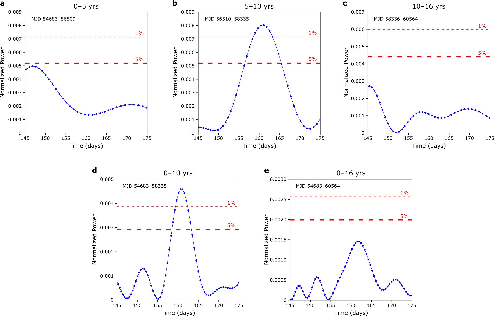
图注：Exposure-corrected Lomb-Scargle periodograms constructed from the $1-300$~GeV weighted light curve of 4FGL~J1913.2+0512 over different time intervals: \(\textbf{(a)}\) 5 years, \(\textbf{(b)}\) $5-10$ years, \(\textbf{(c)}\) $10-16$ years, \(\textbf{(d)}\) 10 years, and \(\textbf{(e)}\) 16 years. The blue curve represents the normalized power, while the red dashed lines indicate the $1\%$ and $5\%$ false-alarm significance levels computed over the 145–175 day range, accounting for the number of independent trials within this interval.
对应解读：建议重点查看的图表第5项；关键图表逐图导读图4；时间模型拟合中关于全16年、前10年和后期数据的周期搜索对比。
入选理由：这是支撑论文核心结论的首要图：直接给出4FGL J1913.2+0512在不同任务时间段的曝光修正Lomb-Scargle周期图，并标出1%和5%虚警概率水平，可检验约162天峰在早期显著、后期消失、全16年被稀释的说法。
来源与置信度：\(arxiv_source\)；high；\(arxiv_source\) / ss433.tex:figure[4]
Fig05
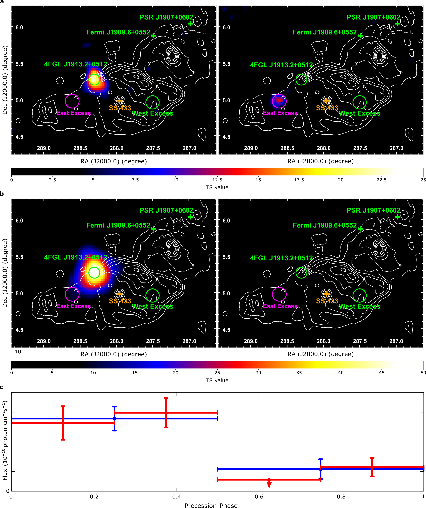
图注：\textbf{a)} Phase-folded TS Maps of the SS~433 region in the $1-300$~GeV band in the precessional phases $0.0-0.5$ (left) and $0.5-1.0$ (right), computed with 4FGL~J1913.2+0512 excluded in the model and a test-source photon index $\Gamma=2.0$. The East Excess is produced by only three photons; see the text for further discussion. \textbf{b)} Same as panel \(\textbf{a},\) but using $\Gamma_{\rm ts}=3.2$, corresponding to the best-fit photon index of 4FGL~J1913.2+0512 in the bright interval ($0.0-0.5$). \textbf{c)} Precessional phase resolved light curve of 4FGL~J1913.2+0512 in the $1-300$~GeV band. Blue and red data points correspond to bin sizes of 0.5 and 0.25, respectively. Vertical error bars indicate 1$\sigma$ statistical uncertainties, and downward arrows represent $95\%$ confidence level upper limits (TS$~< 4$).
对应解读：建议重点查看的图表第6项；关键图表逐图导读图5；关于进动相位0.0--0.5通量增强和相位依赖TS结构的解读。
入选理由：同时包含进动相位分段TS图和相位折叠光变曲线，能直接检查高通量是否集中在phi_prec=0.0--0.5，以及东西侧叶/东侧弱超出是否受少数光子影响，是连接周期性与空间残差的关键诊断图。
来源与置信度：\(arxiv_source\)；high；\(arxiv_source\) / ss433.tex:figure[5]
Fig02
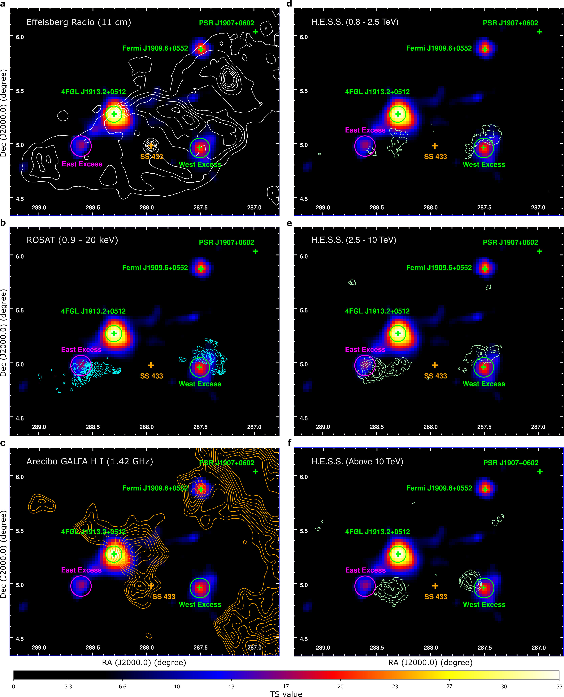
图注：\(\textit{Fermi}-LAT\) residual TS map of the SS~433 region during the off-peak phase of PSR~J1907+0602 in the $0.3-300$~GeV band. All 4FGL-DR4 sources are modelled and subtracted, except for the main source of interest, 4FGL~J1913.2+0512, which is excluded from the model to highlight its unmodelled emission. The $95\%$ confidence level localization regions of 4FGL~J1913.2+0512 and the Western Excess are indicated with green circles. \protect\textbf{a)} White contours are radio continuum from Effelsberg 11 cm survey from 300 mK with the increments of 200 mK. \protect\textbf{b)} Cyan contours show the X-rays observed with ROSAT in the 0.9-2 keV band. From $5\times10^{-5}$ counts $s^{-1}$ with increments of $1.67\times10^{-5}$ counts $s^{-1}$; \(\protect\cite{li20}.\) \protect\textbf{c)} Orange contours are Arecibo H I emission map integrated over $65-82$ km s$^{-1}$, scaled by $\sin|b|$ to enhance structures away from the Galactic plane \(\protect\citep{su18}.\) \protect\textbf{d--f)} H.E.S.S. TeV contours with increments of 1$\sigma$ starting from 3$\sigma$ in $0.8-2.5$~TeV (d), $2.5-10$~TeV (e), and above 10~TeV (f); \(\protect\citep{hess24}.\)
对应解读：建议重点查看的图表第1、3项；关键图表逐图导读图1/图2；空间-谱拟合中关于4FGL J1913.2+0512、西侧叶、东侧叶和多波段轮廓对应关系的讨论。
入选理由：这是门控后0.3--300 GeV残差TS图，并叠加射电、X射线、H I和H.E.S.S. TeV轮廓，可直观看4FGL J1913.2+0512和Western Excess的定位置信区间及其与W50多波段结构的关系，比单纯位置图更能支撑侧叶GeV超出的可信度评估。
来源与置信度：\(arxiv_source\)；high；\(arxiv_source\) / ss433.tex:figure[2]
Fig03
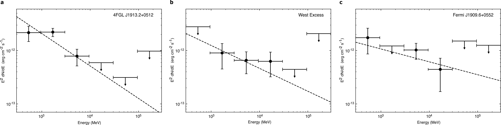
图注：Spectral energy distributions (SEDs) of \(\textbf{(a)}\) 4FGL~J1913.2+0512, \(\textbf{(b)}\) West Excess, and \(\textbf{(c)}\) Fermi~J1909.6+0552 in the $0.3-300$~GeV energy range. The black points represent the \(\textit{Fermi}-LAT\) measurements with 1$\sigma$ statistical uncertainties, while the downward arrows indicate $95\%$ confidence level upper limits for energy bins with $\mathrm{TS} < 4$. The dashed lines show the best-fitting power-law models.
对应解读：建议重点查看的图表第2、7项；关键图表逐图导读图3；模型拟合中关于4FGL J1913.2+0512幂律谱、West Excess和Fermi J1909.6+0552谱能量分布的讨论。
入选理由：该图给出4FGL J1913.2+0512、West Excess和新源Fermi J1909.6+0552在0.3--300 GeV的SED、统计误差、上限和最佳幂律模型，可直接检验软谱幂律是否由多个能段支持，以及新源是否有独立谱证据。
来源与置信度：\(arxiv_source\)；high；\(arxiv_source\) / ss433.tex:figure[3]
Fig06
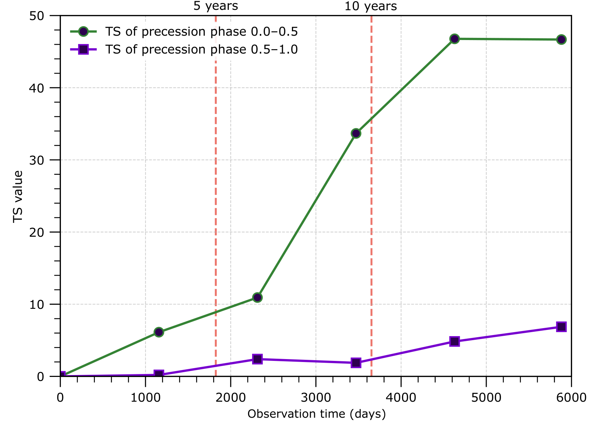
图注：TS evolution of 4FGL~J1913.2+0512 in the $1-300$~GeV band for precessional phases $0.0-0.5$ (green) and $0.5-1.0$ (purple).
对应解读：建议重点查看的图表第4、6项；关键图表逐图导读图6；详细解读中关于多年尺度演化和早晚相位TS随时间变化的结论。
入选理由：该图展示4FGL J1913.2+0512在两个进动相位区间的TS随时间演化，最直接支持调制强度不是全任务稳定相干、而是在多年尺度发生变化的判断，可辅助解释Fig04周期峰为何后期减弱或消失。
来源与置信度：\(arxiv_source\)；high；\(arxiv_source\) / ss433.tex:figure[6]
Fig09
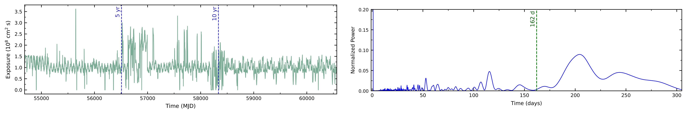
图注：Top: Daily \(\textit{Fermi}-LAT\) exposure at the position of 4FGL~J1913.2+0512 from August 2008 to September 2024. Bottom: Lomb--Scargle periodogram of the daily \(\textit{Fermi}-LAT\) exposure values associated with the exposure-corrected light curve of 4FGL~J1913.2+0512 for the 5--10 years interval of the mission. The vertical dashed line marks 162 days.
对应解读：建议重点查看的图表第5项；模型拟合中关于曝光修正、窗口函数和假周期检查的系统误差讨论。
入选理由：该图给出4FGL J1913.2+0512方向的日曝光时间序列及其Lomb-Scargle周期图，并标出162天位置，是排查Fermi曝光窗口函数是否伪造约162天周期峰的重要系统学检查。
来源与置信度：\(arxiv_source\)；high；\(arxiv_source\) / ss433.tex:figure[9]
强相关工作
这篇工作与 SS 433/W50 的 TeV 观测紧密相关。HAWC 对 SS 433 侧叶的 TeV 探测表明该系统能够加速粒子到很高能量，并把注意力从中央双星扩展到远端喷流-介质相互作用区。本文在 GeV 波段看到西侧叶中等显著性超出，但 GeV 周期调制主要讨论 4FGL J1913.2+0512，这提示 GeV 与 TeV 辐射可能既有关联又不完全同位。建议检索关键词包括“SS 433 W50 HAWC TeV lobes”、“SS 433 Fermi LAT periodicity”、“4FGL J1913.2+0512 precession”。
基础理论上，它连接微类星体喷流进动、相对论喷流多普勒效应、扩散激波加速和伽马射线辐射机制。相反或存在张力的观点主要有两类：一类认为 GeV 周期性可能来自背景、窗口函数或邻近源混淆，而不必诉诸 SS 433 喷流；另一类认为侧叶 GeV/TeV 辐射主要来自长期积累粒子，因而不应出现 \(162\) 天短周期调制。本文的时间分段结果在某种程度上调和了这两者：早期可能存在几何或注入调制，后期该调制减弱，说明系统不是稳态时钟。
相似工作：
- https://arxiv.org/abs/2605.15986
- https://arxiv.org/abs/1803.06293
基础理论 / 方法工作：
- https://ui.adsabs.harvard.edu/abs/1979Natur.279..701M/abstract
- https://ui.adsabs.harvard.edu/abs/1984ARA%26A..22..507M/abstract
相反观点 / 张力线索：
（未提供）
2. GeV γ-ray emission in the low-mass star-forming region AFGL 490
- 来源：arXiv / astro-ph.HE
- 链接：https://arxiv.org/abs/2605.15489v1
- 作者：Li-Nuo Yang, Sheng Tang, Pak-Hin Thomas Tam
- 评分：novelty 8/10，importance 8/10，relevance 10/10，final 9.70/10
- 推荐理由：报告Fermi-LAT发现AFGL 490低质量恒星形成区扩展GeV伽马射线源，并讨论原恒星喷流加速粒子，是高优先级伽马射线天文结果。
中文题目：GeV γ-ray emission in the low-mass star-forming region AFGL 490
做了什么：本篇论文已通过推荐筛选，但自动详细解读生成失败。可先根据题目和摘要判断阅读优先级：We report the discovery of an extended GeV γ-ray source, 4FGL J0330.7+5845e, associated with the star-forming region AFGL 490 using 17 years of Fermi-LAT data. The emission is spatially coincident with a dense molecular cloud and centered near the massive protostar AFGL 490. Its spectral energy distribution shows a distinct high-energy cutoff. Both leptonic and hadronic models can fit the γ-ray spectrum, but energetic arguments rule out stellar winds as the primary accelerator. Instead, the protostellar jet driven by AFGL 490 is identified as a plausible site for particle acceleration, and the derived timescales and maximum particle energies are consistent with theoretical predictions for such jets.
为什么重要：这篇论文在今日候选中通过了本地推荐阈值，说明它与当前高能天体物理兴趣方向或质量标准较匹配；详细内容建议优先查看原文摘要、结论和图表。
理论 / 观测 / 仪器方法价值：由于 LLM 摘要 JSON 解析失败，本节保留为安全占位，不编造论文未确认的公式、图号或链接。
为什么应该关注：日报仍保留这篇论文，是为了避免单篇摘要失败导致整份日报缺失。请把它作为需要人工快速复核的高优先级候选。
展开详细解读：文章讲解、背景、理论、重点章节、图表与相关工作
文章详细讲解
本文的科学问题可以概括为：AFGL 490 附近的 4FGL J0330.7+5845e 是否是一个真实延展的 GeV 伽马射线源，它是否与分子云和原恒星系统物理相关，以及其非热粒子加速器究竟是恒星风、原恒星喷流，还是其他未识别高能源。摘要给出的核心链条是：17 年 Fermi-LAT 数据发现延展辐射；辐射与致密分子云空间重合并位于 AFGL 490 附近；SED 有明显高能截止；强子 pp 与电子轫致辐射均可解释谱形；但恒星风能量不足，原恒星喷流在时间尺度和最大能量上更可行。
方法上，读者应把分析分成三层。第一层是 LAT 空间分析：构建 ROI、包含 4FGL 背景源和银河/各向同性弥散模板、排除或重新拟合目标源，生成 \(\sqrt{TS}\) 图，随后进行定位和延展性检验。第二层是环境匹配：用 CO 同位素线定义分子云速度范围和柱密度结构，把伽马射线中心、延展半径和 95% 置信区域叠加到气体图上。第三层是辐射模型：用 ECPL 形式的母粒子谱分别计算 pp 和相对论性轫致辐射 SED，并比较拟合质量、粒子总能量、截止能量和加速/冷却/逃逸时间尺度。
关键结果应避免只读成“发现了原恒星 GeV 源”。更精确的读法是：数据支持 AFGL 490 方向存在 GeV 过量，并且该过量在当前 LAT 角分辨率下与分子云和原恒星系统一致；SED 的曲率或截止要求母粒子谱不能简单无限延伸；在给定气体密度、距离和云质量假设下，pp 和电子轫致辐射都能给出可接受谱拟合。因此，谱本身未必能唯一判定粒子类型，真正加强喷流解释的是能量预算和最大能量估算：若恒星风可供功率远低于所需非热粒子能量或辐射效率不现实，则应转向喷流激波。
局限主要来自三方面。首先是 LAT 的角分辨率和银河面弥散背景：延展源半径、中心位置和相邻源剥离都可能受背景模型影响，尤其 Fig. 1 是初始 TS 图，不能单独证明源形态。其次是分子云参数：CO 速度成分、\(X_{\rm CO}\)、激发温度、光深修正和距离误差会直接改变 \(n_{\rm H}\)、云质量和所需 \(W_p/W_e\)。第三是辐射机制退化：在高气体密度中，pp 和电子轫致辐射的 GeV 谱都可能近似幂律加截止；若缺少同步射电、硬 X 射线或 TeV 上限，电子磁场约束和高能延伸都不充分。
下一步最有价值的修复或验证包括：用不同 Fermi 弥散模型、不同能量下限、不同 ROI 和源目录版本复做 TS 与延展检验；把点源、均匀圆盘、气体模板和喷流/云相互作用模板进行似然比较；加入射电连续谱、X 射线和 TeV 上限对电子模型施加多波段约束；用高分辨率 CO、SiO、HCO\(^+\) 或喷流示踪线确认激波位置；检查 AFGL 490 喷流的机械功率、年龄和占空比是否足以累计所需非热粒子能量。这样才能把“空间重合的可行解释”推进到“多波段支持的粒子加速场景”。
背景知识
AFGL 490 是一个位于银河系低质量/中等质量恒星形成环境中的著名年轻恒星体区域，核心对象通常被视为一颗仍在吸积、并驱动外流或喷流的较大质量原恒星。恒星形成区过去主要通过红外、毫米波分子线和射电连续谱研究：红外揭示嵌埋源和尘埃加热，CO 同位素线追踪分子云速度结构和柱密度，喷流/外流则提供了年轻恒星向周围介质注入动量和能量的证据。本文的新意在于把这一传统“冷气体—年轻星—外流”的问题推进到 GeV 伽马射线能段，讨论年轻原恒星环境中是否存在有效的非热粒子加速。
Fermi-LAT 在银河平面附近发现了大量 GeV 源，其中一部分与超新星遗迹、脉冲星风云、双星、分子云或恒星形成复合体相关；但在具体源关联上，空间混淆一直很严重。4FGL J0330.7+5845e 被报告为一个延展 GeV 源，并与 AFGL 490 附近的致密分子云在天球投影上重合。这里的关键不是“看到一个 4FGL 源就等于找到一个原恒星加速器”，而是要同时检验：GeV 过量是否显著、是否需要延展模板、是否与气体柱密度或年轻星位置一致、是否有可解释的谱截止、以及附近 4FGL 源和弥散背景是否会制造假信号。
恒星形成区产生高能辐射可以有多种物理途径。大质量恒星形成区中的集体恒星风、激波、超泡和超新星遗迹残留都可能加速宇宙线；低质量或较孤立的原恒星系统中，喷流终端激波、内部工作面以及喷流与致密云碰撞界面也被认为可能把电子或质子加速到相对论能量。本文摘要指出，强子模型和轻子模型都能拟合 GeV 谱能量分布，但从能量学上排除了恒星风作为主要加速源，并倾向于 AFGL 490 驱动的原恒星喷流。这一判断需要读者仔细区分“辐射机制可拟合”和“加速器能量预算可行”两个层次。
常见误区有三类。第一，把空间重合误读为物理关联；在银河面附近，分子云、年轻星和未分辨伽马源投影重合的概率并不低，需要 TS 图、定位误差、延展半径、气体速度选择和替代源模型共同支撑。第二，把强子 pp 模型或电子轫致辐射模型的谱拟合优度直接解释为粒子成分判定；在 GeV 能段、目标气体密度较高时，二者常有严重退化。第三，把“恒星形成区”中的能量来源混为一谈；恒星风、辐射压、磁重联、喷流激波和外流腔壁激波的可用功率、持续时间、最大粒子能量和目标物质分布都不同，必须用时间尺度和能量预算逐项核查。
基础理论 / 方法脉络
从物理图像看，GeV 伽马射线要求有相对论粒子和辐射靶场。若是强子通道，GeV–TeV 质子与分子云中的冷质子碰撞，产生中性 pion，随后 \(\pi^0\to 2\gamma\)。若是轻子通道，相对论电子在气体库仑场中产生轫致辐射，或者通过逆康普顿散射把红外/光学/微波光子提升到 GeV。对于嵌埋原恒星和致密分子云环境，气体密度高，因此 pp 和电子轫致辐射都可能高效；而尘埃红外辐射场强时，逆康普顿也需要被检查，但其相对重要性取决于电子能量损失时间和辐射场能量密度。
观测上，Fermi-LAT 的基本量不是直接的真实天空光子流量，而是在给定仪器响应函数、曝光、点扩散函数和能量重建误差后的计数分布。源探测通常通过最大似然比较完成，定义 \(TS=2\Delta\ln\mathcal{L}\)，在适当条件下 \(\sqrt{TS}\) 可近似理解为高斯显著性。本文的 Fig. 1 是排除原 4FGL J0330.7+5845 后的 \(\sqrt{TS}\) 图，作用是显示 AFGL 490 附近是否仍有局域 GeV 过量；后续 localize 和 extension 分析则用于判断源中心、误差区域和延展半径是否稳定。
谱模型方面，摘要和 Fig. 5 指出作者使用带指数截止的幂律粒子谱来拟合 SED。粒子分布通常可写成 \(dN/dE=N_0(E/E_0)^{-p}\exp(-E/E_{\rm cut})\)。这个表达式既可用于质子，也可用于电子，但辐射核函数不同：pp 过程的伽马谱与母质子谱近似相关，并在低能端带有 pion 产生阈值特征；电子轫致辐射在高密度环境中可产生与电子谱相近的 GeV 连续谱。所谓“高能截止”不一定等同于加速极限本身，也可能来自粒子逃逸、目标气体分布、LAT 能段统计不足或弥散背景建模误差。
分子云信息在本文中是物理关联和模型归一化的桥梁。Fig. 3 的 \(^{12}\)CO 谱线用于选择具有足够信噪比的速度成分，Fig. 4 的 H\(_2\) 柱密度图、\(^{13}\)CO 和 C\(^{18}\)O 轮廓则用于判断伽马射线源是否落在致密气体上。对强子模型而言，目标气体密度 \(n_{\rm H}\) 与所需宇宙线总能量 \(W_p\) 近似反比；对电子轫致辐射，气体密度同样控制辐射效率，但电子还受到同步辐射、逆康普顿和电离损失约束。因此，CO 到 H\(_2\) 的转换、云距离、速度成分归属和柱密度积分范围都是系统误差源。
本文最需要读者带着“多模型竞争”思维阅读。空间上，延展 GeV 源、AFGL 490、致密分子云和附近 4FGL J0329.2+5750c 的相对位置决定了关联可信度；谱上，ECPL 是否明显优于简单幂律或其他曲率模型决定了“截止”的稳健性；能量学上，恒星风、喷流机械功率和粒子总能量之间的比较决定了哪个加速器更合理。若论文没有给出足够的替代模板、能段切分和弥散模型系统误差，结论应被视为有前景但仍需多波段和更高角分辨率验证。
公式与推导
一个连续的阅读推导可从 LAT 的计数统计开始。给定天空模型 \(M\)、能量 bin \(k\) 和空间像素 \(i\)，模型预期计数可写为
其中 \(F_s\) 是第 \(s\) 个源的光子通量模型，\(A_{\rm eff}\) 是有效面积，\(P_{ik}\) 概括点扩散函数与能量响应，\(B_{ik}\) 是弥散和其他背景。这个式子提醒读者：TS 图中的结构不是纯天空图，而是被曝光和 PSF 卷积后的统计结果。
泊松似然为
源探测显著性通常用
定义，其中 \(M_1\) 包含待测源，\(M_0\) 不包含。若自由度和正则条件合适，\(\sqrt{TS}\) 可近似作为显著性；但在源延展、边界参数和低计数情况下，这个近似需谨慎。
目标源的经验光子谱可先写成带指数截止的幂律
而物理拟合中更常对母粒子采用
这里 \(p_i\) 是粒子谱指数，\(E_{i,c}\) 是截止能量，\(K_i\) 与粒子总能量相关。ECPL 的适用条件是源内粒子分布可近似为单区、稳态或时间平均分布。
强子 pp 过程的伽马射线发射率可形式化写为
观测能流近似为
若采用单区密度 \(n_{\rm H}\) 和距离 \(d\)，所需质子能量 \(W_p=\int E_p(dN_p/dE_p)dE_p\) 与 \(d^2/n_{\rm H}\) 近似成正比，这是检查分子云参数系统误差的核心缩放。
电子轫致辐射可类似写为
电子模型还必须满足冷却时间约束，例如同步辐射损失时间近似为
轫致辐射损失时间量级可写为
因此高密度会增强 GeV 轫致辐射，但也会改变电子寿命和所需注入功率。
加速器可行性通常用激波加速时间与损失/逃逸时间比较。扩散激波加速的量级表达为
其中 \(v_s\) 是激波速度，\(B\) 是磁场，\(\eta\ge 1\) 表示相对 Bohm 扩散的效率因子。最大能量由
决定。本文关于原恒星喷流可行的判断，应理解为在合理的喷流年龄、磁场、速度和尺寸下，上式允许达到产生 GeV 伽马射线所需的粒子能量。
最后做能量预算。若伽马射线光度为
加速器机械能供应为
则需要 \(W_p\) 或 \(W_e\lesssim E_{\rm inj}\)。恒星风被排除、喷流被认为可行，本质上就是比较 \(W_i\)、\(L_\gamma\)、\(L_{\rm mech}\)、\(t_{\rm src}\) 和效率 \(\epsilon_{\rm CR}\) 后得到的能量学结论；所有这些量都对距离、密度和源年龄敏感。
模型拟合 / 应用方法
本文的拟合量至少包括三组：LAT 空间模型参数、伽马射线谱参数和物理粒子谱参数。空间模型需要拟合源位置、通量归一化、谱参数，若采用延展源还要拟合或扫描延展半径；谱模型可能包括简单幂律、对数抛物线或 ECPL；物理模型则对质子或电子分布的归一化 \(K_i\)、谱指数 \(p_i\)、截止能量 \(E_{i,c}\) 以及目标气体密度、距离等环境参数敏感。读者应区分哪些参数由 LAT 数据直接约束，哪些来自 CO 或文献先验。
似然层面，LAT 源分析通常采用泊松最大似然，比较含源/无源、点源/延展源、无截止/有截止模型的 \(\Delta\ln\mathcal{L}\)。如果论文给出 TS\(_{\rm ext}\) 或 TS\(_{\rm cut}\)，应检查其自由度解释是否合理；如果只给出 SED 拟合的 \(\chi^2\)，则要注意 SED 点已经来自前一层似然提取，误差可能非高斯，低显著性点应作为上限而非普通点处理。理想情况下，谱点提取、全局谱拟合和物理模型拟合应相互一致。
残差诊断非常重要。空间残差应检查目标源加入后 ROI 内是否仍有成片正残差，尤其在分子云边缘或附近目录源方向；若有，可能说明源模板不合适或背景弥散模型不足。谱残差应检查 ECPL 是否只改善最高能端，还是在多个能段系统性优于幂律；高能截止若由一两个低统计 bin 或上限驱动，结论应降级。若论文没有展示残差图，读者应从表格中的 bin-by-bin 通量、TS 和误差反推哪些点主导拟合。
参数退化主要有四类。第一，pp 模型中 \(W_p\)、\(n_{\rm H}\) 和 \(d\) 退化：\(W_p\propto d^2/n_{\rm H}\)，云密度越高所需质子能量越低。第二，电子轫致辐射中 \(W_e\)、\(n_{\rm H}\)、磁场和同步/逆康普顿约束退化；仅有 GeV 谱时很难唯一确定电子能量预算。第三，谱指数 \(p\) 与截止能量 \(E_c\) 退化：较软谱加较高截止可能近似较硬谱加较低截止。第四，空间模板与谱参数退化：若低能光子 PSF 宽且弥散背景强，源的延展和通量归一化会互相影响。
系统误差应作为结论可信度的主要限制。LAT 银河弥散模型、有效面积、能量选择、ROI 大小、邻近源自由/固定策略都会改变 TS 和 SED；分子云方面，CO 光深、激发温度、速度积分窗口和距离会改变目标气体质量；理论方面，pp 截面参数化、电子轫致辐射截面、单区假设和粒子逃逸都会改变拟合参数。若作者声称恒星风能量不足，读者应检查该结论在气体密度最低、距离最大、加速效率较高等保守组合下是否仍成立。
模型可能失败的情形包括：GeV 源其实由未解析脉冲星或背景活动星系贡献；延展性来自不完善弥散背景而非真实源；CO 选定速度成分与 AFGL 490 距离不一致；SED 截止是邻近源剥离误差造成；喷流功率或年龄不足以累计非热粒子。更稳健的拟合策略是联合多波段数据，在同一后验框架中同时拟合伽马射线、气体分布、射电上限和喷流参数，并报告后验相关矩阵或 corner plot。
重点章节 / 结果段落怎么读
-
引言与源背景：重点找作者如何界定 AFGL 490 的恒星形成环境、已有喷流/外流证据、分子云 PGCC G142.03+1.73 的距离和物理参数，以及为什么低质量或较孤立原恒星系统的 GeV 辐射值得研究。读这一节时应记录所有用于后续能量预算的外部参数，例如距离、云质量、密度、喷流功率和年龄。
-
Fermi-LAT 数据与空间分析：这是判断发现是否稳健的核心。应逐项核查数据时间跨度、能量范围、事件类别、ROI 大小、天顶角切割、弥散模型、4FGL 源处理方式、localize 步骤和 extension 检验。尤其要看 4FGL J0330.7+5845e 从点源到延展源的统计增益是否足够，以及附近 4FGL J0329.2+5750c 是否被正确建模。
-
分子云数据与柱密度估计：阅读 CO 章节时不要只看最终图，而要追踪速度范围、SNR 阈值、同位素线用途、光深和激发温度假设、\(X_{\rm CO}\) 或 LTE 柱密度转换。因为气体密度进入 pp 和轫致辐射归一化，云参数的不确定性会直接改变所需粒子能量。
-
谱能量分布与辐射模型：这一节要把经验谱拟合和物理模型拟合分开读。先确认 SED 点如何提取、每个 bin 是否固定谱指数、低显著性 bin 是否作为上限；再看 ECPL 母粒子谱的参数、拟合优度、能量范围和总能量积分下限。若论文比较了 pp、轫致辐射、逆康普顿或组合模型，应记录哪些模型被数据排除，哪些只是能量学上不优。
-
加速器能量预算与时间尺度讨论：这是摘要中“排除恒星风、支持原恒星喷流”的证据所在。读者应检查恒星风功率如何估算，喷流机械功率和速度来自何处，加速效率取值是否保守，\(t_{\rm acc}\)、\(t_{\rm loss}\)、\(t_{\rm esc}\) 的交点是否能达到所需 \(E_{\max}\)。如果这些参数来自文献或经验关系，应把它们作为主要系统误差而非精确测量。
-
结论与未来展望：结论段应被用来反查全文证据链是否闭合。若结论强调“发现延展 GeV 源并提出喷流解释”，这比“证明 AFGL 490 是唯一加速器”更稳妥。未来工作应优先寻找与喷流激波共位的射电非热谱、硬 X 射线或 TeV 上限，并复核 LAT 背景系统误差。
建议重点查看的图表
-
LAT \(\sqrt{TS}\) 或 TS map：重点看目标 4FGL 源移除后是否仍有集中显著过量，峰值是否靠近 AFGL 490，是否存在多个峰或与附近 4FGL J0329.2+5750c 混叠；还要注意测试源谱指数固定为 2.2 时，显著性图对谱假设的敏感性。
-
定位与延展诊断图：应检查 localize 后的最佳中心、统计误差椭圆、延展半径、\(ul_{95}\) 或 95% 区域，以及点源模型与延展模板的 \(\Delta TS\)。若中心在不同能段或不同背景模型下漂移明显，空间关联可信度会下降。
-
CO 谱线和速度积分图：Fig. 3 类图需要看 \(^{12}\)CO 谱线中 SNR>3 的速度范围、是否有多个速度成分叠加、平滑是否改变线翼判断。速度选择会影响 Fig. 4 的柱密度图和后续气体质量估计。
-
H\(_2\) 柱密度与 CO 轮廓叠加图：Fig. 4 需要看红色伽马源中心、延展圆、\(ul_{95}\)、AFGL 490 黄色星号、\(^{13}\)CO 和 C\(^{18}\)O 轮廓之间的相对关系。最关键的是伽马延展区域是否覆盖致密气体峰，还是仅在大尺度上相邻。
-
SED 与辐射模型拟合图：Fig. 5 需要看每个能量 bin 的通量点、误差条、上限、pp 曲线和电子轫致辐射曲线的差别，尤其高能端截止是否由多个显著点支持，还是由最后一两个 bin 或上限主导。
-
残差/拟合优度与替代模型表：若论文给出 log-likelihood、AIC/BIC、\(\chi^2\)、TS\(_{\rm cut}\)、TS\(_{\rm ext}\) 或系统误差表，应重点比较 PL、LP、ECPL、点源、圆盘和气体模板。没有残差图时，读者应自己记录哪些能量 bin 对模型区分贡献最大。
-
时间尺度和最大能量图/表：若有加速、冷却、逃逸时间随粒子能量的曲线，应看交点如何给出 \(E_{\max}\)，并检查磁场、喷流速度、激波尺寸、扩散系数和气体密度的取值是否合理。
关键图表逐图导读
图 1：这是以 AFGL 490 为中心的 \(2^\circ\times2^\circ\) 初始 \(\sqrt{TS}\) 图，且只排除了 4FGL J0330.7+5845，测试点源谱指数设为 2.2。读图时先看颜色条或等值区域对应的显著性峰是否集中在 AFGL 490 附近，再看峰形是单峰还是有向附近源延伸的结构。陷阱是把 \(\sqrt{TS}\) 图直接当作真实亮度图：它依赖背景模型、测试谱指数和 LAT PSF，且在低能段 PSF 较宽时可能把多个源或弥散背景结构合成一个过量。
图 3：这是 PGCC G142.03+1.73 位置的 Savitzky-Golay 平滑 \(^{12}\)CO 谱，标出噪声水平和 SNR>3 区间。横轴应是速度，纵轴是亮温或积分相关量；需要关注哪些速度成分被纳入分子云积分，以及是否存在多个可混淆云成分。平滑有利于识别总体线形，但也可能弱化窄线或线翼，因此它主要是 Fig. 4 柱密度构建的输入诊断，而不是伽马射线关联的独立证明。
图 4：这是核心空间关联图，背景为中心 \(2^\circ\times2^\circ\) 区域的 H\(_2\) 柱密度，青色为 \(^{13}\)CO 10% 峰值轮廓，绿色为 C\(^{18}\)O 10% 峰值轮廓；红叉是 4FGL J0330.7+5845e 中心，红色虚线圆为延展半径，橙色虚线圆为 \(ul_{95}\)，黄色星号为 AFGL 490，白叉为 4FGL J0329.2+5750c。读图时要看红色延展区域是否覆盖致密气体，而不仅是红叉接近黄色星号；还要检查白叉邻源是否位于可能污染区域。陷阱是只看二维投影，不看 CO 速度归属和距离一致性。
图 5：这是 4FGL J0330.7+5845e 的 SED 及 pp 和相对论性轫致辐射模型，母质子/电子谱均采用 ECPL。横轴通常是伽马射线能量，纵轴是 \(E^2dN/dE\) 或能流；数据点误差条和上限决定高能截止的显著性。需要逐点看两条模型曲线在哪些能段分离、是否都穿过误差条、截止能量是否由最高能 bin 统计支持。陷阱是视觉上两条曲线都很好就认为机制已判定；实际上若缺少多波段约束和残差图，Fig. 5 更像是在说明“二者均可行”，而非二者中谁唯一正确。
论文原图 / 可嵌入图片
Fig05
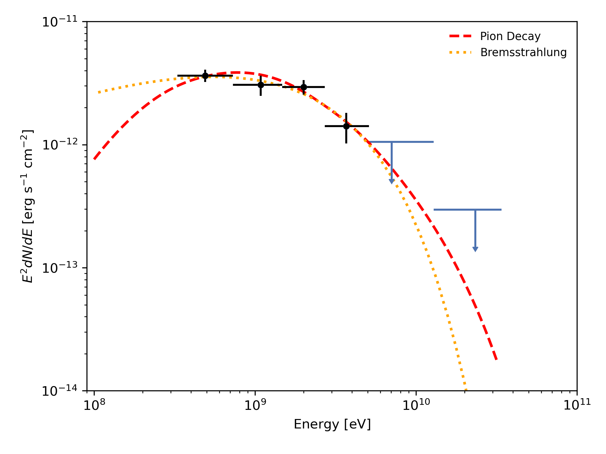
图注：The spectral energy distribution (SED) resulting from the $pp$ interaction process and relativistic Bremsstrahlung of 4FGL~J0330.7+5845e, fitted with an exponentially cut-off power-law (ECPL) proton/electron spectrum.
对应解读：对应“建议检查论文中展示主要数据、模型比较、参数约束、残差或灵敏度预测的图表”以及模型拟合段落中需重点检查的谱能量分布与拟合模型。
入选理由：这是论文核心物理结论的关键图，直接展示4FGL J0330.7+5845e的GeV谱能量分布，并比较pp强子过程与相对论性轫致辐射轻子模型的ECPL拟合。它最能支撑摘要中关于高能截止、强子/轻子模型均可拟合以及粒子加速机制讨论的解读。
来源与置信度：\(arxiv_source\)；high；\(arxiv_source\) / main.tex:figure[5]
Fig04
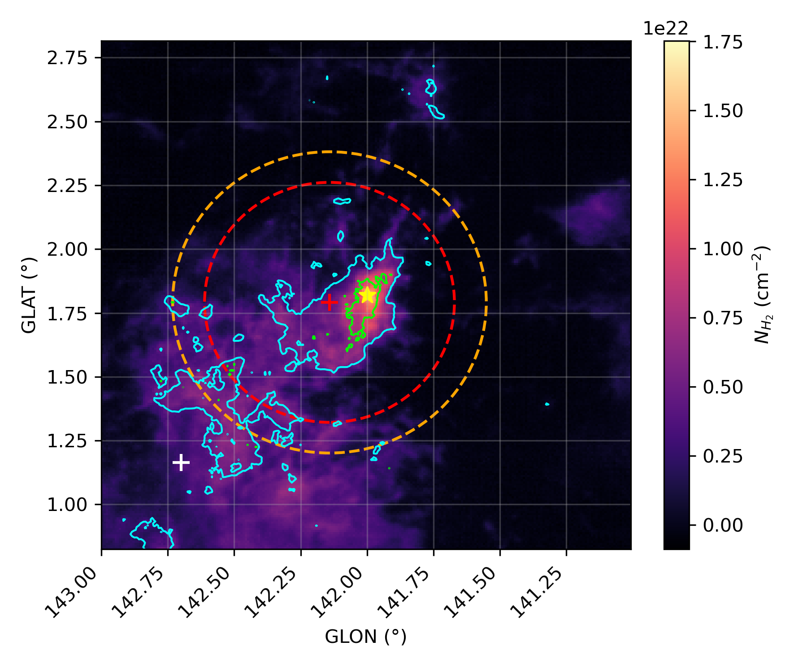
图注：Map of the molecular hydrogen column density within the central $2^\circ \times 2^\circ$ region of interest (ROI). The $^{13}$CO emission contours are outlined in cyan, corresponding to 10\% of the peak intensity ($\sim 3.97$ K km/s), and the C$^{18}$O emission contours are outlined in lime, corresponding to 10\% of the peak intensity ($\sim 0.58$ K km/s). The red cross marks the source center of 4FGL~J0330.7+5845e, together with its extension radius (red, dashed circle) and $ul_{95}$ (orange, dashed circle). The yellow star denotes the protostar AFGL 490, while the white cross marks the source 4FGL J0329.2+5750c.
对应解读：对应“建议重点查看的图表”中关于主要数据、空间关联和系统误差/置信区域的检查，尤其是γ射线源与分子云、AFGL 490的位置关系。
入选理由：该图把分子氢柱密度、13CO和C18O轮廓、4FGL J0330.7+5845e中心、延展半径、95%上限区域以及AFGL 490位置放在同一视场中，是证明γ射线源与致密分子云和原恒星空间重合的最重要图。相比单独的CO谱线图，它更直接支撑源关联和扩展源解释。
来源与置信度：\(arxiv_source\)；high；\(arxiv_source\) / main.tex:figure[4]
Fig01
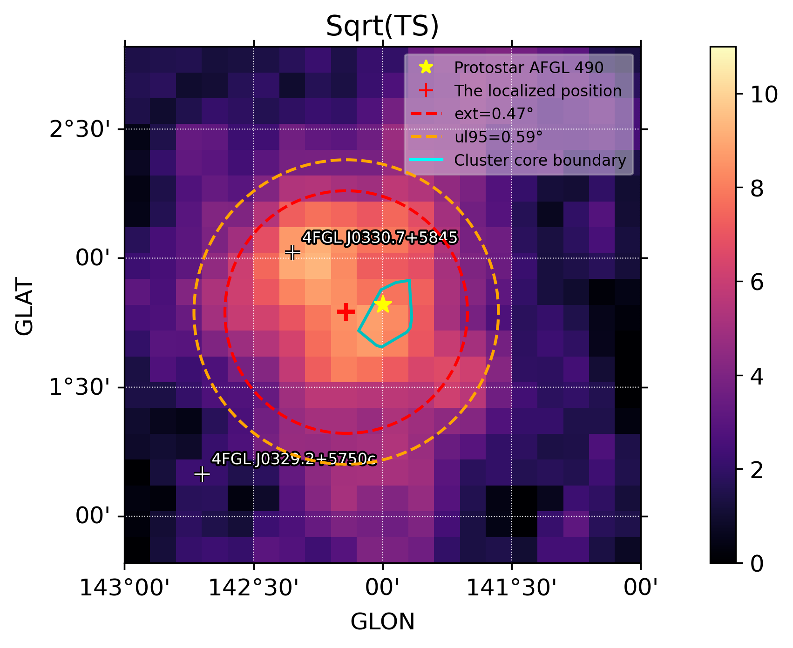
图注：Initial(before \texttt{localize}) Sqrt(TS) map for a $2^\circ \times 2^\circ$ region centered on protostar AFGL 490. Only the source 4FGL J0330.7+5845 was excluded, and the spectral index of the test point source was set to be $2.2$.
对应解读：对应“建议检查论文中展示主要数据、模型比较、参数约束、残差或灵敏度预测的图表”中的源探测与空间显著性诊断。
入选理由：该Sqrt(TS)图展示在排除原4FGL源后的初始显著性分布，是确认AFGL 490附近存在GeV过量辐射和后续localize/扩展分析的基础证据。它适合用于说明发现过程和γ射线信号的空间显著性。
来源与置信度：\(arxiv_source\)；high；\(arxiv_source\) / main.tex:figure[1]
Fig03
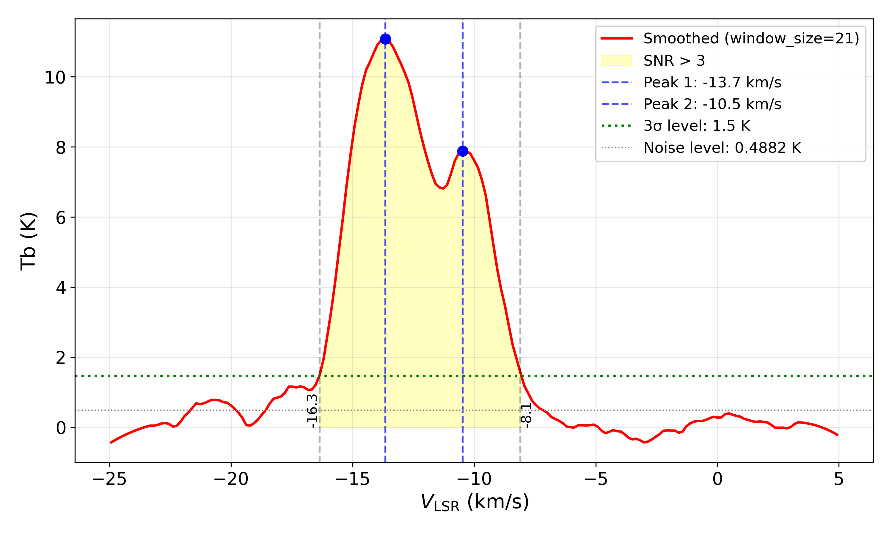
图注：The Savitzky-Golay–smoothed $^{12}$CO spectrum at the position of the molecular cloud PGCC G142.03+1.73, with the noise level indicated and the regions with SNR > 3 marked.
对应解读：对应空间环境与分子云诊断部分，可辅助理解AFGL 490所在分子云的CO速度结构和信噪比选择。
入选理由：该图展示PGCC G142.03+1.73位置的12CO谱线及SNR>3区间，用于支撑分子云气体成分和速度范围选择。其科学价值主要是辅助Fig04的柱密度和CO轮廓构建，和γ射线模型拟合的直接关系弱于Fig05、Fig04和Fig01。
来源与置信度：\(arxiv_source\)；high；\(arxiv_source\) / main.tex:figure[3]
强相关工作
相关工作的第一条线索是“恒星形成区与 GeV/TeV 伽马射线”。应检索 Fermi-LAT 对大质量恒星形成区、OB association、Cygnus cocoon、Westerlund 星团、RCW 38/RCW 49 类区域以及分子云照亮问题的研究。这些工作提供了恒星风、集体激波和局部宇宙线增强的背景框架，也能帮助判断 AFGL 490 这类较小尺度原恒星系统是否在能量和空间尺度上特殊。
第二条线索是“原恒星喷流中的粒子加速”。应检索 protostellar jets, non-thermal radio emission, diffusive shock acceleration in YSO jets, gamma rays from young stellar objects 等关键词。基础工作通常讨论喷流终端激波、内部激波、磁场放大、电子同步辐射和质子 pp 过程的最大能量。与本文最相关的不是一般恒星风泡模型，而是嵌埋原恒星喷流在高密度分子环境中能否产生可观 GeV 辐射的理论预测。
第三条线索是“Fermi-LAT 延展源和银河面源关联方法”。应查找 4FGL extended sources、LAT source localization、extension analysis、diffuse background systematics、molecular cloud gamma-ray template fitting 等方法论文。本文的结论高度依赖空间分析稳健性，因此同类 LAT 延展源论文中关于 TS\(_{\rm ext}\)、替代模板、能段切分和系统误差的处理方式，是判断本论文可信度的重要参照。
潜在张力或反例也值得主动检索：未解析脉冲星/毫秒脉冲星群、背景 AGN、银河弥散结构、局部宇宙线照亮分子云都可能模拟恒星形成区 GeV 信号。检索路径可以从论文 bibliography 中关于 AFGL 490、PGCC G142.03+1.73、4FGL J0330.7+5845e、4FGL J0329.2+5750c、CO survey 和 protostellar jet acceleration 的引用反向追踪，再查是否有射电非热谱、X 射线源表或 TeV 巡天上限与本文解释相冲突。
相似工作：
（未提供）
基础理论 / 方法工作：
（未提供）
相反观点 / 张力线索：
（未提供）
3. Population synthesis of Galactic middle-aged pulsar wind nebulae I. Detection prospects for current and future instruments
- 来源：arXiv / astro-ph.HE
- 链接：https://arxiv.org/abs/2605.15359v1
- 作者：A. De Sarkar, D. F. Torres, B. Olmi, N. Bucciantini, D. M. -A. Meyer
- 评分：novelty 8/10，importance 8/10，relevance 10/10，final 9.70/10
- 推荐理由：面向TeV伽马射线PWN总体和CTAO探测前景，且加入reverberation阶段的更现实种群合成；与VHE伽马射线和CTA高度相关。
中文题目：银河系中年脉冲星风云族群合成 I：当前与未来仪器的探测前景
做了什么：这篇文章做的是一个面向银河系中年脉冲星风云的族群合成预测：作者用包含超新星遗迹反向激波“回响阶段”的混合动力学框架，对大量年龄到约 \(10^5\,\mathrm{yr}\) 的脉冲星风云进行演化，并把得到的甚高能 \(\gamma\) 射线通量同现有和未来仪器的灵敏度、巡天覆盖相比较。核心结论是，CTAO 将把 TeV 波段可靠探测到的脉冲星风云数量提高约一个数量级，而是否正确处理回响阶段会显著改变可探测源的数量、亮度和年龄分布。
为什么重要：脉冲星风云已经是银河系甚高能 \(\gamma\) 射线源中最大的已知族群之一，但中年系统的演化受超新星遗迹反向激波压缩影响很大。过去很多族群预测把这一阶段简化掉，容易低估或误判 TeV 源的寿命、尺寸和光谱。本文的重要性在于把单源动力学中已知很关键的回响过程放进了族群层面的可探测性预报。
理论 / 观测 / 仪器方法价值：对理论而言，它把脉冲星自旋下降、风云膨胀、反向激波压缩、粒子辐射冷却和银河系源分布放进一个可批量运行的框架。对观测而言，它给出 CTAO、现有切伦科夫望远镜阵列和广域 \(\gamma\) 射线巡天可能看到多少、看到哪类脉冲星风云的定量预期。对仪器和巡天策略而言，它直接连接源族群物理与灵敏度、天区覆盖和源混淆问题。
为什么应该关注：如果你关心 CTAO 时代的银河系 TeV 源统计，这篇文章相当于告诉你“背景源表”中很大一部分可能来自什么物理族群，以及哪些模型假设会改变这个判断。它也提醒我们：中年脉冲星风云不是简单变暗的年轻 Crab-like 源，回响阶段可能让它们重新变亮、变小、谱形改变，从而影响未识别 TeV 源的分类、银河宇宙线电子正电子预算和脉冲星-超新星遗迹耦合模型。
展开详细解读：文章讲解、背景、理论、重点章节、图表与相关工作
文章详细讲解
科学问题：脉冲星风云是由年轻或中年脉冲星的相对论性风注入磁化等离子体和非热粒子形成的扩展源，在 X 射线到 TeV \(\gamma\) 射线波段都能发光。问题不只是单个源能否被解释，而是银河系中到底应该有多少这类源能被当前和未来仪器看到。尤其是在年龄达到几千年至几万年后，超新星遗迹的反向激波会回撞并压缩风云，这个回响阶段会改变风云半径、磁场、粒子能量损失和逆康普顿辐射效率。若族群模型没有可靠处理这一阶段，对 TeV 源数目的预测就可能偏差很大。
作者怎么做：论文使用混合 \(\texttt{TIDE+L}\) 框架，把薄壳近似下的脉冲星风云动力学同拉格朗日描述的超新星遗迹结构耦合起来，从自由膨胀阶段一直演化到 \(10^5\,\mathrm{yr}\) 左右。每个模拟源从分布中抽取脉冲星初始自转周期、磁场或自旋下降参数、超新星爆炸能量、抛射物质量、环境密度以及银河系位置等，然后随时间计算脉冲星注入功率、风云动力学、磁场演化和粒子辐射谱。最后把模型给出的 \(\gamma\) 射线通量同不同仪器的灵敏度曲线和天区覆盖相比较，估计可探测源数。
关键结果：主要结论是 CTAO 对银河系 TeV 脉冲星风云的探测数将显著超过当前可靠确认的样本，量级上可增加约十倍。这支持一个很直接的图像：未来 TeV 银河源表中，脉冲星风云仍会是主导族群之一，且许多源会是中年、扩展、可能经历过回响阶段的系统。论文还强调，回响阶段不是一个可以用简单寿命因子代替的小修正；压缩会提高磁场、改变绝热损失或增益、移动谱能量分布峰值，从而影响源在 \(\mathrm{GeV}\) 到 \(\mathrm{TeV}\) 波段的可见性。
局限和下一步：这类族群合成不可避免依赖许多分布假设，例如脉冲星出生率、初始周期分布、制动指数、超新星环境密度、银河系空间分布和粒子注入谱。薄壳加拉格朗日处理能有效批量运行，但仍不能完整捕捉三维不稳定性、非球对称反向激波、脉冲星本动导致的偏心回响以及复杂环境中的源形态。下一步自然是把预测同 CTAO 早期巡天源表、H.E.S.S. Galactic Plane Survey、LHAASO 和 Fermi-LAT 的多波段数据联合比较，并把源数、角大小、谱指数和关联脉冲星性质同时作为约束。
背景知识
研究对象是脉冲星风云。一个高速旋转、强磁场的中子星通过电磁转矩损失自转能，释放出超相对论性电子、正电子和磁场能。这些粒子在终止激波附近被加速，在风云磁场中产生同步辐射，并通过逆康普顿散射背景光子产生 \(\gamma\) 射线。Crab Nebula 是年轻脉冲星风云的标准样本，但银河系 TeV 源表中许多扩展源更可能是较老、较暗、形态更复杂的中年系统。
历史问题在于，单源模型和族群模型的复杂度长期不匹配。单源研究已经知道超新星遗迹反向激波会在几千到几万年尺度上压缩脉冲星风云，引起所谓 reverberation 或回响阶段；但族群合成为了能演化成千上万个源，常把这一阶段简化为经验寿命或近似半径演化。这样做对年轻源也许尚可，对中年 TeV 源却很危险，因为 TeV 电子冷却时间、风云压缩时间和仪器可探测阈值往往处在相近量级。
观测背景也在快速变化。H.E.S.S.、MAGIC、VERITAS 已经确认了一批 TeV 脉冲星风云或候选体，Fermi-LAT 在 \(\mathrm{GeV}\) 波段提供了长期监测，HAWC 和 LHAASO 对大角尺度、超高能扩展源越来越敏感。CTAO 的角分辨率、灵敏度和能段覆盖将把许多过去处于阈值附近或被混淆的源分辨出来。因此，现在重新做族群预测不是单纯更新数字，而是为下一代 TeV 源表的物理分类建立先验。
该领域常见误区之一是把“脉冲星年龄越大，风云越暗”看成单调规律。实际上，回响压缩会让磁场增强，使同步损失增强，也可能在某些能段短时提高辐射效率。另一个误区是把 TeV 亮度直接等同于当前自旋下降功率 \(\dot{E}\)。TeV 辐射由长寿命电子积累产生，记忆了过去的注入史和环境光场，因此同当前 \(\dot{E}\)、特征年龄 \(\tau_c\) 和真实年龄之间存在显著散布。
基础理论 / 方法脉络
基础物理图像从能量注入开始。脉冲星以自旋下降功率 \(L(t)\) 向周围注入相对论性风，风在外部压力约束下形成脉冲星风云。风云的半径由内部压力、外部超新星遗迹结构和注入能量共同决定；粒子能谱则由注入、辐射冷却、绝热变化和逃逸共同决定。早期风云在自由膨胀的超新星抛射物中膨胀，后期会受到反向激波压缩并进入回响阶段。
本文的关键模型假设是：在族群规模上，不追踪完整三维磁流体结构，而使用薄壳动力学和拉格朗日超新星遗迹描述来获得风云半径、速度、压力和压缩历史。这样的模型牺牲了形态细节，但能保留影响宽带光谱的主要动力学量。对每个合成源，脉冲星的初始参数、超新星参数和环境参数从分布抽样，从而得到一组可与银河系源表比较的模拟族群。
辐射方面，TeV \(\gamma\) 射线主要来自电子和正电子对宇宙微波背景、红外和星光光子的逆康普顿散射。X 射线同步辐射更敏感于磁场强度和高能电子的快速冷却。回响阶段压缩风云时，磁场增强会提高同步辐射损失，也会通过绝热加热或压缩改变粒子能量分布。于是，同一年龄和同一 \(\dot{E}\) 的系统可以因环境密度和反向激波到达时间不同而呈现很不一样的 \(\gamma\) 射线亮度。
观测统计逻辑是把内禀光度转化为地球通量，再同仪器灵敏度比较。这里的重要细节包括源的距离、银河纬度和经度、扩展角大小、曝光不均匀、能段选择以及源混淆。一个源即便总光度较高，如果距离远、角尺度过大或处在强弥散背景区域，也可能低于有效探测阈值。反过来，CTAO 对较小角尺度和较硬谱源的灵敏度提升，会显著改变中年脉冲星风云的可见样本。
常见退化包括：初始自转周期 \(P_0\) 与制动指数 \(n\) 都能改变早期注入能量；环境密度 \(n_{\rm ISM}\) 与超新星抛射物质量 \(M_{\rm ej}\) 都能改变反向激波到达时间；磁化比例与粒子注入谱都能改变同步和逆康普顿亮度比。族群合成的优势是可以把这些退化转化为预测分布，但它也要求读者不要把单个预测数看得过于精确，而要关注源数、年龄、通量和角大小的联合趋势。
公式与推导
第一步是脉冲星自旋能的损失。若角速度为 \(\Omega\)，转动惯量为 \(I\)，自旋能为
这里 \(E_{\rm rot}\) 是可供风云粒子和磁场使用的总能库，\(I\) 通常取中子星量级。自旋下降功率定义为
它是脉冲星风云模型的能量注入源项，也是连接可观测脉冲星参数与风云辐射的核心量。
第二步是给出制动律。若采用
其中 \(K\) 是转矩常数，\(n\) 是制动指数，则自旋下降功率可写成常用形式
这里 \(L_0\) 是初始自旋下降功率，\(\tau_0\) 是初始自旋下降时标。族群合成中抽样 \(P_0\)、\(n\) 或等价参数，实质上就是抽样每个源的能量注入历史。
第三步是风云能量守恒。把风云总能量记为 \(E_{\rm PWN}\)，半径为 \(R_{\rm PWN}\)，体积为 \(V\)，压强为 \(P_{\rm PWN}\)，则一维近似下可写为
右侧三项分别代表脉冲星注入、绝热功和辐射损失。回响阶段的关键是 \(dV/dt\) 可为负，绝热项从损失转为压缩加热，从而改变粒子能量和磁场。
第四步是动力学压力平衡的近似表达。风云壳层受到内外压力差驱动，可概念性写成
这里 \(M_{\rm sh}\) 是被扫起壳层的有效质量，\(P_{\rm SNR}\) 是超新星遗迹内部介质压力。反向激波到达时 \(P_{\rm SNR}\) 快速升高，若超过 \(P_{\rm PWN}\)，风云就被压缩。
第五步是粒子输运。电子或正电子数分布 \(N(E,t)\) 可由连续方程表示为
其中 \(Q(E,t)\) 是注入谱，\(\dot{E}\) 包含同步、逆康普顿和绝热能量变化，\(\tau_{\rm esc}\) 是逃逸时标。本文这类模型的宽带谱预测，本质上来自对这个输运问题的时间积分。
第六步是辐射冷却率。对洛伦兹因子为 \(\gamma\) 的电子，在 Thomson 近似下同步和逆康普顿损失可写为
这里 \(\sigma_T\) 是 Thomson 截面，\(U_B=B^2/(8\pi)\) 是磁场能量密度，\(U_{\rm ph}\) 是靶光子场能量密度。回响压缩增大 \(B\)，因而增大 \(U_B\)，这会缩短高能电子寿命并重塑 TeV 光谱。
第七步是从光度到通量。若某能段内 \(\gamma\) 射线光度为 \(L_\gamma\)，距离为 \(d\)，则能量通量近似为
对族群合成而言，距离分布和银河系空间分布会把内禀光度函数映射为观测通量函数，这是预测源数的直接入口。
第八步是可探测性判据。给定仪器在源位置、能段、谱形和角大小下的有效灵敏度 \(F_{\rm sens}\)，一个简化探测条件是
这里 \((l,b)\) 是银河坐标，\(\theta_{\rm src}\) 是角半径。真正分析会比这个阶跃判据复杂，但该式说明了为什么同样的物理源在不同巡天覆盖和背景条件下会得到不同探测结果。
第九步是显著性或似然的观测对应。计数实验中，模型预期计数 \(\mu_i=s_i(\boldsymbol{\theta})+b_i\)，观测计数为 \(k_i\)，泊松似然为
其中 \(s_i\) 是源模型计数，\(b_i\) 是背景计数，\(\boldsymbol{\theta}\) 是谱和形态参数。族群论文通常不逐源做完整似然，但仪器灵敏度曲线正是由类似统计判据折算而来。
第十步是源数预测。若合成族群中第 \(j\) 个源有探测指示函数 \(\mathcal{I}_j\)，则预测可探测数为
这个量把脉冲星出生物理、超新星环境、辐射演化和仪器选择函数压缩成一个可与源表比较的数字；本文的核心结果就是 \(N_{\rm det}\) 在包含真实回响处理后对 CTAO 明显增大。
模型拟合 / 应用方法
这篇文章本身更接近前向族群合成和可探测性预测，而不是对单个源做后验拟合。实际被“拟合”或校准的量包括脉冲星出生率、初始自转参数分布、超新星遗迹参数分布、银河系空间分布、粒子注入谱以及仪器灵敏度选择函数。读者应把结果理解为在一组先验分布下生成模拟银河系，然后问这些源有多少会超过探测阈值。
如果把这类工作写成统计模型，数据可以是现有 TeV 源表中的源数、通量分布、角大小分布、关联脉冲星 \(\dot{E}\) 和年龄分布。似然可用源数的泊松项、通量函数的分箱似然以及已识别源属性的联合似然构成。难点是选择函数不简单：银河平面曝光不均匀，弥散背景随经纬度变化，扩展源灵敏度不同于点源灵敏度，源混淆会改变有效检出概率。
主要参数退化很强。较小的初始周期 \(P_0\) 可以提供更大早期能量注入，类似于提高粒子加速效率；较高环境密度会让反向激波更早到达，类似于改变回响阶段发生的年龄窗口；较强磁场会提高同步辐射但可能压低晚期 TeV 电子存活量。仅用 TeV 源数很难区分这些效应，因此需要同时比较多波段谱能量分布、源大小和年龄相关趋势。
残差诊断应重点看预测族群是否在几个维度同时失败。例如模型可能预测正确的总源数，却产生过多近邻大角尺度源；也可能匹配 TeV 通量函数，但无法解释 X 射线暗弱的 TeV halo-like 源；还可能在年轻高 \(\dot{E}\) 系统上表现良好，却在中年候选源上出现系统偏差。这些残差比单一的 \(N_{\rm det}\) 更能指出回响动力学、逃逸过程或环境分布是否需要修正。
实际应用场景包括为 CTAO 银河平面巡天准备源族群先验、给未识别 TeV 源排序、估计脉冲星风云对银河弥散 \(\gamma\) 射线和局地电子正电子通量的贡献，以及评估哪些候选源最值得做 X 射线或射电脉冲星跟进。模型失败也有价值：如果 CTAO 发现的中年 PWN 数远低于预测，可能意味着粒子逃逸更强、磁化更高或出生率分布有误；如果远高于预测，则可能说明 TeV 发光寿命被低估，或存在大量类 TeV halo 的扩展结构。
重点章节 / 结果段落怎么读
一、样本与族群输入参数部分应先读。重点看作者如何抽样脉冲星初始周期、制动参数、超新星爆炸能量、抛射物质量、环境密度和银河系空间位置。这些先验分布决定了最终源数的基线，很多结论的稳健性取决于这些分布是否合理。
二、\(\texttt{TIDE+L}\) 动力学框架是全文方法核心。读者应关注薄壳模型如何同拉格朗日超新星遗迹结构连接，尤其是反向激波到达、风云压缩、再膨胀和压力演化的处理。这里决定了本文相对早期族群预测的主要增量。
三、辐射演化和 \(\gamma\) 射线通量计算部分要同动力学一起读。关键不是某个瞬时谱形，而是粒子注入历史、磁场演化和冷却如何共同决定 \(\mathrm{GeV}\) 与 \(\mathrm{TeV}\) 波段亮度。读者应检查是否分别考虑同步、逆康普顿、绝热变化和可能的逃逸。
四、仪器可探测性部分直接关系到结论。应看作者采用了哪些当前仪器和未来 CTAO 的灵敏度、能段、天区覆盖以及扩展源修正。源数预测如果只用点源灵敏度，会对大角尺度中年 PWN 过于乐观；若考虑背景和覆盖不足，则结果更接近真实巡天。
五、结果和讨论部分应重点看不同演化阶段对可探测样本的贡献。尤其要比较包含回响处理与简化处理时，预测源数、通量分布、年龄分布和距离分布如何变化。最后的讨论通常会指出与现有 TeV 源表的关系和 CTAO 可检验的预测。
建议重点查看的图表
-
脉冲星风云半径、压力或磁场随年龄演化的示例图：重点看自由膨胀、回响压缩和再膨胀阶段是否清楚分开，以及回响阶段持续时间有多大散布。
-
单源或代表性源的谱能量分布演化图：重点看同步峰和逆康普顿峰在回响前后如何移动，TeV 通量是否短时增强或被冷却抑制。
-
合成族群的 \(\gamma\) 射线通量分布或 \(\log N-\log F\) 图：重点看 CTAO 阈值相对当前仪器阈值的位置，以及预测源数增加是否主要来自阈值附近的大量弱源。
-
可探测源的年龄分布图：重点看 CTAO 新增源是否集中在中年范围，以及回响阶段是否改变年龄峰值。
-
可探测源的银河经纬度分布图：重点看源是否沿银河平面集中，是否存在天区覆盖导致的选择效应，以及外银河区域预测是否过低或过高。
-
源角大小或距离分布图：重点看扩展源灵敏度修正是否会显著减少近邻大角尺度源，避免把“亮但太大”的源误当成易探测对象。
-
与现有 PWN 候选或确认样本的对比表：重点看模型是否能覆盖已知源的 \(\dot{E}\)、年龄、距离和 TeV 光度范围，而不是只匹配总数量。
关键图表逐图导读
图 1：建议把它视为动力学演化图来读。横轴通常应是年龄 \(t\)，纵轴可能是 \(R_{\rm PWN}\)、磁场 \(B\)、压力或相关无量纲量。模型线若出现先增大、后收缩、再膨胀的结构，就是回响阶段的直接标志。读图陷阱是不要把半径下降误解为源消失；压缩期间辐射性质可能反而变化更剧烈。
图 2：若论文给出代表性谱能量分布，横轴通常是光子能量，纵轴是 \(\nu F_\nu\) 或能量通量。同步分量和逆康普顿分量应分别对应低能到 X 射线、高能到 TeV 波段。应重点看回响前后 TeV 峰值高度和峰位变化。陷阱是单一年龄的谱不能代表族群，因为环境密度和初始自旋参数会造成很大散布。
图 3：若是通量分布或 \(\log N-\log F\) 图，横轴通常是积分通量或能量通量，纵轴是累计源数。不同仪器灵敏度可表现为竖线或曲线。主要结论应体现在 CTAO 阈值进入源数快速上升区，从而导致探测数大幅增加。读图时要检查通量定义的能段是否一致，否则不同仪器之间不能直接比较。
图 4：若是年龄分布图，横轴是年龄 \(t\)，纵轴是源数或归一化概率密度。应看可探测样本是否在 \(10^4\) 到 \(10^5\,\mathrm{yr}\) 附近有显著贡献，以及回响阶段是否造成峰或肩部结构。陷阱是特征年龄 \(\tau_c\) 不等于真实年龄，若图中使用观测类比年龄，需要注意偏差。
图 5：若是银河坐标分布图，横轴为银河经度 \(l\)，纵轴为银河纬度 \(b\)，点的颜色或大小可能表示通量、年龄或距离。主要应检查预测源是否集中在内银河，是否与 CTAO 或 H.E.S.S. 巡天覆盖重叠。读图陷阱是源密度低的区域不一定物理上缺源，也可能只是距离、曝光或灵敏度选择造成。
图 6：若是角大小或距离与通量的二维图，横轴可能为距离 \(d\) 或角半径 \(\theta_{\rm src}\)，纵轴为 \(F_\gamma\)。应看被探测源是否偏向近距离、较小角尺度或较高表面亮度。对扩展源而言，总通量高并不保证显著性高，背景面积随角大小增加会降低检出能力。
图 7：若有模型变体对比图，例如有无回响处理、不同环境密度或不同注入效率，重点看各曲线之间差异最大的年龄和通量范围。这类图是判断本文新增物理是否真正改变观测预言的关键。陷阱是只看总数百分比；更应该看新增或减少的源位于哪些可被 CTAO 检验的参数空间。
论文原图 / 可嵌入图片
Fig08
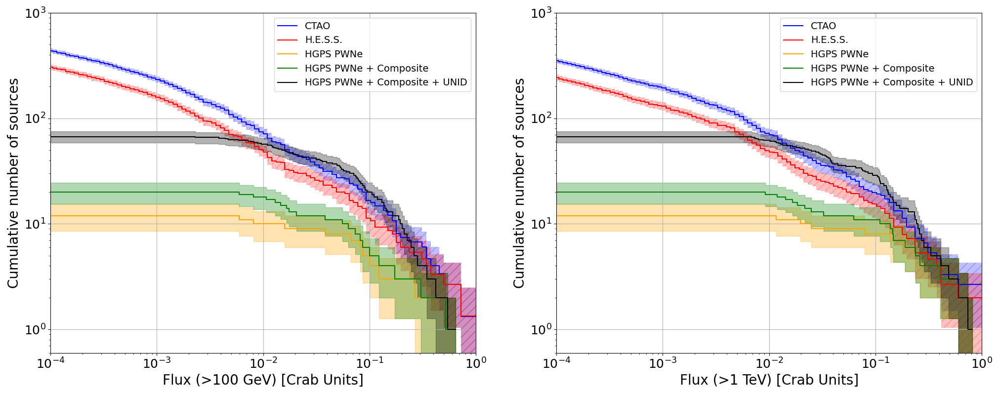
图注：The plot shows the mean cumulative flux distribution out of 1000 realizations of synthetic population containing $1600$ sources emitting above two specific energies, i.e., $>$ 100 GeV (left panel), and $>$ 1 TeV (right panel). The flux has been normalized with respect to 1 Crab unit. The lighter-colored areas represent the errors of each curve. In both plots, the mean distribution of sources across the realizations of the synthetic population within the CTAO (in blue) and H.E.S.S. (in red) footprints are directly compared with the firmly identified PWNe (in orange), the same added with PWNe in a composite SNR (in green), and the sum of these two with the known HGPS unidentified sources (in black).
对应解读：对应“合成族群的γ射线通量分布或log N-log F图”和关键图表导读中的图3。
入选理由：这是最直接支撑本文核心结论的图：给出>100 GeV和>1 TeV的累计通量分布，并同时比较CTAO、H.E.S.S.覆盖区以及已确认/候选/未识别源样本；误差带还能展示1000次族群实现带来的系统散布，最适合说明CTAO为何会显著增加可探测PWN数。
来源与置信度：\(arxiv_source\)；high；\(arxiv_source\) / \(aa_revised.tex\):figure[8]
Fig05
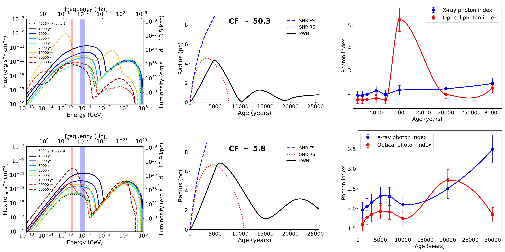
图注：Results of the individual source simulations based on the CF are shown in this figure. The upper (lower) row corresponds to example 1 (example 2). The left panel in both rows shows the evolution of the SED with time. The solid (dashed) lines correspond to the SED before (after) the reverberation, whereas the dotted line corresponds to the SED at the reverberation age ($t_{\rm beg, rev}$). The red (blue) shaded region signifies the energy range in which the optical (X-ray) photon index is calculated. The middle panel shows the time evolution of the radius of the PWN, SNR forward and reverse shocks. In the right panel, we show the time evolution of the optical (X-ray) photon index in red (blue) for both sources, while also providing 10$\%$ errorbars for all photon index values.
对应解读：对应“脉冲星风云半径、压力或磁场随年龄演化的示例图”和“代表性源SED演化图”，也对应关键图表导读中的图1、图2。
入选理由：同一张图同时给出两个代表性源的SED随时间演化、PWN/SNR正反向激波半径演化以及光学/X射线光子指数变化，能直接展示自由膨胀、回响压缩和回响后阶段如何改变动力学与辐射谱，是理解本文新增回响处理物理意义的关键图。
来源与置信度：\(arxiv_source\)；high；\(arxiv_source\) / \(aa_revised.tex\):figure[5]
Fig07

图注：Comparison of the SEDs of sources predicted to be detectable by CTAO for a single random realization of the simulated population taking the reverberation effects into consideration. For each source, the SED obtained with \(\texttt{TIDE+L}\) (left) is compared with that of the corresponding source evolved with the simplified \(\texttt{TIDE}\) framework (right). The relevant instrumental sensitivity curves are also shown in both panels.
对应解读：对应关键图表导读中的“模型变体对比图”，以及模型拟合段落中关于有无详细回响处理对观测预言影响的讨论。
入选理由：该图把CTAO可探测源在TIDE+L回响模型下的SED与简化TIDE框架逐源对比，并叠加仪器灵敏度曲线，最能检验本文声称的详细回响动力学是否会实质改变TeV可见性预测。
来源与置信度：\(arxiv_source\)；high；\(arxiv_source\) / \(aa_revised.tex\):figure[7]
Fig06
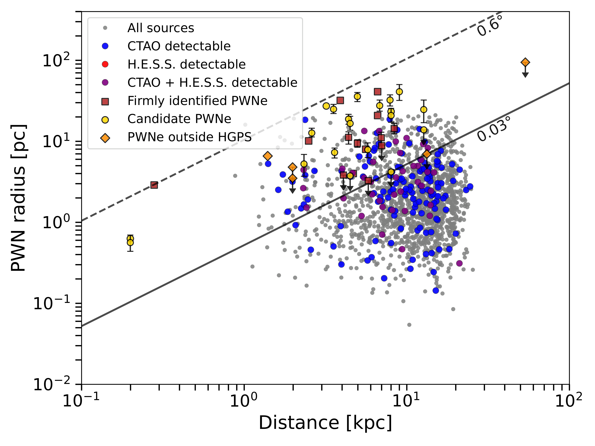
图注：In the figure, the current PWN radius of a single {random} realization of synthetic population containing $1600$ sources is plotted against the distance of the sources. {The red circles (if any) denote the sources that will be detectable by H.E.S.S., the blue circles represent the detectable sources by CTAO, while the purple circles denote sources that will be detectable by both}. The grey circles signify the rest of the population. The dashed and solid lines represent the maximum and minimum angular extension, respectively, as posited by \(\cite{hess18}\) from HGPS-detected PWNe. In the plot, firmly identified PWNe in HGPS (firebrick squares), candidate HGPS PWNe (gold circles), and PWNe outside HGPS (orange diamonds) are also shown.
对应解读：对应“源角大小或距离分布图”和关键图表导读中的图6。
入选理由：图中把当前PWN半径与距离相连，并标出H.E.S.S.、CTAO及二者共同可探测源，同时叠加HGPS已确认/候选PWN和角延展范围线；它直接回应扩展源灵敏度修正、近邻大角尺度源是否容易被误判为可探测的问题。
来源与置信度：\(arxiv_source\)；high；\(arxiv_source\) / \(aa_revised.tex\):figure[6]
Fig09
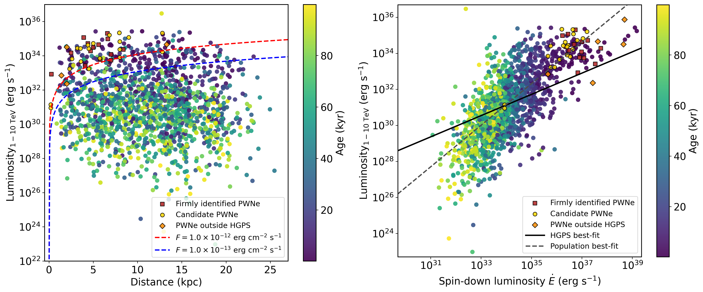
图注：The figure shows the distribution of integrated $\gamma$-ray luminosities in the 1-10 TeV band with source distance (left panel) and spin-down power (right panel) for a single {random} realization of synthetic population containing $1600$ sources. In the left panel, the red and blue dashed curves signify the flux detection thresholds for H.E.S.S. \(\citep{hess18b}\) and CTAO \(\citep{ctagps24},\) respectively. In the right panel, the solid line represents the slope corresponding to the $L_{1-10 \ \rm TeV} - \dot{E}$ relation, as obtained from \(\cite{hess18},\) whereas the gray dashed line represents that calculated from our population. The population distributions in all panels have been color-coded based on the current age of the corresponding sources. In all of these plots, firmly identified PWNe in HGPS (firebrick squares), candidate HGPS PWNe (gold circles), and PWNe outside HGPS (orange diamonds) are also shown.
对应解读：对应“与现有PWN候选或确认样本的对比”和模型拟合段落中关于通量、距离、年龄、spin-down power联合残差诊断的讨论。
入选理由：该图展示1–10 TeV积分光度随距离和自旋下降功率的分布，并用年龄着色，叠加H.E.S.S.与CTAO探测阈值以及观测PWN样本；比单纯源数图更适合判断模型是否覆盖已知源的距离、光度和dotE参数空间。
来源与置信度：\(arxiv_source\)；high；\(arxiv_source\) / \(aa_revised.tex\):figure[9]
Fig01

图注：The spatial distribution of the synthetic PWNe population in the Milky Way Galaxy for {a random} realization of $1600$ sources. The corresponding ejecta masses (in units of M$_{\odot}$) of each PWN are color-coded as indicated in the color bar. The {right panel} of the figure shows the {\(\it\) Fermi}-LAT $\gamma$-ray skymap and the distribution of the same PWNe population with respect to it. The background top-down (face-on) view of the Milky Way (Credit: NASA/JPL-Caltech/R. Hurt (SSC/Caltech)) and the all-sky $\gamma$-ray (Aitoff) skymap (Credit: NASA/DOE/Fermi LAT Collaboration) have been generated using the \(\texttt{mw-plot}\) code \(\citep{mwplot}.\)
对应解读：对应“可探测源的银河经纬度分布图”中关于银河空间分布和天区覆盖选择效应的讨论。
入选理由：虽然它展示的是合成PWN总体空间分布而非单独可探测子样本，但包含银河系俯视分布以及相对于Fermi-LAT γ射线全天图的投影，可用于说明模型的银河空间先验、内银河集中趋势和潜在巡天覆盖选择效应。
来源与置信度：\(arxiv_source\)；high；\(arxiv_source\) / \(aa_revised.tex\):figure[1]
强相关工作
这篇工作与早期 PWN 族群合成、单源时间依赖辐射模型和超新星遗迹-脉冲星风云相互作用研究直接相连。相似研究常用关键词包括 “pulsar wind nebula population synthesis”, “TeV PWN population”, “PWN reverberation”, “CTA Galactic plane survey”, “time-dependent PWN radiative model”。读者可以把本文看作在传统 TeV PWN 数目预报中加入更真实回响动力学的一步。
它也与 TeV halo 和未识别银河 TeV 源的讨论存在张力。部分中年脉冲星周围的 TeV 发射可能来自粒子逃逸后的扩散晕，而不完全是被约束在传统 PWN 内的辐射；HAWC、LHAASO 对大尺度 TeV 发射的发现使这个问题更突出。因此，未来 CTAO 看到的扩展 \(\gamma\) 射线源到底应归为 PWN、TeV halo 还是复合型超新星遗迹，需要用形态、能谱、年龄和周围介质联合判断。若检索相反观点或补充方向，可用 “TeV halos around pulsars”, “Geminga positron excess”, “PWN particle escape”, “unidentified Galactic TeV sources”。
相似工作：
- https://arxiv.org/abs/2605.15359
- https://ui.adsabs.harvard.edu/search/q=%22pulsar%20wind%20nebula%22%20%22population%20synthesis%22
- https://ui.adsabs.harvard.edu/search/q=%22TeV%20PWN%20population%22
基础理论 / 方法工作：
- https://ui.adsabs.harvard.edu/search/q=%22pulsar%20wind%20nebula%22%20%22reverberation%22
- https://ui.adsabs.harvard.edu/search/q=%22Kennel%20Coroniti%22%20%22Crab%20Nebula%22
- https://ui.adsabs.harvard.edu/search/q=%22Chevalier%22%20%22pulsar%20wind%20nebula%22
相反观点 / 张力线索：
- https://ui.adsabs.harvard.edu/search/q=%22TeV%20halo%22%20%22pulsar%22
- https://ui.adsabs.harvard.edu/search/q=%22Geminga%22%20%22positron%20excess%22%20%22HAWC%22
- https://ui.adsabs.harvard.edu/search/q=%22unidentified%20Galactic%20TeV%20sources%22%20%22pulsar%20wind%20nebula%22
4. Correlation Between X-Ray and Cosmic Neutrino Sources: From Obscured AGN to Blazars
- 来源：arXiv / astro-ph.HE
- 链接：https://arxiv.org/abs/2605.15360v1
- 作者：Emma Kun, Imre Bartos, Claudio Ricci, Santiago del Palacio, Francis Halzen, Julia Becker Tjus, Peter L. Biermann, Anna Franckowiak
- 评分：novelty 7/10，importance 8/10，relevance 10/10，final 9.40/10
- 推荐理由：直接研究IceCube高能中微子与X射线AGN/blazar的相关性，属于多信使高能天体物理重点方向；统计显著性仍是条件性而非发现级，但值得阅读。
中文题目：X 射线源与宇宙中微子源的相关性：从遮蔽活动星系核到耀变体
做了什么：这篇文章检验一个多信使天体物理中的具体命题：高能中微子是否与活动星系核核心区的未吸收硬 X 射线辐射相关。作者先用此前报道的 6 个 IceCube 个体显著性最高的活动星系核校准关系 \(\log L_{\nu}=\alpha+\beta\log L_{\rm hX}+\mathcal{N}(0,\sigma_{\rm int}^{2})\)，再把 7 个有 NuSTAR 观测、且在 IceCube 中有阈值附近 excess 的耀变体放到这个关系上做 posterior predictive 检验。结果显示这些耀变体与原有关系统计上一致，斜率与 \(\beta=1\) 相容，内禀散布约为 \(0.6\,{\rm dex}\)，但作者也明确指出：这种一致性本身不能证明这些 excess 就是信号，因为小样本和选择效应仍可让背景涨落看起来一致。文章最有价值的部分不是“宣布发现耀变体是中微子源”，而是把硬 X 射线—中微子相关从遮蔽活动星系核扩展到耀变体样本，并用距离无关比值诊断、通量空间置换检验和零注入测试拆解了相关性、距离偏置和信号真实性之间的区别。
为什么重要：IceCube 已经确定存在 TeV–PeV 能区的天体物理中微子背景，但单个源族的贡献仍不清楚。活动星系核长期是候选源，但射电明亮耀变体、遮蔽 Seyfert 型活动星系核、潮汐瓦解事件和星暴星系之间一直存在竞争解释。这篇工作重要在于它把一个可检验的经验关系——硬 X 射线光度 \(L_{\rm hX}\) 与中微子光度 \(L_{\nu}\) 的近线性标度——用于连接两类看似不同的活动星系核环境：光子致密、可能被遮蔽的核心区，以及喷流指向地球的耀变体。如果该关系经更大样本确认，它会支持中微子产生与超大质量黑洞附近的紧凑、强辐射场区域有关，而不只是与大尺度喷流总功率或射电亮度有关。
理论 / 观测 / 仪器方法价值：对理论而言，文章给出了一个可直接与光强子模型比较的观测诊断：\(L_{\rm hX}/L_{\nu}\) 是否落在光强子产生预期范围内。对观测而言，它提醒读者不要把 posterior predictive 一致性误读成源关联发现，而应区分“候选源符合某个物理标度”和“IceCube 事件真的来自该源”。对方法而言，文章使用带双轴误差和内禀散布的 Bayesian regression、距离无关比值诊断、构造控制的通量空间 permutation test，以及 null-injection test，是多信使小样本相关性分析中比较清醒的一套流程。
为什么应该关注：如果你关心高能中微子的源族，这篇文章值得看，因为它把“活动星系核是不是中微子源”从简单的空间重合问题推进到可量化的多波段标度关系问题。即使你不相信 7 个耀变体的 IceCube excess 都是信号，文中的统计框架也有参考价值：它说明怎样在小样本、强选择效应、共同距离因子 \(d_{L}^{2}\) 和大误差条下避免过度宣称。未来若 IceCube-Gen2、KM3NeT 或更深 NuSTAR/HEX-P 类硬 X 射线观测给出更大样本，这类检验会变成判断源族贡献的重要工具。
展开详细解读：文章讲解、背景、理论、重点章节、图表与相关工作
文章详细讲解
科学问题：高能天体物理中微子的起源仍然没有被单一源族解释清楚。IceCube 看到的是一个全天弥散通量，少数方向出现过与耀变体、活动星系核或瞬变源相关的候选关联，但大多数单源显著性不足。此前有研究提出，6 个 IceCube 个体显著性较高的活动星系核在未吸收硬 X 射线光度 \(L_{\rm hX}\) 与中微子光度 \(L_{\nu}\) 之间呈现相关关系。这一关系若真实，意味着中微子产生与黑洞附近紧凑、富光子环境中的光强子相互作用有关，而不是单纯由射电喷流亮度决定。
作者怎么做：本文选择 7 个有 NuSTAR 硬 X 射线观测的耀变体，这些源在 IceCube 数据中有阈值附近的 excess。作者没有直接把这些 excess 当作确定信号，而是在一个明确的工作假设下进行条件检验：如果已发表的 IceCube 最佳拟合信号事件数 \(\hat{n}_{s}\) 可以代表真实中微子信号，那么这些耀变体是否落在由 6 个已发表活动星系核校准出的 \(L_{\rm hX}\)–\(L_{\nu}\) 关系上？为此，他们用含双轴误差和内禀散布的 Bayesian regression 拟合 \(\log L_{\nu}=\alpha+\beta\log L_{\rm hX}+\mathcal{N}(0,\sigma_{\rm int}^{2})\)，再对 7 个耀变体做 posterior predictive 检验。
关键结果：校准样本给出的斜率与 \(\beta=1\) 相容，内禀散布约为 \(0.6\,{\rm dex}\)，说明在当前误差和样本大小下，近线性关系并未被排斥。7 个新耀变体在 posterior predictive 检验中表现出很高的一致性，统计量为 \(\chi^{2}_{7}=1.58\)，对应 \(p=0.98\)。此外，距离无关的 \(L_{\rm hX}/L_{\nu}\) 比值诊断显示遮蔽活动星系核与耀变体两类源都落在光强子模型预期带内，二者统计上不可区分。作者还在 13 源联合样本上做了通量空间置换检验，并控制由共同的 \(d_{L}^{2}\) 因子引起的距离偏置，得到随机配对被拒绝的 \(p=6.3\times10^{-4}\)，约 \(3.23\sigma\)。
局限和下一步：文章最谨慎也最关键的一点是 null-injection test。作者发现，在当前只有 6 个校准源的情况下，即使新样本中的 IceCube excess 来自被选择出来的背景涨落，一致性检验本身也可能无法区分信号与背景。因此，本文不是检测级发现，而是条件一致性检查。下一步需要更大的、选择函数更清楚的校准样本，或者使用 IceCube 内部事件级数据构建 X 射线加权 stacking likelihood，而不是依赖已发表的 \(\hat{n}_{s}\) 和外部整理的候选样本。对读者而言，应把本文看作一个方法学和物理图像的桥梁，而不是最终源族归属结论。
背景知识
研究对象是活动星系核及其可能产生的高能中微子。活动星系核由吸积到超大质量黑洞的气体供能，常伴随 X 射线日冕、宽线区、尘埃环、相对论性喷流等结构。若有高能质子或原子核被加速，它们可与环境光子或气体相互作用产生带电介子，随后衰变为中微子。硬 X 射线尤其有意义，因为它通常追踪黑洞附近热电子日冕或喷流高能电子辐射，是估计局部辐射能量密度的重要窗口。
历史上，耀变体是最直观的中微子候选源。它们的相对论性喷流几乎指向地球，非热辐射强烈，具有加速宇宙线的自然条件。TXS 0506+056 与 IceCube-170922A 的关联曾使耀变体模型受到广泛关注，但后续堆叠分析表明，经典明亮耀变体不太可能贡献全部 IceCube 弥散中微子通量。与此同时，部分研究开始转向射电不那么耀眼但核心区光子密度更高的遮蔽活动星系核，例如 Seyfert 型或 Compton-thick 活动星系核，因为这些环境可能更适合高效 \(p\gamma\) 相互作用。
这篇文章所在的问题背景是：如果遮蔽活动星系核和耀变体都能产生中微子，那么它们是否服从同一个与硬 X 射线相关的物理标度？这比单纯问“某个中微子事件是否与某个源方向重合”更有信息量，因为标度关系可以联系到目标光子场、质子注入功率、源紧致度和辐射区几何。尤其在 NuSTAR 提供 \(3\)–\(79\,{\rm keV}\) 高质量硬 X 射线谱、IceCube 积累多年事件样本之后，重新审视硬 X 射线与中微子的联系变得更有实际意义。
一个常见误区是把共同距离因子导致的光度—光度相关误判为物理相关。由于 \(L=4\pi d_{L}^{2}F\)，两个完全不相关的通量 \(F_{1}\) 与 \(F_{2}\) 在转换成光度后都乘上 \(d_{L}^{2}\)，在红移范围较宽的样本中自然会出现表观相关。另一个误区是把 IceCube 局部 excess 或最佳拟合 \(\hat{n}_{s}\) 当作已经确认的源通量。本文反复强调，它检验的是在该工作假设下的条件一致性，而不是事件级源关联发现。
基础理论 / 方法脉络
基本物理图像从光强子相互作用开始。若活动星系核核心或喷流中存在高能质子，它们在光子场中可能通过 \(p\gamma\) 相互作用产生 \(\Delta\) 共振或多介子过程。带电介子衰变产生 \(\nu_{\mu}\)、\(\bar{\nu}_{\mu}\)、\(\nu_{e}\) 等，经过宇宙学距离传播和味振荡后，到达地球时三种味的比例通常接近 \(1:1:1\)。目标光子场越强、区域越紧凑，质子能量损失效率越高，中微子光度越可能与电磁辐射，尤其是 X 射线辐射相关。
硬 X 射线光度 \(L_{\rm hX}\) 在这里被当作紧凑区辐射场的经验代理量。对遮蔽活动星系核，软 X 射线可能被吸收，硬 X 射线更接近内禀日冕输出；对耀变体，NuSTAR 看到的硬 X 射线可能来自喷流同步辐射高能尾或逆康普顿低能端，也可能混有日冕成分。因此同一个 \(L_{\rm hX}\)–\(L_{\nu}\) 关系若能覆盖这两类源，暗示中微子产生区可能共享某种“光子致密度—强子功率”标度，但并不自动说明辐射区几何完全相同。
观测上，论文把 X 射线通量和中微子通量都转换为光度，再在对数空间拟合。对数空间拟合的原因是源光度跨越多个数量级，且物理散布更接近乘性而非加性。模型中的 \(\sigma_{\rm int}\) 表示除测量误差外的真实源间差异，例如喷流 Doppler 因子、遮蔽校正、非同时性、质子装载因子、目标光子谱形和中微子能谱假设的差别。
统计上最大的难点是退化和选择效应。\(L_{\rm hX}\) 与 \(L_{\nu}\) 都含有 \(d_{L}^{2}\)，因此必须检查相关性是否只是距离驱动。IceCube 候选源也不是无偏样本，而是依据局部显著性或阈值附近 excess 被挑选出来，这会导致 Eddington bias 或 look-elsewhere 效应。本文通过距离无关的比值诊断、通量空间置换以及 null-injection test 来评估这些问题，但由于样本仍很小，这些检验只能降低误判风险，不能完全消除源选择带来的先验偏置。
公式与推导
第一步是从通量—光度关系出发。对红移为 \(z\)、光度距离为 \(d_{L}\) 的源，某一能带的各向同性等效光度可写为
其中 \(F_{\rm hX}\) 是观测到的硬 X 射线能量通量，\(K_{\rm hX}(z)\) 是能带和谱形相关的 \(K\)-校正。这个式子提醒我们，任何光度—光度图都天然含有共同的 \(d_{L}^{2}\) 因子。
第二步是把 IceCube 给出的中微子通量或由 \(\hat{n}_{s}\) 推断的源强转换为光度。若假设每味或全味中微子能量通量为 \(F_{\nu}\)，则
其中 \(K_{\nu}(z)\) 取决于假设的中微子谱指数、积分能区和是否采用全味换算。本文的结论条件性地依赖于已发表 IceCube 最佳拟合 \(\hat{n}_{s}\) 能合理代表信号强度。
第三步是写出经验标度关系。论文采用对数线性模型
其中 \(x_{i}=\log L_{{\rm hX},i}\)，\(y_{i}=\log L_{\nu,i}\)，\(\alpha\) 是归一化，\(\beta\) 是斜率，\(\sigma_{\rm int}\) 是内禀散布。若 \(\beta\simeq1\)，则平均上 \(L_{\nu}/L_{\rm hX}\) 近似为常数。
第四步是纳入双轴测量误差。若观测量为 \(\hat{x}_{i}\) 与 \(\hat{y}_{i}\)，误差为 \(s_{x,i}\) 与 \(s_{y,i}\)，一种近似边缘化后的垂直方向方差为
这说明当 \(x\) 轴误差不可忽略时，斜率 \(\beta\) 会把 \(s_{x,i}\) 投影到 \(y\) 方向；忽略这一项通常会低估不确定度并夸大相关显著性。
第五步是构造回归似然。对给定参数 \(\theta=(\alpha,\beta,\sigma_{\rm int})\)，可写为
Bayesian regression 再乘以先验 \(p(\theta)\) 得到后验 \(p(\theta\mid\{\hat{x},\hat{y}\})\propto\mathcal{L}(\theta)p(\theta)\)。这一步给出 \(\beta\) 是否与 \(1\) 相容以及 \(\sigma_{\rm int}\) 的可信区间。
第六步是 posterior predictive 检验。对新源的 \(x_{j}\)，预测分布可写为
若观测到的 \(y_{j}\) 位于该预测分布的宽散布内，就称其与校准关系相容。本文得到 7 个耀变体整体的 \(\chi^{2}_{7}=1.58\) 和 \(p=0.98\)，表示在该模型下没有张力。
第七步是用距离无关比值削弱共同距离偏置。定义
可见理想情况下 \(d_{L}^{2}\) 消去。若两类源的 \(R_{i}\) 分布相近，说明它们在硬 X 射线输出与中微子输出的相对效率上没有明显差异。
第八步是从光强子效率理解该比值。若非热质子注入光度为 \(L_{p}\)，光强子能量损失效率为 \(f_{p\gamma}\)，则量级上
其中 \(3/8\) 来自带电介子分支和衰变能量分配的近似。若 \(L_{p}=\xi_{p}L_{\rm hX}\)，则 \(L_{\nu}/L_{\rm hX}\simeq(3/8)f_{p\gamma}\xi_{p}\)，这把观测比值直接连接到质子装载 \(\xi_{p}\) 与相互作用效率。
第九步是理解置换检验。若在通量空间随机打乱 \(F_{\rm hX}\) 与 \(F_{\nu}\) 的配对，并保持红移或距离结构的构造控制，则可得到随机配对下相关统计量 \(T\) 的分布：
本文得到 \(p_{\rm perm}=6.3\times10^{-4}\)，约等于单边高斯显著性 \(3.23\sigma\)。这个结果支持非随机配对，但仍不等价于事件级源检测。
模型拟合 / 应用方法
本文的核心拟合是带内禀散布的对数线性回归。拟合量包括截距 \(\alpha\)、斜率 \(\beta\) 和内禀散布 \(\sigma_{\rm int}\)。由于 \(L_{\rm hX}\) 与 \(L_{\nu}\) 都有测量误差，并且中微子强度通常误差很大，使用双轴误差模型比普通最小二乘更合适。读者在看拟合结果时应关注 \(\beta\) 的后验是否真的窄到能区分线性、次线性或超线性，而不是只看最佳值是否接近 \(1\)。
posterior predictive 检验用于回答“新耀变体是否异常偏离校准关系”。这里的 \(p=0.98\) 不能按发现显著性理解；它说明新样本比模型预期还要不离群，甚至可能暗示误差条和内禀散布足够宽，使模型很容易包住这些点。由于 \(\sigma_{\rm int}\sim0.6\,{\rm dex}\) 已经相当大，单个源在因子数倍范围内的偏离都不会构成强张力。
参数退化主要来自三个方面。第一，截距 \(\alpha\) 与斜率 \(\beta\) 在小动态范围样本中强相关；第二，\(\beta\) 与 \(\sigma_{\rm int}\) 之间存在退化，较大的内禀散布会削弱对斜率的约束；第三，中微子光度从 \(\hat{n}_{s}\) 到 \(L_{\nu}\) 的转换依赖谱指数、有效面积、源 declination 和分析能区。若这些系统误差未完全传播，后验可能显得过于乐观。
残差诊断应看 \(\Delta y=\log L_{\nu}-\alpha-\beta\log L_{\rm hX}\) 是否随红移、源类型、硬 X 射线吸收柱密度、耀变体类别或 \(\hat{n}_{s}\) 显著性发生系统偏移。若残差随 \(d_{L}\) 变化，说明距离偏置未被完全控制；若残差随源类别变化，则遮蔽活动星系核和耀变体可能不应共用同一条关系；若残差与 X 射线观测是否同步有关，则非同时性变异可能是主要散布来源。
模型可能失败的场景包括：IceCube excess 主要是背景涨落；NuSTAR 硬 X 射线并不追踪中微子产生区；耀变体 Doppler boosting 改变了表观 \(L_{\rm hX}\) 但没有同样改变中微子束射；或者样本选择只挑出了恰好落在关系附近的源。实际应用上，本文框架适合用于后续候选源排序：给定某个活动星系核的硬 X 射线通量和距离，可预测其相对中微子权重，并用于构造 X 射线加权的 stacking likelihood。
重点章节 / 结果段落怎么读
-
引言和问题设定：读者应先抓住作者的定位——他们不是声称发现 7 个新中微子源，而是在检验这些 NuSTAR 耀变体是否与此前 6 个活动星系核的硬 X 射线—中微子关系相容。这里要特别注意“conditional consistency check”这一逻辑前提。
-
样本和数据：重点看 6 个校准源与 7 个新耀变体如何选择、硬 X 射线光度如何取得、中微子光度如何由 IceCube 已发表结果转换而来。样本选择函数是全文解释力的关键，因为阈值附近 excess 很容易受到背景涨落和事后选择影响。
-
Bayesian regression 方法：这一部分是技术核心。应检查作者如何处理 \(x\) 轴和 \(y\) 轴误差、采用什么先验、如何定义 \(\sigma_{\rm int}\)，以及是否报告 \(\alpha\)、\(\beta\)、\(\sigma_{\rm int}\) 的联合后验。尤其要看 \(\beta=1\) 是被强支持，还是只是当前误差下无法排除。
-
posterior predictive 与比值诊断：这里回答耀变体是否落在关系上。读者应同时看 \(\chi^{2}_{7}=1.58\)、\(p=0.98\) 和 \(L_{\rm hX}/L_{\nu}\) 分布，不要只摘取一个高 \(p\) 值。比值诊断的价值在于减少共同距离因子的影响。
-
permutation test 与 null-injection test：这部分决定结论的可信边界。通量空间置换检验给出非随机配对证据，而 null-injection test 则说明当前样本下这种一致性不能区分真实信号和被选中的背景。读者应把这两者合在一起理解：相关性有迹象，但检测级源关联仍需事件级堆叠分析。
建议重点查看的图表
-
\(L_{\rm hX}\)–\(L_{\nu}\) 对数散点图：看 6 个校准活动星系核和 7 个耀变体是否覆盖相似动态范围，回归线和预测带有多宽，耀变体是否只是被宽散布包住。
-
回归参数后验图：重点检查 \(\beta\)、\(\alpha\)、\(\sigma_{\rm int}\) 的边缘分布和二维相关。若 \(\beta\) 后验很宽，则“与线性相容”不等于“证明线性”。
-
posterior predictive 残差图：看每个耀变体的标准化残差、误差条和预测区间，判断 \(\chi^{2}_{7}=1.58\) 是否由所有点都一致造成，还是少数大误差点主导。
-
\(L_{\rm hX}/L_{\nu}\) 比值分布或箱线图：看遮蔽活动星系核与耀变体两类源是否真的重叠，以及光强子预测带的宽度是否过宽。
-
通量空间 permutation test 的零分布：看观测统计量 \(T_{\rm obs}\) 位于随机配对分布的什么位置，以及控制 \(d_{L}^{2}\) 偏置后显著性是否稳定。
-
null-injection test 诊断：重点看在纯背景注入下有多大概率得到类似一致性结果。这张图或表决定本文结论应被解读为“条件一致”而非“检测”。
关键图表逐图导读
图 1：建议先看 \(\log L_{\rm hX}\) 对 \(\log L_{\nu}\) 的主图。横轴应是未吸收硬 X 射线光度，纵轴应是由 IceCube excess 或拟合源强推得的中微子光度。数据点通常区分校准的 6 个活动星系核和 7 个 NuSTAR 耀变体，模型线给出 Bayesian regression 的中位关系，阴影区表示内禀散布和预测不确定度。读图陷阱是不要把所有点在光度空间的排列直接当作物理相关，因为共同的 \(d_{L}^{2}\) 会增强表观趋势。
图 2：参数后验或 corner plot 应显示 \(\alpha\)、\(\beta\)、\(\sigma_{\rm int}\) 的约束。横纵坐标是参数取值，等高线为可信区域。应关注 \(\beta=1\) 是否落在高后验密度区域，以及 \(\sigma_{\rm int}\approx0.6\,{\rm dex}\) 是否有明显下限。若 \(\beta\) 与 \(\alpha\) 的等高线很拉长，说明小样本动态范围不足，线性标度只是目前可接受的模型之一。
图 3：posterior predictive 检验图通常会把 7 个耀变体的观测 \(\log L_{\nu}\) 与预测分布比较。横轴可能是源编号或 \(\log L_{\rm hX}\)，纵轴是残差或 \(\log L_{\nu}\)。关键是看每个点是否落在 \(68\%\) 或 \(95\%\) 预测带内，以及误差是否由中微子端主导。读图陷阱是 \(p=0.98\) 可能反映模型预测带很宽，而不一定是强物理支持。
图 4：\(L_{\rm hX}/L_{\nu}\) 或等价的 \(F_{\rm hX}/F_{\nu}\) 比值诊断图应展示两类源与光强子预测带的相对位置。坐标轴可能是比值、源类别或红移。应检查两类源的分布是否重叠，以及预测带是否基于宽泛的 \(f_{p\gamma}\) 和 \(\xi_{p}\) 范围。若预测带过宽，落入带内只能说明“不矛盾”，不能说明模型唯一正确。
图 5：permutation test 图应显示随机打乱通量配对后统计量 \(T\) 的零分布和真实样本的 \(T_{\rm obs}\)。横轴是相关统计量或拟合优度差异，纵轴是置换次数或概率密度。关键读法是看 \(T_{\rm obs}\) 是否位于分布尾部，以及尾部概率 \(p=6.3\times10^{-4}\) 是否在不同控制方案下稳定。
图 6：null-injection test 或稳健性检验图应展示在无真实中微子信号时，由选择效应产生类似一致性的概率。横轴可能是模拟 realizations、\(p\) 值或 \(\chi^{2}\)，纵轴是频数。读者应把这张图作为结论强度的刹车：如果背景选择也能频繁通过一致性检验，则本文结果只能作为后续 stacking 分析的动机。
论文原图 / 可嵌入图片
Fig01
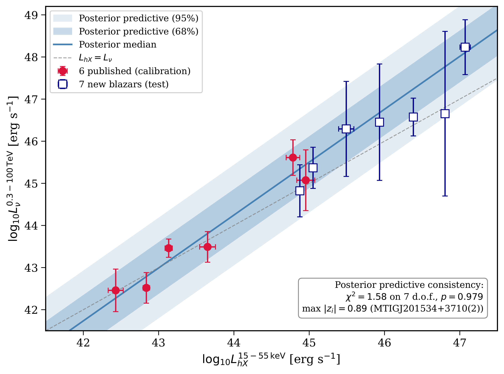
图注：Posterior-predictive consistency test. The blue line shows the plug-in posterior-predictive median of the K2024 relation calibrated on the six published sources only (shown as red filled circles), with shaded 68\% (dark) and 95\% (light) bands set by $\pm \sigma_{\rm int,med}$ and $\pm 1.96\,\sigma_{\rm int,med}$ around the median line. Open blue squares show the seven new blazars analyzed in this work. The dashed line marks $L_\mathrm{hX} = L_\nu$. All seven new sources fall within the 95\% band; per-source predictive $z$-scores satisfy $|z_i| \leq 0.89$ (largest at MITG~J201534+3710), and the global $\chi^2_7 = 1.58$ corresponds to $p = 0.980$. We caution that the apparent consistency must be interpreted in light of the null calibration of Section~\(\ref{sec:nullcalib}\): with $\sigma_{\rm int} = 0.60$\,dex calibrated on six sources, the predictive band is wide enough that background-only realizations also yield median $\chi^2_{\rm null} \sim 2.5$ on this same pipeline.
对应解读：对应“建议重点查看的图表”第1项与第3项，以及“关键图表逐图导读”的图1、图3和模型拟合中的 posterior predictive 检验段落。
入选理由：这是全文核心图：同时展示6个校准AGN与7个新耀变体在 \(L_{\rm hX}\)–\(L_\nu\) 平面上的位置、Bayesian regression 中位关系、68%/95%预测带、\(L_{\rm hX}=L_\nu\) 参考线，并在图注中给出逐源 \(z\)-score、\(\chi^2_7=1.58\) 和 \(p=0.980\)。它最直接支撑日报关于“耀变体是否只是被宽散布包住”和“posterior predictive 一致性不能等同于检测”的解读。
来源与置信度：\(arxiv_source\)；high；\(arxiv_source\) / main.tex:figure[1]
Fig02
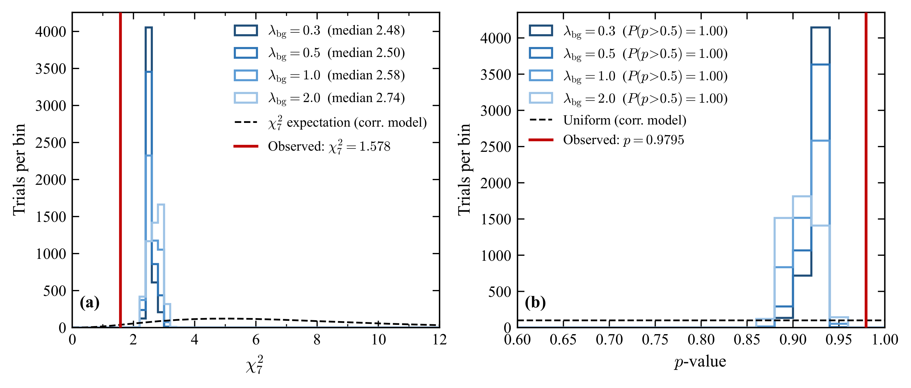
图注：Null calibration of the posterior-predictive consistency test. \(\emph{Left:}\) Distribution of $\chi^2_7$ under a background-only null in which $\hat{n}_s$ values are drawn from ${\rm Poisson}(\lambda_{\rm bg})$ truncated to $\hat{n}_s > 0$, for four background expectations $\lambda_{\rm bg} \in \{0.3, 0.5, 1.0, 2.0\}$. The black dashed curve is the $\chi^2_7$ distribution that would obtain if the test were correctly calibrated against the K2024 relation (median $\sim 7$). The observed value $\chi^2_7 = 1.58$ (red vertical line) sits below the null medians ($\sim 2.5$--$2.7$). Both the null and the observed value lie far below the correctly-calibrated expectation, reflecting the wide predictive band that follows from $\sigma_{\rm int} = 0.60$\,dex at $N_{\rm cal} = 6$. \(\emph{Right:}\) Distribution of $p$-values under the same null. Median $p_{\rm null}$ exceeds $0.9$ across all four $\lambda_{\rm bg}$; $P(p_{\rm null} > 0.5) = 1.00$ in every case. The observed $p = 0.980$ sits in the upper tail of all four null distributions, but the predictive band is too wide for this to constitute formal rejection of the background hypothesis.
对应解读：对应“建议重点查看的图表”第6项、“关键图表逐图导读”的图6，以及详细解读中关于 null-injection test 决定结论强度的段落。
入选理由：这张图直接检验在背景-only 注入下是否也能得到类似的一致性结果，左图给出 \(\chi^2_7\) 零分布和观测值，右图给出 null 下的 \(p\)-value 分布。它是判断本文应被表述为“条件一致性检查”而非“检测级发现”的关键证据，科学解释价值很高。
来源与置信度：\(arxiv_source\)；high；\(arxiv_source\) / main.tex:figure[2]
Fig04
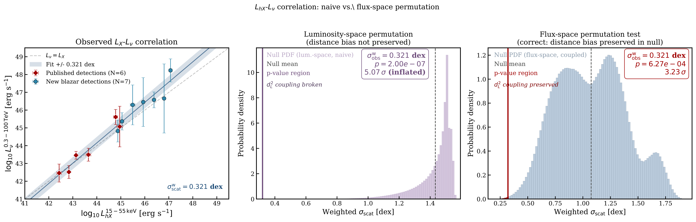
图注：Flux-space permutation test as a finite-sample diagnostic. \(\emph{Left:}\) Observed joint sample with the weighted forward regression and its $\pm\sigma_{\rm scat}^{\rm w}$ band. \(\emph{Middle:}\) Null distribution from a luminosity-space permutation that breaks the $d_L^{\,2}$ coupling in the null but preserves it in the observation, yielding an inflated nominal significance of $5.07\,\sigma$. \(\emph{Right:}\) Null distribution from the flux-space permutation adopted here, in which $(F_\nu, \gamma_\nu, \sigma_\nu)$ are shuffled jointly and $L_\nu$ is recomputed at each receiving source's redshift; this preserves the $d_L^{\,2}$ coupling identically in observation and null, and gives the physically meaningful $3.23\,\sigma$ ($p = 6.3\times10^{-4}$).
对应解读：对应“建议重点查看的图表”第5项和“关键图表逐图导读”的图5，即通量空间 permutation test 与距离偏置控制。
入选理由：该图展示观测联合样本、错误的 luminosity-space permutation 会夸大到 \(5.07\sigma\)，以及作者采用的 flux-space permutation 如何在控制共同 \(d_L^2\) 偏置后得到 \(p=6.3\times10^{-4}\)、\(3.23\sigma\)。它直接支撑日报中关于不要把光度空间相关性误读为物理相关、必须检查距离偏置的重点。
来源与置信度：\(arxiv_source\)；high；\(arxiv_source\) / main.tex:figure[4]
Fig03
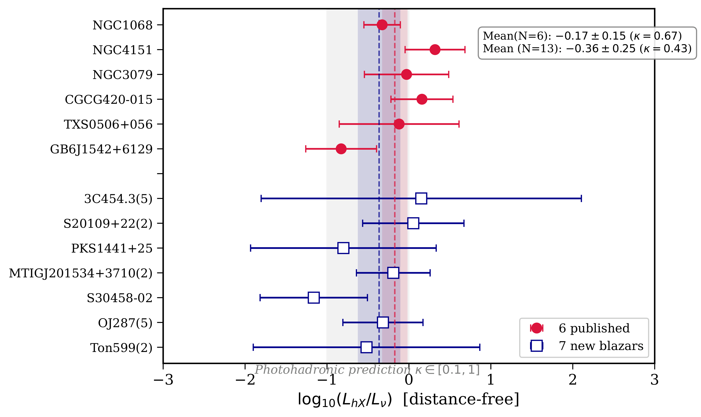
图注：Distance-free $\log(L_\mathrm{hX}/L_\nu)$ ratio diagnostic. Red filled circles: six K2024 calibration sources; open blue squares: seven new blazars from this work. Vertical dashed lines show inverse-variance-weighted means with shaded 68\% bands. The grey band indicates the photohadronic prediction range $\kappa \in [0.1,1]$. Population-weighted $\kappa$ values are $0.67$ (calibration) and $0.43$ (new sample); the two means differ by $-0.19 \pm 0.29$, consistent with zero at $\sim 0.7\,\sigma$. Error bars per source reflect the spectrum-derived $\sigma_{\nu,i}$ for the calibration sample and the empirically scaled Poisson approximation for the test sample (Section~\ref{sec:nuflux}). The agreement is necessary but not sufficient evidence of common physics, since the joint \(\nustar\)$+$IceCube selection envelope preferentially populates the same $\kappa$ window that the photohadronic prediction occupies; see Section~\(\ref{sec:ratio}.\)
对应解读：对应“建议重点查看的图表”第4项和“关键图表逐图导读”的图4，即 \(L_{\rm hX}/L_\nu\) 距离无关比值诊断与光强子预测带。
入选理由：该图用 \(\log(L_{\rm hX}/L_\nu)\) 比值比较6个校准源和7个新耀变体，并标出两类源加权均值、68%带和光强子预测范围 \(\kappa\in[0.1,1]\)。它最适合支撑日报关于“两类源统计上不可区分，但落入宽预测带只说明不矛盾”的解读。
来源与置信度：\(arxiv_source\)；high；\(arxiv_source\) / main.tex:figure[3]
强相关工作
这篇工作直接连接到两条文献线索。第一条是 IceCube 高能中微子与活动星系核的关联研究，包括 TXS 0506+056、NGC 1068、以及若干基于 Seyfert 或遮蔽活动星系核的 stacking 分析。相关检索关键词可用 “IceCube AGN hard X-ray neutrino correlation”、“NGC 1068 IceCube neutrinos”、“TXS 0506+056 multimessenger”、“obscured AGN neutrino production”。这些研究共同关心中微子是否来自黑洞附近的高光子密度环境，区别在于有些强调喷流，有些强调日冕或盘风。
第二条是光强子理论和多波段标度关系研究。若中微子来自 \(p\gamma\) 相互作用，X 射线场既可能是目标光子，也可能是同一区域电子辐射的示踪量；若来自 \(pp\) 相互作用，则气体柱密度和宇宙线 confinement 更重要，硬 X 射线相关可能只是活动星系核功率的间接代理。相反观点主要来自耀变体堆叠上限、伽马射线级联约束和源族能量预算：很多模型能解释个别候选事件，却难以同时满足 IceCube 弥散通量、Fermi 伽马背景和电磁谱能量分布。建议检索 “blazar stacking IceCube limits”、“photohadronic AGN corona neutrinos”、“gamma-ray cascade constraints neutrino sources”、“hard X-ray selected AGN neutrino stacking”。
相似工作：
- https://arxiv.org/abs/2605.15360
- https://arxiv.org/abs/1807.08794
- https://arxiv.org/abs/2211.09972
基础理论 / 方法工作：
- https://arxiv.org/abs/1311.5238
- https://arxiv.org/abs/1807.08816
- https://arxiv.org/abs/1807.08794
相反观点 / 张力线索：
- https://arxiv.org/abs/1609.04981
- https://arxiv.org/abs/1901.10806
5. X-Ray Polarization from the Gamma-Ray Binary LS I +61 303
- 来源：arXiv / astro-ph.HE
- 链接：https://arxiv.org/abs/2605.15972v1
- 作者：Philip Kaaret, Sudip Chakraborty, Daniel Golonka, Oliver J. Roberts, Ioannis Liodakis, Andrea Gnarini, Steven R. Ehlert, Joel B. Coley
- 评分：novelty 8/10，importance 8/10，relevance 9/10，final 9.35/10
- 推荐理由：IXPE探测到伽马射线双星LS I +61 303的X射线偏振，对粒子加速区有序磁场和TeV/keV模型约束重要。
中文题目：伽马射线双星 LS I +61 303 的 X 射线偏振
做了什么：这篇文章用 IXPE 观测伽马射线双星 LS I +61 303，在轨道相位约 \(0.74\) 到 \(1.05\) 的两圈连续观测中，在 \(2\text{--}8\,\mathrm{keV}\) 波段探测到平均 X 射线线偏振，背景扣除后偏振度为 \(13.1\%\pm3.0\%\)，显著性约 \(4.2\sigma\)。作者把偏振电矢量位置角与不同文献给出的双星轨道几何相比较，发现解释取决于采用哪一组轨道元素：有的方案暗示偏振方向相对致密天体—大质量星连线偏离约 \(30^\circ\)，有的方案给出近似对齐或近似垂直。核心结论是，LS I +61 303 的 X 射线同步辐射区存在相当有序的磁场；如果它与 PSR B1259-63 类似，X 射线偏振方向可能反过来帮助筛选 LS I +61 303 的真实轨道几何。
为什么重要：伽马射线双星中高能辐射来自强相对论粒子、恒星风、可能的脉冲星风或喷流之间的相互作用，但仅靠光变和能谱很难区分磁场结构、加速区位置和双星几何。X 射线偏振直接测量同步辐射的有序磁场方向，是少数能把“辐射区形态”与“轨道投影几何”联系起来的观测量。LS I +61 303 又是长期存在轨道解争议的经典源，因此这次 IXPE 探测不只是多一个偏振点，而是给这个系统的动力学和辐射模型增加了一个独立约束。
理论 / 观测 / 仪器方法价值：对理论而言，\(\sim13\%\) 的偏振度说明加速区磁场不是完全湍流，支持有组织的弓形激波、尾流或磁化流模型。对观测而言，论文展示了如何用 IXPE 在较弱且有背景污染的高能双星中提取 Stokes 参量，并把偏振角同轨道相位相关的天空投影几何比较。对方法而言，它强调轨道元素不确定性会直接传导到偏振角解释，提醒读者不能把偏振角和物理轴向的一致或不一致看得过于绝对。
为什么应该关注：如果你研究高能双星、脉冲星风星云、微类星体或 X 射线偏振，这篇文章值得关注，因为它把偏振从“探测到没有”推进到“能否判别轨道几何和加速区形态”。它也提供了一个实际案例：同一个 \(\mathrm{EVPA}\) 测量，在不同轨道解下会导出不同物理图像。未来只要相位覆盖更完整、轨道解更可靠，LS I +61 303 可能成为用 X 射线偏振反演双星风碰撞结构的标尺源。
展开详细解读：文章讲解、背景、理论、重点章节、图表与相关工作
文章详细讲解
科学问题：LS I +61 303 是最典型、也最麻烦的伽马射线双星之一。它由一颗 Be 型大质量星和一个致密天体组成，在射电、X 射线、GeV 与 TeV 能段都有强烈轨道调制。问题在于，高能辐射究竟来自年轻脉冲星风与恒星风的碰撞，还是更接近吸积驱动喷流或混合情形，长期没有定论。同步 X 射线辐射的线偏振是关键诊断量，因为偏振度反映磁场有序程度，偏振角则可追踪投影到天空面的磁场方向及辐射流形态。
作者怎么做：论文使用 IXPE 对 LS I +61 303 进行了两次连续轨道段观测，覆盖轨道相位 \(0.74\text{--}1.05\)。这个相位区间接近一个重要的高能活动阶段，适合检查 X 射线同步辐射是否具有稳定偏振。作者从 \(2\text{--}8\,\mathrm{keV}\) 事件中提取 Stokes 参量，进行背景扣除，得到平均偏振度和电矢量位置角。然后，他们没有只给出一个偏振角，而是把该角度分别投影到不同文献轨道解下的致密天体—大质量星轴向上，比较两者是否对齐、偏离或近似垂直。
关键结果：背景扣除后，平均偏振度为 \(13.1\%\pm3.0\%\)，偏振探测显著性约 \(4.2\sigma\)。这是继另一颗伽马射线双星的 X 射线同步辐射偏振探测后，对该类源有序磁场的又一次独立证据。若采用由径向速度和射电变形星云信息支持的轨道元素，X 射线 \(\mathrm{EVPA}\) 与致密天体—恒星连线可能有约 \(30^\circ\) 的偏移，这种偏移可以由双星轨道运动引起的科里奥利弯折或尾流拖拽解释。若采用某些光学偏振轨道解，则可能得到无偏移或近似垂直的结果，但这些解要求较高的轨道倾角。若采用基于 \(\mathrm{keV}/\mathrm{TeV}\) 光变曲线建模的轨道解，偏振角与双星轴向较好对齐，类似 PSR B1259-63 的情况。
局限和下一步：主要限制不在偏振是否存在，而在如何解释偏振角。LS I +61 303 的天空面轨道投影仍不确定，不同轨道元素给出的节点角、倾角、近星点方向会显著改变“偏振角相对双星轴”的判断。此外，本次相位覆盖只是一段，不足以建立完整的相位依赖偏振曲线，也难以把短时变化、Be 星盘穿越和长期超轨道调制分开。下一步需要多相位 IXPE 或后续 X 射线偏振任务观测，同时结合 VLBI 射电形态、光学径向速度、光学偏振和 TeV 光变，做统一的几何—辐射拟合。
背景知识
LS I +61 303 属于伽马射线双星，这类系统的非热辐射峰值通常出现在 MeV 到 TeV 能段，而不是普通 X 射线双星那样由吸积盘热辐射主导。系统中大质量星提供强辐射场和强恒星风，致密天体可能是中子星或黑洞。若致密天体是年轻脉冲星，脉冲星风与恒星风碰撞会形成弓形激波，电子被加速后产生 X 射线同步辐射，并通过逆康普顿散射产生 GeV 到 TeV 伽马射线。
历史上，LS I +61 303 的最大争议是“脉冲星风双星”与“微类星体喷流”解释之间的竞争。射电图像有时显示延展结构和位置角变化，这可被解释为喷流摆动，也可被解释为受轨道运动弯折的碰撞风尾流。高能光变存在轨道周期和更长的超轨道调制，Be 星盘状态也会改变吸收、粒子注入和激波位置，使单一波段诊断非常困难。
观测背景上，X 射线能谱通常被解释为非热幂律，适合同步辐射图像，但能谱斜率本身不能告诉我们磁场是否有序，也不能直接给出加速区在天空上的方向。IXPE 的出现改变了这一点：它测量光电子方位角分布，从而得到线偏振度和电矢量位置角。对于同步辐射，偏振方向与投影磁场方向正交，因此偏振角可以用来追踪激波面、尾流或喷流的几何。
为什么现在值得重新看：一方面，已有 PSR B1259-63 的 X 射线偏振探测显示伽马射线双星确实能产生可测偏振；另一方面，LS I +61 303 的轨道几何仍存在多组互不完全一致的解。偏振角提供了一个不同于光变、能谱和径向速度的独立轴向信息，可能帮助排除某些轨道方案。
常见误区是把偏振角直接等同于“喷流方向”或“星—致密天体连线”。实际上，对于同步辐射，\(\mathrm{EVPA}\) 与局域投影磁场垂直，而磁场可能被激波压缩、被尾流拉伸，或被湍流扰动。另一个误区是认为较低偏振度说明磁场无序；事实上，一个空间上高度有序但在观测孔径内方向变化的磁场，也会因矢量平均导致偏振稀释。
基础理论 / 方法脉络
从基本物理图像看，LS I +61 303 的 X 射线非热辐射可由相对论电子在磁场中同步辐射产生。单个电子绕磁力线回旋并沿前进方向发射强烈束射辐射，许多电子的幂律能谱叠加后形成幂律 X 射线谱。若磁场在辐射区内有统一方向，同步辐射天然具有较高线偏振；若磁场完全随机，偏振矢量会相互抵消。
本文关注的关键观测量是偏振度 \(\Pi\) 和电矢量位置角 \(\psi\)。IXPE 并不是直接测量电场方向，而是利用 X 射线光电吸收后光电子初始发射方向偏向入射光电矢量方向的性质。对大量事件统计其方位角分布，可以恢复归一化 Stokes 参量 \(q\) 与 \(u\)，再得到 \(\Pi\) 与 \(\psi\)。因为 \(\Pi\) 是正定量，弱信号下有偏估计问题，显著性和置信区间必须通过合适的 Stokes 统计或似然处理。
论文的物理解释依赖一个几何假设：X 射线偏振方向与双星相互作用区的主轴有关。若激波或尾流主要沿致密天体—恒星连线组织，且磁场被压缩在某一方向，\(\mathrm{EVPA}\) 应当与该连线的天空投影存在可预测的平行或垂直关系。若轨道运动很重要，科里奥利力会把尾流弯折，使高能辐射区相对瞬时星—致密天体轴偏移若干角度。
这里的主要退化关系来自两方面。第一是轨道几何退化：倾角 \(i\)、升交点经度 \(\Omega\)、近星点幅角 \(\omega\) 和真近点角 \(f\) 共同决定天空面轴向；径向速度、光学偏振、射电形态和高能光变对这些参数的约束并不等价。第二是辐射区退化：同一个 \(\mathrm{EVPA}\) 可由不同磁场拓扑产生，例如弓形激波压缩场、尾流拉伸场或喷流样结构。偏振测量增强了约束，但不能单独完成动力学判别。
观测系统误差也不可忽略。背景扣除会改变 Stokes 参量，特别是在源较弱或背景偏振不可忽略时；IXPE 的调制因子随能量变化，必须按事件能量加权；若源在观测期间存在光变，则把两个轨道段简单合并会平均掉相位相关偏振变化。因此读这篇文章时，应把 \(13.1\%\) 偏振度理解为该相位区间和该能带内的平均值。
公式与推导
同步辐射的起点是相对论电子在磁场中的特征频率。对洛伦兹因子为 \(\gamma\)、磁场强度为 \(B\)、俯仰角为 \(\alpha\) 的电子，特征频率可写为
这里 \(e\) 是电子电荷，\(m_{\rm e}\) 是电子质量，\(c\) 是光速。该式说明 \(\mathrm{keV}\) X 射线要求较高的 \(\gamma\) 或较强的 \(B\)，因此偏振测到的是最接近加速和冷却区域的高能电子群。
若电子能谱为幂律
则光薄同步辐射的谱通量近似为
这里 \(B_\perp\) 是垂直于视线的磁场分量，\(p\) 是电子谱指数。X 射线幂律谱本身约束 \(p\)，但 \(K\)、\(B\) 和辐射体积之间存在退化，偏振提供了额外的磁场几何信息。
在均匀磁场和光薄条件下，幂律电子同步辐射的最大线偏振度为
典型 \(p\sim2\text{--}3\) 时，\(\Pi_{\rm max}\) 可达数十个百分点。本文观测到的 \(\Pi\simeq0.131\) 低于理论最大值，但远高于完全随机场的零值，说明有序场和无序场、或多个方向不同的辐射区在孔径内混合。
IXPE 的基本统计量来自光电子方位角 \(\phi_j\)。对第 \(j\) 个事件，可定义加权 Stokes 和
权重 \(w_j\) 可包含能量相关调制因子和事件选择信息。因偏振是二阶角变量，角度进入 \(2\phi_j\)，这也是 \(\psi\) 有 \(180^\circ\) 周期而不是 \(360^\circ\) 周期的原因。
扣除背景后，源的 Stokes 参量可写成
其中 \(\eta\) 是按曝光、面积或响应归一化的背景缩放因子，\(I\) 是总强度。这个步骤对弱源很关键，因为背景不只稀释 \(\Pi\)，也可能改变 \(\psi\)。
归一化 Stokes 参量与偏振量之间的关系为
这里 \(\mu\) 是仪器调制因子，\(\arctan2\) 保留象限信息。该组公式把 IXPE 的事件方位角统计直接连接到论文报告的偏振度和 \(\mathrm{EVPA}\)。
偏振探测显著性可近似由 Stokes 平面中的距离与误差比较得到：
其中 \(\sigma_{q,u}\) 表示 \(q\) 和 \(u\) 的有效标准差；更严格处理会使用二维似然或后验分布。论文给出的 \(4.2\sigma\) 表明零偏振点 \((q,u)=(0,0)\) 已被显著排除。
为了解释偏振角，需要把双星相对位置投影到天空面。若轨道半长轴为 \(a\)、偏心率为 \(e\)、真近点角为 \(f\)，瞬时分离为
再用倾角 \(i\)、升交点经度 \(\Omega\) 和近星点幅角 \(\omega\) 旋转到天空面，得到相对坐标 \((X,Y)\)。投影轴的位置角为
论文讨论的核心几何量就是
若 \(\Delta\psi\) 很小，说明 \(\mathrm{EVPA}\) 与双星轴对齐；若接近 \(90^\circ\)，则可能对应垂直关系；若为 \(\sim30^\circ\)，则可能暗示轨道运动引起的尾流偏折或轨道解偏差。
模型拟合 / 应用方法
这类 IXPE 分析的核心拟合量是源的 Stokes 光谱或能带积分 Stokes 参量，而不是只拟合一条传统能谱。实际流程通常先确定源区和背景区，建立 \(I\)、\(Q\)、\(U\) 的能量依赖或能带积分估计，再由响应矩阵和调制因子把模型偏振度、偏振角、通量和谱形映射到观测事件分布。本文给出的主要结果是 \(2\text{--}8\,\mathrm{keV}\) 平均偏振，因此读者应重点看背景扣除前后 \(q\) 与 \(u\) 是否稳定。
参数估计上，偏振度 \(\Pi\) 和角度 \(\psi\) 的误差不是简单高斯问题，尤其当 \(Π\) 接近零时会有正定偏差。对于本文这种 \(4.2\sigma\) 探测，正定偏差不至于主导结论，但置信区间仍应在 \(q\text{--}u\) 平面理解：零点是否落在置信轮廓之外，比单独看 \(\Pi/\sigma_\Pi\) 更可靠。若论文提供了 Stokes 置信图，读者应优先检查该图。
几何拟合的困难更大。\(\mathrm{EVPA}\) 的绝对测量可以比较精确，但要把它转换成相对双星轴的偏角，必须采用某一套轨道元素。不同轨道解对 \(i\)、\(\Omega\)、\(\omega\) 的取值不同，导致 \(\Theta_{\rm bin}\) 改变。这样，\(\Delta\psi\) 的不确定性不只是偏振测量误差，还包括轨道解系统误差。本文的一个重要方法价值就是把这些备选轨道解并列比较，而不是强行选定唯一解释。
模型可能失败的地方包括：辐射区不是点源而是延展尾流，导致不同位置的偏振矢量平均；观测跨越相位 \(0.74\text{--}1.05\)，若 \(\psi\) 随相位旋转，平均角度可能不代表任一瞬时几何；Be 星盘的密度结构和长期变化可能改变激波形态；X 射线中若混入非同步成分，会稀释偏振度。判断模型是否可信，应看相位分段结果、能量分段结果、背景敏感性和与同时多波段光变的一致性。
在实际应用中，最有用的做法是联合拟合。可以把 IXPE 的 \(q\)、\(u\) 似然与 X 射线能谱、TeV 光变、射电形态位置角和光学径向速度放入同一层级模型，让轨道元素、激波几何和磁场有序度共同决定观测量。本文尚未完成这种全局建模，但它提供了一个关键约束点：任何成功模型都必须同时解释 \(\sim13\%\) 的 X 射线偏振和对应相位下的 \(\mathrm{EVPA}\)。
重点章节 / 结果段落怎么读
数据与观测设置部分应先读。重点看 IXPE 覆盖的轨道相位、有效曝光、能带选择和源区背景区定义。由于结果是相位平均偏振，读者需要确认观测是否跨越了可能快速变化的轨道区间，以及背景在 \(2\text{--}8\,\mathrm{keV}\) 中占比多大。
偏振提取方法部分是技术核心。应检查作者如何从事件方位角得到 Stokes 参量，是否进行了背景扣除，是否报告了探测显著性和置信区间。对偏振论文来说，\(Q\) 与 \(U\) 的处理往往比最终 \(\Pi\) 和 \(\psi\) 数字更能反映稳健性。
主结果部分关注平均偏振度 \(13.1\%\pm3.0\%\) 和 \(4.2\sigma\) 探测。这里应看作者是否区分了统计误差和系统误差，是否讨论了不同探测器单元的一致性，以及是否有相位或能量分段的提示。
几何解释部分是本文最值得细读的部分。作者把 \(\mathrm{EVPA}\) 与多组轨道元素推导出的致密天体—大质量星轴比较，得到约 \(30^\circ\) 偏移、近似对齐或近似垂直等不同解释。读者应把这部分看作“偏振对轨道解的约束”，而不是把某一解释当作最终定论。
讨论与展望部分应关注与 PSR B1259-63 的类比。若两者都显示 X 射线偏振与双星轴有特定关系，则伽马射线双星中碰撞风同步辐射的磁场组织可能具有普遍性。若 LS I +61 303 后续观测显示不同相位下 \(\mathrm{EVPA}\) 强烈旋转，则说明当前平均结果只是更复杂三维结构的投影。
建议重点查看的图表
-
IXPE 观测相位覆盖图或光变图：应看观测窗口位于 LS I +61 303 轨道的哪个阶段，是否覆盖相位 \(0.74\text{--}1.05\)，以及 X 射线计数率是否在两圈观测中明显变化。
-
Stokes 参量置信轮廓图：应看 \(q\text{--}u\) 平面中零偏振点是否被排除，置信椭圆是否受背景扣除显著移动，以及不同探测器或不同时间段是否一致。
-
偏振度与偏振角结果表：应检查背景扣除前后 \(\Pi\) 与 \(\psi\) 的变化、误差大小、能带定义和探测显著性。若有能量分段，注意高低能偏振是否一致。
-
轨道投影几何示意图：应看不同轨道解给出的致密天体—恒星连线在天空面的方向，尤其是节点角和倾角如何改变投影位置角。
-
\(\mathrm{EVPA}\) 与双星轴偏角比较图或表：应关注 \(\Delta\psi\) 在不同轨道元素下是接近 \(0^\circ\)、\(30^\circ\) 还是 \(90^\circ\)，并留意误差条是否包含多个解释。
-
与 PSR B1259-63 或其他伽马射线双星的对比图：若论文提供，应看偏振度量级、相位覆盖和几何关系是否真正可比，避免把不同系统的不同相位直接类比。
关键图表逐图导读
图 1：通常应是观测相位或 X 射线光变概览。横轴可能是时间或轨道相位，纵轴是计数率、通量或曝光覆盖。读图时要确认 IXPE 数据是否集中在相位 \(0.74\text{--}1.05\)，以及两个连续轨道段是否可合并。陷阱是把相位平均结果误认为瞬时偏振；若光变明显，平均 \(\mathrm{EVPA}\) 可能掩盖相位演化。
图 2：关键偏振诊断通常是 \(q\text{--}u\) 平面置信图。横轴为归一化 \(q\)，纵轴为归一化 \(u\)，数据点或轮廓表示测得的 Stokes 参量及置信区间，原点代表零偏振。主要结论应是原点落在高置信区间之外，对应 \(4.2\sigma\) 探测。读图陷阱是只看半径大小而忽略背景扣除和置信轮廓形状。
图 3：可能展示偏振度和 \(\mathrm{EVPA}\) 的能带或时间分段。横轴可能为能量、时间或相位，纵轴为 \(\Pi\) 与 \(\psi\)。如果误差条很大，不能过度解释分段趋势；但若各分段角度一致，就支持平均偏振来自稳定几何结构。若分段角度差异大，则平均 \(13.1\%\) 可能是多个状态的矢量叠加。
图 4：轨道几何比较图应把天空面上的致密天体—恒星连线、可能的尾流方向和测得的 \(\mathrm{EVPA}\) 放在一起。坐标轴通常是天球投影方向，如相对赤经和相对赤纬，或位置角。读者应看不同轨道解对应的轴向是否相差很大；如果是，说明偏振角解释主要受轨道解系统误差控制。
图 5：若有不同轨道元素下 \(\Delta\psi\) 的表或图，应把它当作本文物理解释的汇总。横轴可为轨道解名称或轨道相位，纵轴为偏角 \(\Delta\psi\)。接近 \(0^\circ\) 支持对齐，接近 \(90^\circ\) 支持垂直关系，约 \(30^\circ\) 可与科里奥利弯折相关。陷阱是忽视 \(\mathrm{EVPA}\) 的 \(180^\circ\) 简并和同步辐射中电矢量与磁场方向的正交关系。
论文原图 / 可嵌入图片
Fig02
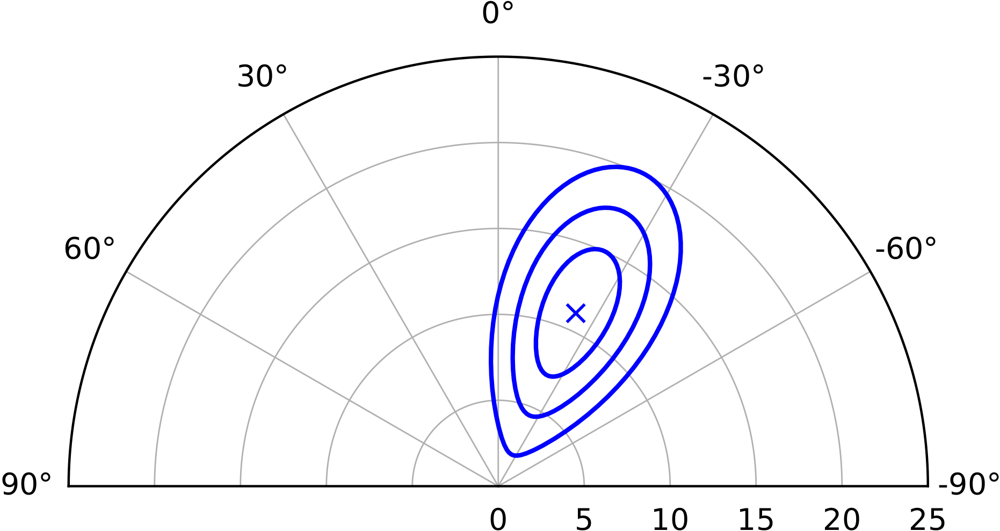
图注：Contour plots of the polarization degree and angle without correction for background. The $\times$ marks the measured values. The contours show the 68.27\%, 95.45\%, and 99.73\% confidence intervals for $\chi^2$ on 2 degrees of freedom. Position angles are measured positive east of north.
对应解读：“建议重点查看的图表”第2、3项，以及“关键图表逐图导读”图2和模型拟合段落中关于偏振置信区间、零偏振排除和偏振度/EVPA测量的讨论。
入选理由：这是本文最直接支撑IXPE偏振探测的诊断图，给出偏振度与偏振角的置信轮廓和测量值，可用于判断偏振信号显著性、误差范围以及EVPA的可靠性。虽然图注说明未做背景校正，仍是候选图中唯一展示偏振参数置信区间的图，比单纯光变或几何图更直接支撑13.1%偏振和4.2σ探测的核心结论。
来源与置信度：\(arxiv_source\)；high；\(arxiv_source\) / ls61.tex:figure[2]
Fig03
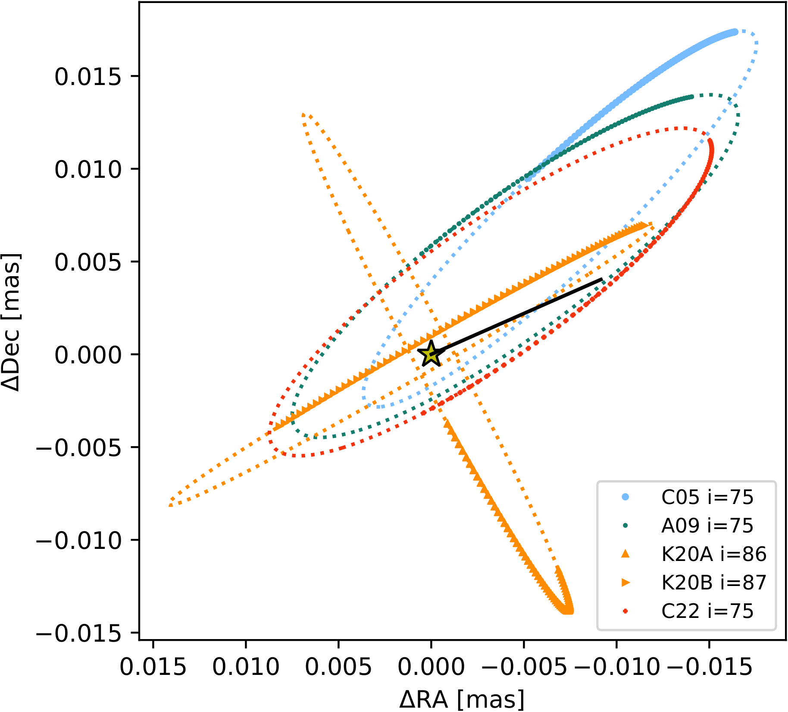
图注：Orbital motion of LS61 on the sky. Shown is the orbital motion of LS61 for the orbital solution of Casares (C05, blue), Aragona (A09, green), and Chen (C22, orange) for $i = 60^{\circ}$ and the orbital solution of Kravtkov (K20, vermillion). The star shows the system barycenter. The black line segment emanating from the star indicates the X-ray EVPA. The points mark the times of the IXPE light curve segments shown in Fig.~\(\ref{fig:flux_phase}.\)
对应解读：“建议重点查看的图表”第4、5项，以及“关键图表逐图导读”图4中关于不同轨道解、天空面投影和X射线EVPA相对双星轴方向的讨论。
入选理由：该图把Casares、Aragona、Chen、Kravtsov等不同轨道解在天空面的轨道投影与X射线EVPA放在同一图中，是解释EVPA相对致密天体—恒星连线是否对齐、偏移或近似垂直的关键证据。它直接体现日报强调的主要系统误差来源：轨道元素不确定性对几何解释的影响。
来源与置信度：\(arxiv_source\)；high；\(arxiv_source\) / ls61.tex:figure[3]
Fig04
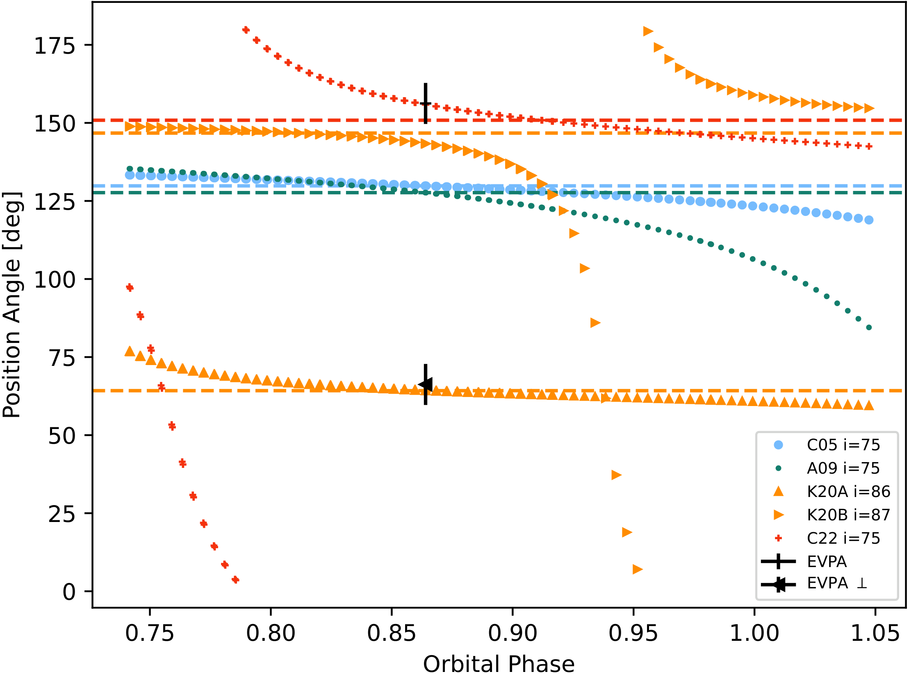
图注：Pulsar position angle versus orbital phase for the IXPE light curve segments. The orbital solutions and inclinations are as in Fig.~\(\ref{fig:orbit}.\) The dashed horizontal lines indicate the median of each distribution. The points show the X-ray EVPA and rotated by $90^\circ$ (EVPA $\perp$) and are plotted at the median orbital phase of the IXPE light curve segments.
对应解读：“建议重点查看的图表”第5项，以及“关键图表逐图导读”图5中关于EVPA、EVPA旋转90度后方向与不同轨道解下双星位置角比较的讨论。
入选理由：该图以轨道相位为横轴展示不同轨道解给出的脉冲星位置角，并叠加X射线EVPA及其90度旋转方向，最适合检查日报中提到的接近0°、30°或90°几何解释。它比Fig03更定量地显示相位段内位置角变化和不同解之间的分歧，是物理解释汇总的重要图。
来源与置信度：\(arxiv_source\)；high；\(arxiv_source\) / ls61.tex:figure[4]
Fig01
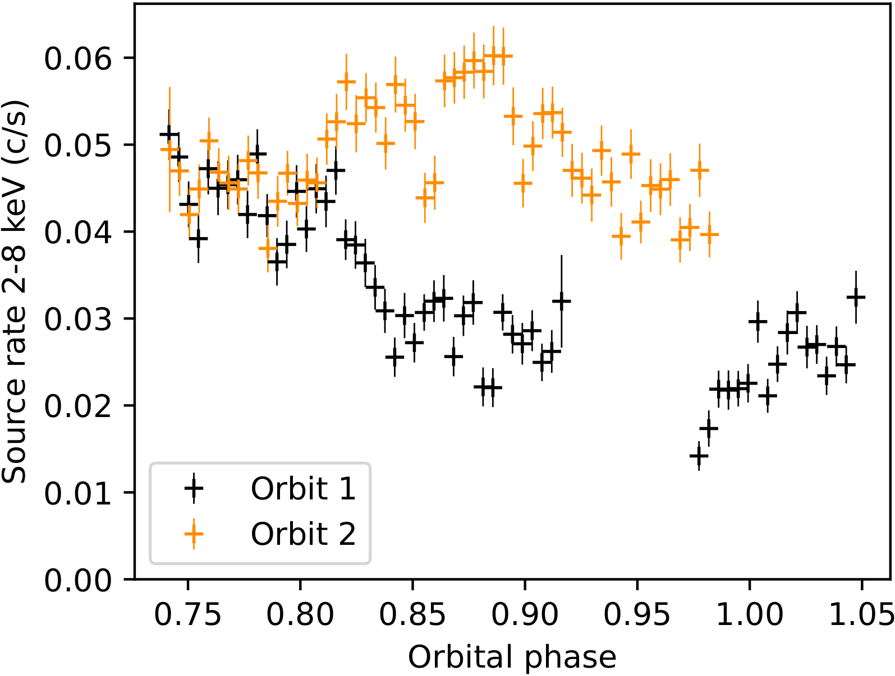
图注：IXPE count rate in the 2-8~keV band versus orbital phase. Black points are observations during the first orbit, while orange points are during the second orbit.
对应解读：“建议重点查看的图表”第1项，以及“关键图表逐图导读”图1中关于IXPE观测相位覆盖、两圈观测和2--8 keV计数率变化的讨论。
入选理由：该图明确给出2--8 keV IXPE计数率随轨道相位的变化，并区分第一圈和第二圈观测，能验证观测确实覆盖相位0.74--1.05及两段数据是否可合并。它对理解平均偏振是否可能受相位变化或光变影响很有用，但相较偏振置信图和轨道几何图，对核心偏振探测与EVPA解释的支撑略间接。
来源与置信度：\(arxiv_source\)；high；\(arxiv_source\) / ls61.tex:figure[1]
强相关工作
这篇工作最直接的参照是 PSR B1259-63 的 X 射线偏振探测。PSR B1259-63 是确认含年轻脉冲星的伽马射线双星，其轨道和物理图像比 LS I +61 303 更清楚。如果两者都显示同步 X 射线偏振与双星相互作用区轴向有关，那么“碰撞风中存在有序磁场”可能是伽马射线双星的一般特征，而非个别源偶然现象。检索关键词可用 \(\mathrm{IXPE}\)、\(\mathrm{PSR\ B1259-63}\)、\(\mathrm{gamma-ray\ binary}\)、\(\mathrm{X-ray\ polarization}\)。
与之相对或存在张力的方向，是 LS I +61 303 的轨道解和源本质问题。径向速度、光学偏振、VLBI 射电形态、X 射线和 TeV 光变建模给出的倾角、节点角和近星点参数并不完全一致；某些解释偏向碰撞风尾流，另一些历史上曾支持微类星体喷流。本文并没有终结这些争论，但说明 X 射线偏振已经足以成为筛选轨道解和辐射模型的实质约束。建议检索关键词包括 \(\mathrm{LS\ I\ +61\ 303\ orbital\ elements}\)、\(\mathrm{VLBI\ radio\ morphology}\)、\(\mathrm{optical\ polarimetry}\)、\(\mathrm{keV\ TeV\ light\ curve\ modeling}\)、\(\mathrm{pulsar\ wind\ binary}\)。
相似工作：
- https://arxiv.org/abs/2605.15972
- https://ui.adsabs.harvard.edu/search/q=IXPE%20PSR%20B1259-63%20X-ray%20polarization
基础理论 / 方法工作：
- https://ui.adsabs.harvard.edu/search/q=synchrotron%20radiation%20polarization%20Rybicki%20Lightman
- https://ui.adsabs.harvard.edu/search/q=gamma-ray%20binaries%20review%20Dubus
- https://ui.adsabs.harvard.edu/search/q=IXPE%20mission%20Weisskopf
相反观点 / 张力线索：
- https://ui.adsabs.harvard.edu/search/q=LS%20I%20%2B61%20303%20microquasar%20pulsar%20wind
- https://ui.adsabs.harvard.edu/search/q=LS%20I%20%2B61%20303%20orbital%20elements%20radial%20velocity%20optical%20polarimetry
- https://ui.adsabs.harvard.edu/search/q=LS%20I%20%2B61%20303%20VLBI%20radio%20morphology
6. Imaging the radio-wave emission from extensive air showers
- 来源：arXiv / astro-ph.HE
- 链接：https://arxiv.org/abs/2605.15919v1
- 作者：Juan Ammerman-Yebra, Harm Schoorlemmer, Anne Timmermans, Sebastian Achim Mueller
- 评分：novelty 8/10，importance 8/10，relevance 9/10，final 9.35/10
- 推荐理由：提出用GHz天线阵列成像宇宙线空气簇射射电辐射，类比IACT方法，可能影响超高能伽马射线和宇宙线探测技术。
中文题目：Imaging the radio-wave emission from extensive air showers
做了什么：本篇论文已通过推荐筛选，但自动详细解读生成失败。可先根据题目和摘要判断阅读优先级：We propose a new way to observe cosmic-ray-induced air showers by imaging the radio emission. With simulations we demonstrate key features for imaging the radio-wave emission from air showers, which show similarities to the well-established atmospheric imaging Cherenkov technique in gamma-ray astronomy. In addition, we find that imaging the emission with a camera, consisting of multiple antennas, resolves emission that is not accessible to a single antenna. Pursuing this technique, with a camera operating in the GHz frequency domain, might be beneficial ultra-high-energy gamma-ray astronomy and other studies that include detailed observations of air showers.
为什么重要：这篇论文在今日候选中通过了本地推荐阈值，说明它与当前高能天体物理兴趣方向或质量标准较匹配；详细内容建议优先查看原文摘要、结论和图表。
理论 / 观测 / 仪器方法价值：由于 LLM 摘要 JSON 解析失败，本节保留为安全占位，不编造论文未确认的公式、图号或链接。
为什么应该关注：日报仍保留这篇论文，是为了避免单篇摘要失败导致整份日报缺失。请把它作为需要人工快速复核的高优先级候选。
展开详细解读：文章讲解、背景、理论、重点章节、图表与相关工作
文章详细讲解
本文要回答的科学问题可以表述为：空气簇射在 GHz 频段的无线电辐射是否能够被“成像”，以及这种成像是否提供单天线观测无法获得的信息。摘要强调作者用模拟展示了关键特征，并指出这些特征与伽马射线天文学中成熟的成像大气切伦科夫技术有相似性。换言之，论文不是单纯预测某个天线能否探测到脉冲，而是在检验多像素射频相机能否把簇射纵向发展、最大辐射区域、不同初级粒子或能量造成的形态差异显现为图像结构。
方法上，已有图注显示作者至少构造了垂直入射的质子诱导空气簇射模拟，并在水平面上不同位置放置指向天顶的相机。Fig.01 把信号强度和到达时间按天顶角像素化，标出 shower maximum 的位置以及最高积分功率像素；Fig.02 在 2--4 GHz 对功率成像，比较不同相机位置及不同能量、不同初级粒子；Fig.03 对比各像素幅度谱、相机总谱和单天线总谱；Fig.04 则解释轴两侧辐射的破坏性极化干涉。应把这些图连成一条逻辑链：先确认角向图像与簇射几何有关，再确认频段内功率图像有可辨形态，最后说明多像素分解为何优于单天线混合。
关键结果的阅读重点不是“图像看起来像一条亮带”这么简单，而是要问三个定量问题。第一，最高积分功率像素与 shower maximum 或切伦科夫增强区域之间的角距离有多大，是否随相机离轴距离系统变化。第二，不同能量和初级粒子图像的差异是幅度缩放为主，还是形态、长度、宽度、峰值位置、到达时间梯度也发生变化。第三，相机总谱相对于单天线总谱的差异来自角向分辨带来的相干恢复，还是来自对极化干涉、时间延迟和带通选择的不同处理。若正文没有给出完整拟合，应把这些作为后续量化工作需要补齐的指标。
局限性方面，摘要和图注都显示本文以模拟演示为主，因此最需要核查模拟条件和仪器理想化程度。关键问题包括：使用何种空气簇射模拟和无线电发射计算工具；大气折射率模型、地磁场、地面反射、天线方向图、噪声温度、采样率和触发门限是否包含；相机像素数量、角分辨率、带宽和动态范围是否现实；不同相机位置是否覆盖了代表性几何。若这些因素被简化，论文结论仍可作为概念验证，但不能直接外推到实验灵敏度或实际阵列设计。
下一步修复或扩展应集中在从“可成像”走向“可重建”。一套更完整的分析应定义图像矩、到达时间斜率、频谱斜率、极化不对称等特征量，并通过端到端模拟评估对能量、方向、\(X_{\max}\) 和初级粒子类型的约束能力。还应与单天线、稀疏低频阵列、光学切伦科夫成像进行同一套事件样本的比较，给出在噪声和系统误差下的重建偏差、分辨率和误分类率。只有这样，才能判断 GHz 无线电相机是否真正适合超高能伽马天文学，而不仅是产生有趣的模拟图像。
背景知识
超高能宇宙线和伽马线进入地球大气后会产生广延空气簇射：初级粒子与空气核相互作用，生成大量次级粒子，电磁级联沿着入射方向发展，并在某一大气深度达到粒子数最大值，即 shower maximum 或 \(X_{\max}\)。传统上，研究这类簇射主要依赖地面粒子阵列、荧光望远镜、成像大气切伦科夫望远镜以及低频无线电阵列。每种技术看到的是同一个簇射的不同投影：粒子阵列接近地面横向分布，荧光观测纵向能量沉积，切伦科夫观测纳秒级光学闪光，而无线电观测带电粒子的相干电磁辐射。
无线电探测空气簇射并不是新想法。过去十多年，LOFAR、AERA、Tunka-Rex 等实验已经证明几十 MHz 到数百 MHz 频段的无线电信号可以用于能量重建和 \(X_{\max}\) 估计。低频优势在于相干长度较大、信号可覆盖较宽地面 footprint；劣势是角分辨成像直观性不如光学切伦科夫望远镜，而且单天线或稀疏阵列通常记录的是某个空间点处的电场时间迹线，需要通过复杂反演来推断簇射几何和纵向发展。
本文的核心动机是把“空气簇射无线电探测”推进到“无线电成像”层面：用由多个天线组成的 GHz 频段相机，把来自簇射不同视线方向或不同像素的辐射分开，形成类似成像大气切伦科夫技术中的 shower image。摘要和已提取图注显示，作者通过模拟展示了 2--4 GHz 频段下 10 PeV 质子簇射及不同能量、不同初级粒子簇射的图像，并比较了相机成像与单天线观测在频谱信息上的差异。这里的“相机”不是光学 CCD，而是多天线、多像素、方向选择性的射频接收系统。
阅读时要避免一个常见误区：GHz 空气簇射无线电图像并不等同于普通射电天文的长时间积分图像。空气簇射信号是纳秒尺度瞬变，成像依赖时间结构、方向响应、相干性、极化和几何投影；图像颜色条可能代表时间积分功率或信号强度，而不是稳态亮度温度。另一个误区是把多天线相机与单个宽带天线的总功率测量混为一谈。本文 Fig.03 的重点正是：相机各像素可解析沿簇射轴不同区域的脉冲频谱，而单天线会把这些分量相干或非相干地混合，甚至因极化和相位关系出现信息损失。
从高能天体物理角度看，这项技术的潜在价值在于超高能伽马射线天文学。伽马诱导簇射与强子诱导簇射在 \(X_{\max}\)、横向结构、缪子含量和电磁级联形态上有差异；如果 GHz 无线电成像能提供更细的纵向或角向结构，它可能补充传统地面阵列和切伦科夫望远镜，尤其适用于需要大视场、全天候或低背景瞬变探测的场景。不过本文从摘要看主要是概念和模拟展示，不能直接读成已经给出实验灵敏度、源探测率或伽马/强子分辨率的成熟结论。
基础理论 / 方法脉络
空气簇射无线电辐射的基本物理图像是：相对论性电子和正电子在大气中集体运动，受到地磁场偏转并产生随时间变化的横向电流，同时簇射前沿还携带净负电荷过剩。这两个机制通常分别称为 geomagnetic emission 和 Askaryan/charge-excess emission。观测到的电场 \(\mathbf{E}(t)\) 是整个簇射体积中这些加速电荷贡献在探测器处的叠加；由于粒子团厚度和视线几何有限，在某些频段和角度上会出现相干增强。
相干性是从低频无线电到 GHz 成像的关键分界。几十 MHz 时，波长为数米到十米量级，簇射前沿厚度和横向尺度相对较小，因此较大区域的辐射可以相干相加。到 2--4 GHz，波长约 7.5--15 cm，相干条件更苛刻，只有特定几何、靠近切伦科夫角或薄层结构的辐射能保持较强高频成分。因此 GHz 相机看到的不是低频 footprint 的简单缩放，而是对簇射时空细结构、到达时间梯度和极化相位更敏感的“显微”观测。
本文的观测量可从已提取图注概括为三类：第一，按天顶角像素化后的信号强度和到达时间，例如 Fig.01 中两个相机位置 \((x=50\,\mathrm{m},y=0)\) 与 \((x=130\,\mathrm{m},y=0)\) 的比较；第二，2--4 GHz 频段内的积分功率图像，例如 Fig.02 左图和不同能量/初级粒子图像；第三，沿簇射轴各像素的脉冲幅度谱、相机总谱与单天线总谱，例如 Fig.03。它们共同对应“空间角向分辨 + 时间分辨 + 频谱分辨”的无线电相机诊断。
从仪器角度，所谓相机可抽象为一组具有不同指向或不同角像素响应 \(B_p(\hat{\mathbf{n}},\nu)\) 的天线通道。每个像素 \(p\) 接收来自方向 \(\hat{\mathbf{n}}\) 的电场，经带通滤波、天线有效长度和电子学响应后形成电压时间迹线 \(V_p(t)\)。若把每个像素的积分功率或峰值功率放在角坐标上，就得到空气簇射无线电图像。读者应特别关注：图像的像素坐标是天顶角/方位角还是投影角距离，颜色条是电场幅度、功率、能量通量还是滤波后的积分量。
该方法与成像大气切伦科夫技术相似，但物理和系统误差并不完全相同。切伦科夫相机记录光子在焦平面的图像，主要处理夜天光、镜面响应和图像矩参数；GHz 无线电相机记录电磁波形，必须处理相位、极化、带宽、天线方向图、互耦、触发和射频噪声。尤其在 Fig.04 所示的簇射轴两侧破坏性极化干涉中，单纯看总功率可能掩盖不同区域的相位抵消；成像的优势正是把这些区域分离开，但也要求模拟和校准足够准确。
公式与推导
可以从相对论性带电粒子的辐射叠加开始理解本文。探测器处的电场可形式化写成各微元电流源的延迟势贡献：
这里 \(\mathbf{J}\) 表示簇射中随时间变化的有效电流和电荷运动，\(\mathbf{G}\) 是包含大气折射率和传播延迟的格林函数。该式不要求读者手算完整辐射场，但说明相机图像本质上是对簇射四维时空发射结构的投影。
地磁机制可用横向电流的量级来建立标度关系：
其中 \(N_e(t)\) 是簇射中电子/正电子数，\(\mathbf{v}\) 为簇射前沿速度，\(\mathbf{B}\) 为地磁场。辐射幅度通常随 \(|\mathbf{v}\times\mathbf{B}|\) 增强，因此不同天顶角、方位角和地点的信号不能只按能量缩放。
电荷过剩机制可表示为净负电荷数 \(N_{\rm ce}=f_{\rm ce}N_e\)，其辐射近似与净电荷变化相关：
这里 \(t_{\rm ret}\) 是延迟时间。总电场是地磁分量与电荷过剩分量的矢量和，
因而不同像素或簇射轴两侧可能因极化方向不同而出现 Fig.04 所示的破坏性干涉。
相干性可用相位差条件表示。来自两个发射区域的路径差 \(\Delta L\) 在频率 \(\nu\) 上产生相位差
当 \(|\Delta\phi|\ll 1\) 时电场相干相加，功率近似随粒子数平方增长；当 \(|\Delta\phi|\gtrsim 1\) 时会发生退相干或干涉振荡。GHz 频段因 \(\lambda=c/\nu\) 很短，对 \(\Delta L\) 和到达时间差极其敏感，这正是成像相机能解析单天线混合信号的原因之一。
相机像素 \(p\) 接收到的电压可写为天线响应卷积：
其中 \(H_p\) 是电子学带通，\(B_p\) 是方向响应，\(\mathbf{h}_p\) 是有效长度/极化响应。该式给出了读图时必须核查的仪器量：带宽、像素方向图和极化投影。
图像颜色条若表示某像素在频带 \([\nu_1,\nu_2]\) 与时间窗 \([t_1,t_2]\) 内的积分功率，可抽象为
或在归一化到电场后写作
Fig.02 的单位含有 \(\mathrm{ns}\,\mathrm{V}^2/\mathrm{m}^2\)，正对应时间积分电场平方这一类量。
到达时间结构可由几何传播近似理解：
其中 \(s\) 是沿簇射轴的位置，\(n(h)\) 是随高度变化的大气折射率。若把 \(s\) 投影成相机角坐标 \(\theta_p\)，则 \(dt_{\rm obs}/d\theta_p\) 的斜率反映簇射几何和发射高度分布；这就是 Fig.01 到达时间曲线的物理读法。
为了从图像反推物理参数，可建立一个简单的前向模型：
其中 \(\mu_p\) 是预测像素功率或波形，\(E\) 为初级能量，\(\hat{\mathbf{s}}\) 为方向，\(\mathbf{r}_{\rm core}\) 为落点，\(A_{\rm primary}\) 代表初级类型，\(\boldsymbol{\eta}\) 为仪器和大气 nuisance 参数。若噪声近似高斯，波形似然可写为
若只拟合功率图像，则应改用适合正定功率估计的噪声模型。该似然框架说明本文模拟图像未来如何转化为参数重建。
模型拟合 / 应用方法
本文从摘要和图注看主要是模拟成像展示，而非传统意义上对观测数据进行参数拟合；因此阅读“模型拟合”时应把它理解为前向模拟与可重建量之间的关系。可拟合的观测量包括每个像素的波形 \(V_p(t)\)、带通后的积分功率 \(I_p\)、到达时间 \(t_p\)、频谱幅度 \(|\tilde V_p(\nu)|\)、图像矩以及极化分量。对应的物理参数包括初级能量、入射方向、核心位置、\(X_{\max}\)、初级粒子类型以及大气和仪器 nuisance 参数。
若未来将该方法用于真实数据，最直接的似然是波形级似然：比较每个像素每个时间采样点的观测电压与模拟模板，并加入噪声协方差。若只使用图像功率，则应注意功率是电压平方积分，噪声分布不再严格高斯，低信噪比下会有正偏；这时用简单 \(\chi^2\) 拟合颜色条数值可能产生偏差。频谱拟合还要区分幅度谱和功率谱，并处理窗函数、采样率、带通边缘和相位校准误差。
残差诊断应至少包含四类。第一，角向残差：模型峰值位置、图像长度和宽度是否与模拟/观测一致。第二，时间残差：到达时间梯度是否系统偏移，这可能指向方向、核心位置或大气折射率错误。第三，频谱残差：高频端是否过强或过弱，这可暴露簇射厚度、相干性或天线带通模型问题。第四，极化残差：轴两侧相消是否被正确再现，若不正确，单天线与相机总谱差异的解释就不稳固。
主要参数退化包括能量与距离/方向图增益的退化，\(X_{\max}\) 与核心位置的投影退化，初级粒子类型与第一相互作用涨落的退化，以及带宽/时间窗选择与图像总功率的退化。特别是不同初级粒子图像的差异可能被 shower-to-shower fluctuation 淹没；单个示例图不能代表分类能力。要证明伽马/强子分辨，需要大量模拟事件、相同能量和几何条件下的统计分布，以及交叉验证的分类或似然比检验。
系统误差方面，GHz 相机比低频无线电阵列更依赖精细校准。天线有效长度、像素方向图、互耦、绝对增益、相位响应、触发时钟、射频干扰、大气折射率剖面和地面反射都可能改变图像和频谱。若论文模拟中未包含这些效应，应在结论中降级其外推强度。一个合理的后续拟合框架应把仪器响应参数作为 nuisance 参数边缘化，而不是先用理想响应生成图像再直接解释物理。
模型也可能在物理层面失效。例如，若 GHz 信号主要来自非常窄的相干区域，那么对 hadronic interaction model、低能电磁粒子输运和大气密度剖面的敏感性会增强；若实际背景噪声或 RFI 使纳秒脉冲难以稳定触发，模拟中的形态优势可能无法转化为有效事件率。判断模型是否可靠的标准不应只是图像清晰，而应是注入-恢复测试：给定已知能量、方向和 \(X_{\max}\) 的模拟事件，加入真实噪声和校准误差后能否无偏恢复这些参数。
重点章节 / 结果段落怎么读
-
引言与动机部分：重点找作者如何定位这项技术与低频无线电阵列、成像大气切伦科夫望远镜和超高能伽马探测之间的关系。应特别标出他们声称的新增能力是“GHz 频段”“相机成像”“多天线解析”中的哪一个，避免把已有无线电探测成果误认为本文独有贡献。
-
模拟与相机几何部分：这是全文可信度的核心。需要记录初级粒子类型、能量范围、入射角、相机位置、像素数、视场、频带、采样和滤波方式。若正文给出相机 geometry 图，应把每个成像结果对应到具体相机位置；如果只给理想化设置，则在阅读笔记中明确这是概念验证而非工程设计。
-
角向-时间结构结果部分：对应 Fig.01。阅读时应从 shower maximum 标线、最高积分功率像素和到达时间梯度入手，判断成像是否真的提供纵向发展信息。建议把每个相机位置下峰值角、\(X_{\max}\) 角位置和时间斜率记成表格，作为后续重建 \(X_{\max}\) 的潜在观测量。
-
2--4 GHz 图像与初级粒子/能量比较部分：对应 Fig.02。不要停留在“图像很像切伦科夫图像”的类比，而要找定量指标：总功率、图像长度、宽度、偏心率、峰值位置、是否存在多峰或轴两侧不对称。若论文只展示图像而没有统计量，读者应把这视为下一步分析的空白。
-
频谱与单天线对比部分：对应 Fig.03 和 Fig.04，是本文最有辨识度的论证。应追踪作者如何定义相机总谱和单天线谱，是否控制了相同带宽、位置和接收面积；同时结合极化干涉图理解为什么多像素相机能避免信息混叠。这一节决定“相机优于单天线”的说法是物理必然、模拟示例，还是依赖特定几何。
-
讨论与展望部分：重点核查作者是否讨论真实仪器噪声、天线校准、触发、数据率、背景射频干扰和伽马/强子区分。如果这些只被简短提及，阅读结论时应保守：本文支持 GHz 无线电成像的可行性和潜在价值，但尚未完成探测灵敏度或天文源可达性的论证。
建议重点查看的图表
-
角向像素化的信号强度与到达时间图：重点看横轴/纵轴是否为天顶角、方位角或沿簇射轴投影角，颜色条代表峰值场强还是积分功率；检查 shower maximum 标线与最高功率像素是否重合，以及不同相机位置下到达时间梯度是否符合几何预期。
-
2--4 GHz 积分功率成像图：重点看颜色条单位、积分时间窗、带通滤波方式和相机指向。比较同一簇射在不同地面位置的图像是否只是亮度变化，还是出现长度、宽度、峰值偏移和多峰结构变化。
-
不同初级粒子和能量的图像矩比较：若正文有类似 Fig.02 右图，应检查能量增加是否近似带来功率按电场平方缩放，初级粒子差异是否表现为 \(X_{\max}\) 位置和图像伸展差异。不要只凭肉眼判断粒子鉴别能力，需要寻找图像长度、宽度、峰值角、总功率等量化指标。
-
幅度谱与单天线对比：检查各像素频谱曲线、相机总频谱和单天线总频谱的定义是否一致；注意总谱是电场幅度相干相加、功率相加，还是先做时间窗后傅里叶变换。该图直接关系到“相机解析了单天线不可及信息”的论断。
-
极化干涉与时间迹线图：重点看轴两侧贡献的极化方向、相位差和滤波频段。Fig.04 图注提到 0--2000 MHz 滤波用于降低噪声和便于可视化，因此读者应检查这是否与主要 2--4 GHz 成像分析频段不同，避免把示意性滤波图误读为主要观测设置。
-
几何和相机布局示意图：如果正文有 camera geometry 图，应检查相机位置、指向、像素角尺寸、视场和簇射轴位置。成像结果对几何高度敏感，缺少几何图会使图像坐标和物理距离难以对应。
-
噪声、触发或灵敏度诊断图：若论文包含系统噪声或探测阈值估计，应看信噪比如何随能量、距离、带宽和积分窗变化；若没有这类图，应把它列为从概念模拟到真实仪器设计之间最大的缺口之一。
关键图表逐图导读
图 1：这张图按天顶角像素展示两个不同地面位置相机接收到的信号强度和到达时间，顶部相机在 \((x=50\,\mathrm{m},y=0)\)，底部相机在 \((x=130\,\mathrm{m},y=0)\)。读者应先确认横轴是否为像素化天顶角、纵向或颜色是否分别表示到达时间和信号强度；图注说明到达时间人为加了 2 ns offset 以便可视化，因此不能把绝对时间差直接当成物理延迟。黑色虚线标出 shower maximum，灰色水平线标出最高积分功率像素，这是判断无线电图像是否追踪簇射最大位置的关键。陷阱是：最高功率像素未必严格等于 \(X_{\max}\)，因为切伦科夫压缩、方向图、带通和几何投影都会移动峰值。
图 2：左图是 10 PeV 质子垂直入射簇射在 2--4 GHz 的功率成像，不同相机放在水平面不同位置并指向天顶。颜色条单位为 \(\mathrm{ns}\,\mathrm{V}^2/\mathrm{m}^2\) 一类时间积分电场平方量，应把它读成有限频带和时间窗内的脉冲功率代理，而不是稳态辐射亮度。比较不同相机位置时，要看峰值角位置、图像长度、宽度和可能的非对称结构是否随核心距离变化。右图比较不同初级粒子类型和能量的空气簇射图像，适合检查能量主要改变归一化还是也改变形态；若正文没有给出图像矩统计，不应仅凭视觉差异宣称已实现成分鉴别。
图 3：这张图展示沿簇射轴不同像素观测到的脉冲幅度谱，彩色线为单个像素，黑实线为相机总幅度谱，灰虚线为单天线总幅度谱。读图时第一步是区分“幅度谱”与“功率谱”，第二步是核查总谱如何由各像素合成：电场相干合成和功率非相干求和会给出不同结果。该图最直接支持论文摘要中的结论，即多天线相机解析了单天线不可访问的发射结构。陷阱是把黑线与灰线的差异全部归因于灵敏度提升；它也可能来自角向分辨避免了不同发射区域的相位和极化抵消。
图 4：图注说明该图展示空气簇射轴两侧发射的破坏性极化干涉，时间迹线经过 0--2000 MHz 滤波以降低噪声并便于可视化。它是解释性机制图，而不是主要 2--4 GHz 成像结果的简单重复。读者应关注两侧信号的极化方向、相位关系以及相加后幅度降低的位置；这有助于理解为什么单天线总信号会丢失某些空间信息。需要注意滤波频段与 Fig.02 的 2--4 GHz 不同，因此不能把该图中的时间迹线幅度直接用于估计主要成像频段的信噪比。
论文原图 / 可嵌入图片
Fig02
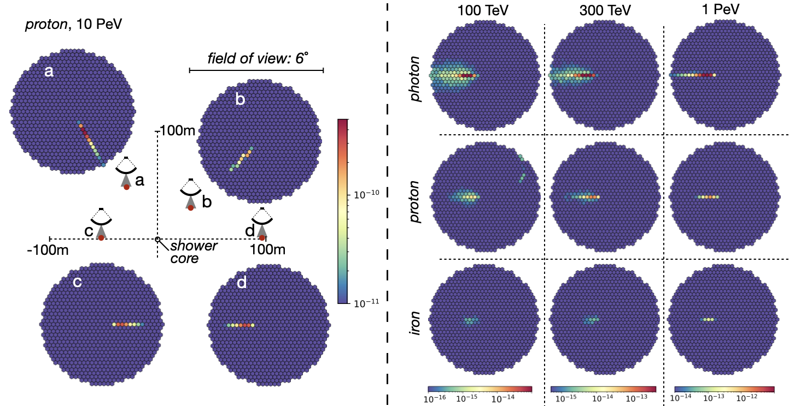
图注：Left: Imaging the power of the radio-wave emission of a simulated 10\,PeV proton-induced air shower between 2 and 4\,GHz (colorbar units in (ns V$^2$/m$^2$) ). The cameras are placed at different locations in a horizontal plane and point straight up. The proton comes in from zenith. Right: Images of air showers induced by different type of cosmic primaries as a function of their energy.
对应解读：对应“建议重点查看的图表”中关于主要数据/模拟展示与灵敏度或可观测特征的检查，也最适合作为核心成像结果图。
入选理由：该图直接展示2–4 GHz频段下空气簇射无线电辐射的成像结果：左图比较不同相机位置得到的功率图像，右图比较不同初级粒子类型和能量下的空气簇射图像。它最集中地支撑论文核心主张——可用多天线相机对宇宙线诱导空气簇射的无线电辐射进行成像，并展示能量与初级粒子差异带来的形态变化。
来源与置信度：\(arxiv_source\)；high；\(arxiv_source\) / main.tex:figure[2]
Fig01
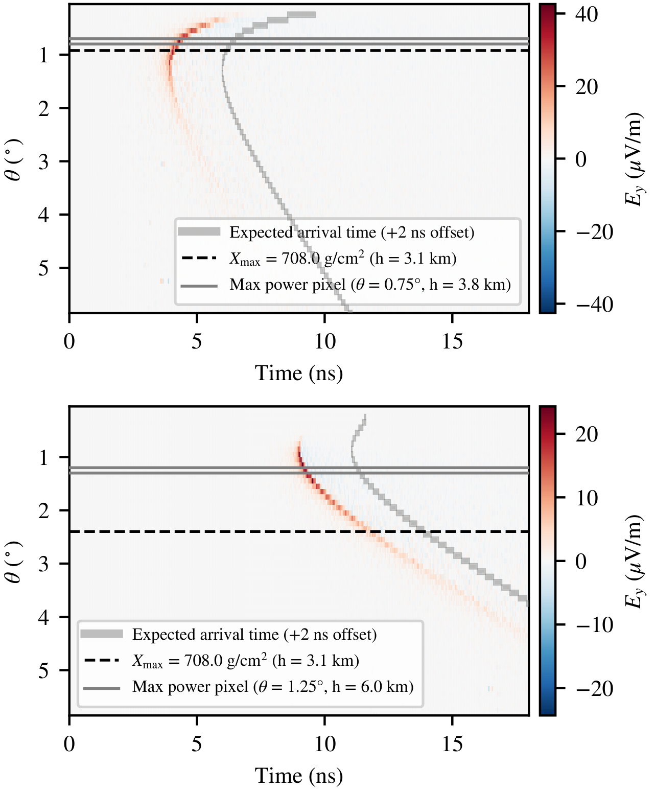
图注：Signal strength (color axis) and arrival time of the radio emission (with an offset of 2\,ns for better visualization) while pixelized in the zenith angle for two cameras, one placed at ($x=50\,\text{m},y=0\,\text{m})$ (top) and one at ($x=130\,\text{m},y=0\,\text{m})$ (bottom). The black dashed line indicates the location of the shower maximum and the pixel with highest integrated power is highlighted by two gray horizontal lines.
对应解读：对应“关键图表逐图导读”应重点检查坐标轴、样本选择和物理诊断量的部分，尤其是信号强度、到达时间、天顶角像素化和簇射最大位置。
入选理由：该图给出两个不同相机位置下，沿天顶角像素化后的无线电信号强度与到达时间结构，并标出shower maximum及最高积分功率像素。它比单纯示意图更能说明成像技术如何定位簇射纵向发展和最大辐射区域，是理解成像诊断量的关键图。
来源与置信度：\(arxiv_source\)；high；\(arxiv_source\) / main.tex:figure[1]
Fig03
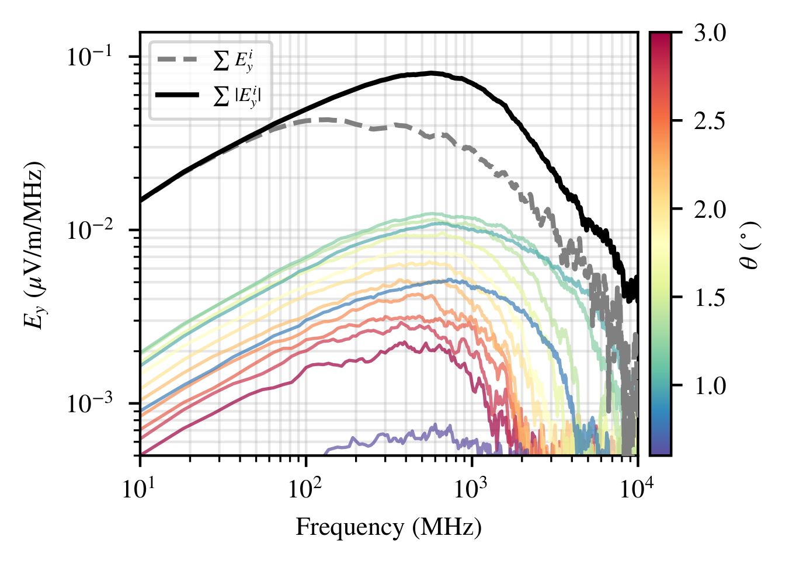
图注：Amplitude spectra for pulses observed by individual pixels along the shower axis shown by the colored lines, the black solid line shows total amplitude spectra observed by a camera, while the gray dashed line shows the total amplitude spectra for a single antenna. Signals were obtained using camera ``\(\textit{d}\)'' displayed in Figure \(\ref{fig:camera_geometry}\) (left).
对应解读：对应“模型拟合/方法诊断”中需检查频谱、系统差异和单天线对比的部分。
入选理由：该图比较了相机各像素沿簇射轴观测到的脉冲幅度谱、相机总幅度谱以及单天线总幅度谱，直接支撑摘要中的关键结论：多天线相机能解析单天线无法获得的发射信息。它对理解GHz频段成像相较传统单天线测量的增益非常重要。
来源与置信度：\(arxiv_source\)；high；\(arxiv_source\) / main.tex:figure[3]
Fig04
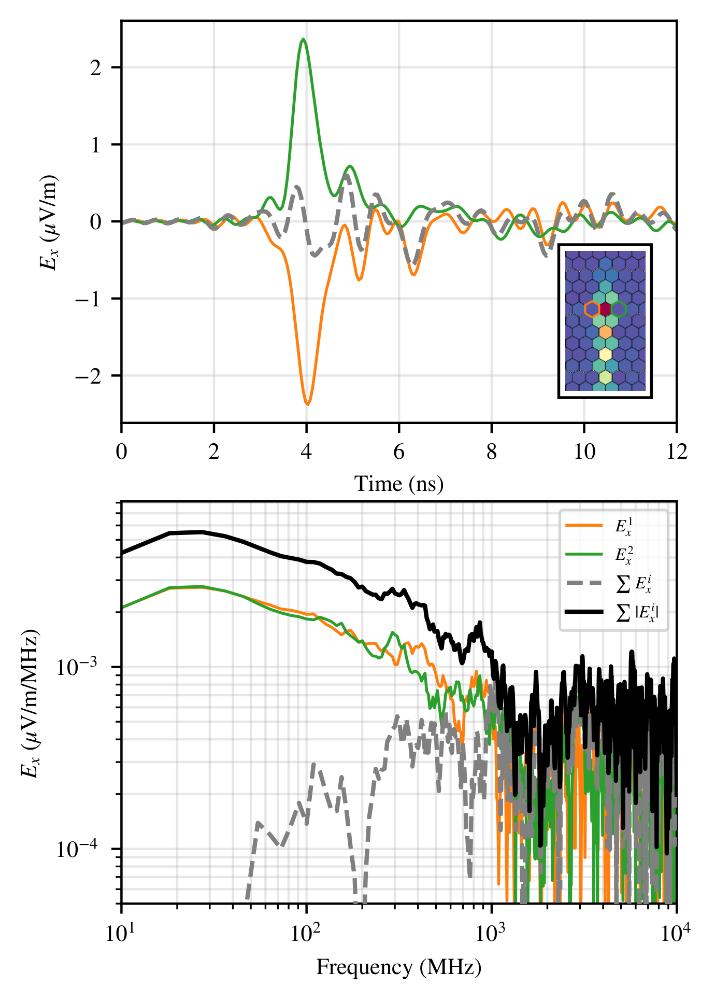
图注：Destructive polarization interference of emission from opposite sides of the air shower axis. Time traces have been filtered between 0 and 2000 MHz to reduce the noise for better visualization.
对应解读：对应“关键图表逐图导读”中关于系统效应、残差诊断或物理机制解释的辅助检查，尤其是极化干涉对信号形态的影响。
入选理由：该图展示空气簇射轴两侧发射的破坏性极化干涉，并给出滤波后的时间迹线。它有助于解释为什么相机成像能分辨复杂辐射结构，但相比Fig02和Fig01，它更偏物理机制示意，直接承载论文主要结果的程度较低。
来源与置信度：\(arxiv_source\)；high；\(arxiv_source\) / main.tex:figure[4]
强相关工作
相关工作可沿三条线索检索。第一是空气簇射无线电探测的基础文献和实验，包括 LOFAR cosmic-ray measurements、AERA、Tunka-Rex、CODALEMA 以及 CoREAS/ZHAireS 等模拟工具；关键词可用 “radio emission extensive air showers geomagnetic charge-excess Xmax”。这些工作提供了低频相干辐射、能量标定和 \(X_{\max}\) 重建的基准，能帮助判断本文 GHz 成像相对于既有无线电阵列的新增信息。
第二条线索是成像大气切伦科夫技术和空气簇射图像分析，包括 Hillas parameters、gamma-hadron separation、Cherenkov light image reconstruction、IACT 等关键词。本文显式类比成像切伦科夫技术，因此应比较两者在图像形成、时间尺度、背景、角分辨率和分类变量上的异同。尤其值得查找是否已有“radio imaging of air showers”或“microwave/GHz emission from air showers”的早期概念研究，以避免把已有微波空气簇射尝试遗漏。
第三条线索是可能存在张力或失败案例的文献：GHz/microwave 空气簇射发射强度的实验上限、射频干扰环境、单天线宽带探测未能达到预期灵敏度的报告，以及高频相干性快速下降的模拟研究。检索词可包括 “GHz radio emission air shower”, “microwave emission cosmic ray air shower”, “CROME”, “EAS microwave limits”。这些文献有助于判断本文提出的相机方案是否绕开了过去 GHz 探测的困难，还是仍受相同的低信噪比和相干性限制。
最后，若目标是超高能伽马天文学，还应把本文与 LHAASO、HAWC、CTA、Auger photon searches 和 GRAND/BEACON 等高能粒子/无线电概念联系起来。重点不是寻找完全相同仪器，而是比较能量阈值、视场、占空比、背景抑制和 \(X_{\max}\) 或成分识别能力。若后续论文声称该技术“有利于超高能伽马天文学”，需要用这些实验的性能指标作为参照系来评估其真实竞争力。
相似工作：
（未提供）
基础理论 / 方法工作：
（未提供）
相反观点 / 张力线索：
（未提供）
7. Average universal shower profile reconstruction using radio interferometry
- 来源：arXiv / astro-ph.HE
- 链接：https://arxiv.org/abs/2605.15762v1
- 作者：J. Alvarez-Muñiz, W. R. Carvalho, R. Conceição, D. Dias
- 评分：novelty 8/10，importance 8/10，relevance 9/10，final 9.35/10
- 推荐理由：用射电干涉重建空气簇射平均纵向剖面并提升成分和强相互作用模型区分能力，是宇宙线探测方法上的有用进展。
中文题目：用射电干涉法重建平均普适空气簇射剖面
做了什么：这篇文章研究超高能宇宙线广延空气簇射的纵向发展，不只重建常用的簇射极大深度 \(X_{\rm max}\)，而是尝试从射电阵列的干涉信号中直接恢复平均普适簇射剖面，并提取 Gaisser-Hillas 形状参数 \((R,L)\)。作者用蒙特卡洛模拟检验这种方法，发现射电导出的平均剖面对原初粒子质量和强子相互作用模型的区分能力，优于类似荧光观测可得到的平均纵向剖面。这说明射电干涉不仅能给出几何和 \(X_{\rm max}\)，还可能把簇射剖面的高阶形状信息变成成分与强子物理诊断量。
为什么重要：超高能宇宙线成分和高能强子相互作用模型是当前空气簇射物理的核心不确定性。\(X_{\rm max}\) 已经很有用，但它只压缩了纵向剖面的一个位置参数；不同质量组成和不同相互作用模型可能在 \(X_{\rm max}\) 上部分退化。本文关注的平均普适簇射剖面形状参数 \((R,L)\) 提供了比 \(X_{\rm max}\) 更丰富的纵向演化信息，可能帮助把“原初成分变化”和“强子模型错误”这两类效应分开。
理论 / 观测 / 仪器方法价值：方法价值在于把射电阵列从近乎全天候的 \(X_{\rm max}\) 仪器推进到纵向剖面形状测量仪器。对观测而言，这为下一代大面积射电阵列提供了新的数据产品：平均剖面、形状参数、模型间分离度和系统误差诊断。对理论而言，它把空气簇射模拟中的 Gaisser-Hillas 参数、普适剖面变量和射电波前干涉观测联系起来，为检验 hadronic interaction models 提供更直接的量。
为什么应该关注：如果你关心超高能宇宙线的来源、质量组成或 \(\sqrt{s}\) 超出加速器能区的强子物理，这篇文章值得看，因为它提出了一条绕开荧光观测低 duty cycle 限制的路线：用射电干涉在大量事件上积累平均纵向剖面形状。即使你不做射电探测，它也提醒我们：把空气簇射压缩成单个 \(X_{\rm max}\) 会丢掉重要信息，未来成分研究可能要系统使用剖面形状而不是只看极大深度。
展开详细解读：文章讲解、背景、理论、重点章节、图表与相关工作
文章详细讲解
科学问题：广延空气簇射的纵向剖面记录了原初宇宙线在大气中释放能量和繁殖次级粒子的历史。传统上，成分分析大量依赖 \(X_{\rm max}\) 的均值和涨落；轻核如质子通常穿透更深、涨落更大，重核如铁核发展更早、涨落较小。但 \(X_{\rm max}\) 是一个高度压缩的统计量，同一 \(X_{\rm max}\) 均值可能来自不同原初质量混合，也可能来自不同强子模型对多重数、非弹性度和截面的预测差异。本文的核心问题是：射电干涉能否从电磁辐射数据中恢复平均纵向剖面的形状，并用 Gaisser-Hillas 参数 \((R,L)\) 提供比 \(X_{\rm max}\) 更强的成分和强子模型区分能力。
作者怎么做：论文采用蒙特卡洛模拟的方式生成不同原初粒子和不同强子相互作用模型下的空气簇射及其射电信号，然后用射电干涉重建框架把天线阵列接收到的时间序列相干叠加。射电发射主要来自地磁电流和 Askaryan 电荷过剩机制，发射位置与簇射纵向发展紧密相关；通过对候选三维发射点或候选纵向剖面进行相干功率评估，可以把射电数据映射回随大气深度变化的平均能量沉积或粒子数剖面。与逐事例拟合所有形状参数不同，本文强调“平均 USP”的重建：对一组同类事件或标准化后的事件求平均，从而压低单事件随机涨落和噪声。
关键结果：作者发现，射电干涉导出的平均普适簇射剖面可以提取 Gaisser-Hillas 形状参数 \((R,L)\)，并且这些参数在不同原初质量、不同强子模型之间的分离度比“荧光等效”纵向剖面更好。直观上，射电观测对簇射中电磁组分的时空发展有独特权重，不完全等同于荧光探测对能量沉积的投影，因此平均射电剖面中的形状信息可能增强对早期相互作用和级联发展速率的敏感性。文章的结论不是简单说射电能重建 \(X_{\rm max}\)，而是说射电干涉有能力访问纵向剖面的高阶信息。
局限和下一步：这是一项基于模拟的概念和性能研究，因此真正落地仍取决于阵列几何、天线校准、背景噪声、触发选择、地面反射、大气折射率模型和射电发射模拟的系统误差。平均剖面的优势来自统计叠加，但这也要求样本选择函数被充分理解，否则能量、天顶角、核心位置和质量混合的选择偏差会伪装成形状差异。下一步应是在真实阵列数据上做端到端验证，包括盲注入模拟、用独立荧光或切伦科夫重建交叉校准、检验不同射电模拟包和强子模型的差异，并把 \((R,L)\) 纳入成分混合拟合框架。
背景知识
研究对象是超高能宇宙线撞击大气后产生的广延空气簇射。原初粒子的能量可达 \(10^{18}\) eV 以上，首次相互作用发生在大气上层，随后强子级联、电磁级联和缪子组分共同发展。纵向剖面通常用随大气深度 \(X\) 变化的粒子数或能量沉积来描述，其中 \(X_{\rm max}\) 是剖面达到最大值的位置。\(X_{\rm max}\) 的均值和分布宽度长期被用作原初质量组成的主要观测量。
历史上，荧光望远镜是测量纵向剖面的标准工具，因为空气中氮分子荧光近似正比于带电粒子的能量沉积，能直接给出剖面形状。但荧光观测只能在晴朗、无月或低月光夜晚进行，占空比低，大气透过率和绝对光学校准也很关键。地面粒子阵列占空比高但对纵向发展较间接；射电探测近二十年来快速成熟，兼具较高占空比、较好几何重建和对 \(X_{\rm max}\) 的敏感性。
射电观测的发展使这个问题值得重新审视。现代稠密天线阵列、宽带数字采样和干涉成像方法可以利用波前相干性，而不是只使用单天线脉冲幅度或到达时间。空气簇射射电发射发生在几到几十公里尺度的大气体积内，波前和频谱中携带三维发射区域信息。如果能把这些信息稳定地反演为纵向剖面，就能在远高于荧光占空比的条件下积累大样本平均剖面。
该领域一个常见误区是把“射电测到 \(X_{\rm max}\)”等同于“射电只能测 \(X_{\rm max}\)”。实际上，射电信号的足迹形状、频谱、偏振和时间结构都与簇射纵向和横向发展有关，只是反演问题复杂且系统误差敏感。另一个误区是认为 Gaisser-Hillas 形状参数只是拟合便利项；在成分和强子物理研究中，剖面宽度、偏斜度和演化速率都承载物理信息。本文正是把这些高阶形状量作为目标，而不是把它们当作拟合噪声。
基础理论 / 方法脉络
空气簇射的基础图像是级联繁殖。原初粒子与空气核发生相互作用后，产生大量次级强子；中性介子衰变为光子并启动电磁级联，带电介子继续相互作用或衰变为缪子。随着级联推进，粒子数先增加，到能量降到临界能量附近后衰减。纵向坐标常用大气深度 \(X\)，它表示从大气顶到观测点沿簇射轴积分的质量柱密度，单位通常为 \({\rm g\,cm^{-2}}\)。
Gaisser-Hillas 函数是描述纵向剖面的经典经验形式。它以 \(X_{\rm max}\) 和归一化 \(N_{\rm max}\) 描述峰的位置和高度，并用若干形状参数控制峰前增长和峰后衰减。普适簇射剖面思想进一步把不同能量和几何条件下的剖面通过平移、缩放或无量纲化表示，使平均形状参数可比较。本文关注的 \((R,L)\) 可理解为与剖面不对称性和宽度相关的再参数化变量，它们比单独的 \(X_{\rm max}\) 更能刻画级联发展速率。
射电发射的物理来源主要有两个。第一是地磁机制：电子和正电子在地磁场中受到相反方向的洛伦兹力，形成随时间变化的横向电流，从而辐射。第二是 Askaryan 机制：簇射中电子过剩造成随时间变化的净负电荷，产生径向偏振辐射。两种机制相干叠加，射电强度和波形取决于簇射轴、地磁角、大气折射率、观察频段和发射体积。由于发射在无线电波段可在相干条件下增强，阵列的相干叠加能显著提高对发射区域的定位能力。
干涉重建的核心逻辑是：假设某个候选空间点或候选纵向深度是辐射源，把每个天线接收到的波形按传播时间延迟校正后相加；如果假设正确，信号相位对齐，相干功率增强。扫描一系列候选位置或沿簇射轴的深度，就能得到与纵向发射强度相关的相干功率分布。将许多事件按能量、几何、\(X_{\rm max}\) 或归一化深度对齐后取平均，可以估计平均 USP。
主要退化和系统误差包括能量归一化与剖面高度的退化、\(X_{\rm max}\) 平移误差与形状参数 \((R,L)\) 的相关性、天线增益和相位校准误差、折射率模型误差、噪声相关性、触发阈值造成的样本选择，以及射电发射模拟与真实大气电场环境之间的差别。对平均剖面而言，最危险的不是单个事件噪声，而是样本条件随质量或模型系统性改变，例如不同质量在同一能量阈值下的可探测体积不同。
公式与推导
第一步是定义纵向坐标。沿簇射轴从大气顶到几何高度 \(h\) 的大气深度为
其中 \(\rho(h')\) 是大气密度，\(\theta_{\rm eff}\) 是考虑地球曲率和折射路径后的有效天顶角近似。这个量把几何高度转换为级联发展自然变量；\(X\) 越大表示簇射发展越深。
第二步是写出常用的 Gaisser-Hillas 纵向剖面。若 \(N(X)\) 表示带电粒子数或与能量沉积成比例的剖面，则
这里 \(N_{\rm max}\) 是峰值，\(X_0\) 是外推的起始深度参数，\(\lambda\) 控制衰减尺度。该式不是第一性原理级联解，但很好地捕捉了增长、峰值和衰减三个阶段。
第三步是把剖面写成普适形状变量。常见做法是定义无量纲深度
其中 \(L\) 是表征剖面宽度的尺度。归一化剖面可写成
其中 \(R\) 表征剖面前后不对称性或形状偏斜，\(L\) 表征纵向宽度。不同论文对 \((R,L)\) 的具体定义可能采用等价再参数化，但物理目标都是把 \((X_0,\lambda)\) 映射为更稳定、更可比较的形状量。
第四步是把纵向剖面连接到射电源项。频域电场可形式化写为沿簇射轴的相干积分：
其中 \(i\) 标记天线，\(K_i\) 包含地磁和电荷过剩辐射权重、距离衰减、天线响应和折射效应，\(\boldsymbol{\eta}\) 表示几何与大气参数，\(t_i(X)\) 是从深度 \(X\) 发射到天线 \(i\) 的传播时间。这个式子说明射电数据不是简单局域测量，而是带相位的积分投影。
第五步是干涉相干功率。对候选发射深度 \(X_s\)，把每个天线波形 \(V_i(t)\) 按预测延迟 \(\tau_i(X_s)\) 对齐后求和：
其中 \(w_i\) 是按噪声、天线增益或阵列权重设定的系数。对应的相干强度可取
若 \(X_s\) 接近真实主辐射深度，延迟校正使相位更一致，\(P(X_s)\) 出现增强。
第六步是从相干功率恢复平均剖面。可把观测到的干涉剖面 \(P_a\) 离散化为深度 bin \(a\)，近似写成线性响应问题：
其中 \(S_b\) 是真实或待估计的纵向射电源强度，\(R_{ab}\) 是由阵列布局、波束、频段和重建算法决定的响应矩阵，\(n_a\) 是噪声和模拟误差。本文的平均 USP 重建可以理解为估计 \(\langle S_b\rangle\) 并拟合其 Gaisser-Hillas 形状。
第七步是平均化带来的误差缩减。若第 \(k\) 个事件归一化后的剖面估计为 \(\hat f_k(\nu_a)\)，则平均剖面为
在独立同分布且系统误差可忽略时，统计协方差近似满足
这解释了为什么平均 USP 能比逐事例形状重建更稳健。
第八步是形状参数拟合。给定模型 \(f_{\rm GH}(\nu;R,L)\)，可用协方差加权的 \(\chi^2\) 或高斯似然估计参数：
这里 \(C_{ab}\) 是平均剖面的协方差矩阵。不同原初质量或强子模型给出不同的最佳拟合 \((R,L)\)，其分离可用参数空间距离衡量：
其中 \(\Delta\boldsymbol{p}\) 是两类模型的参数差。\(D\) 越大，表示平均剖面对成分或强子模型的区分越强。
模型拟合 / 应用方法
这类工作的拟合对象不是单一脉冲幅度，而是从射电时间序列通过干涉扫描得到的纵向相关量。基本流程通常包括：先固定或重建事件几何、核心位置、能量尺度和 \(X_{\rm max}\)；再把每个事件的射电响应投影到纵向深度或归一化变量；最后对样本平均剖面拟合 Gaisser-Hillas 或 USP 形状参数 \((R,L)\)。如果几何和能量没有足够好地预先约束，它们会与形状参数发生明显退化。
似然或统计量一般需要包含剖面 bin 之间的协方差。干涉重建会引入相关误差，因为同一组天线波形被用于多个候选深度，点扩散函数或响应矩阵会让相邻深度 bin 相关。若只用对角误差，可能高估形状差异的显著性。理想做法是通过端到端模拟得到协方差矩阵，或者在参数拟合中显式边缘化天线校准、噪声谱、大气折射率和能量归一化等 nuisance parameters。
参数退化方面，\(N_{\rm max}\) 或总归一化与原初能量强相关；\(X_{\rm max}\) 的对齐误差会把剖面变宽，进而偏置 \(L\)；早期剖面的缺失或阈值截断会影响 \(R\)；阵列对远距离高空发射区的响应不均匀，也可能把响应函数误认为物理剖面形状。对平均剖面尤其要警惕样本混合：若样本横跨较宽的能量、天顶角和地磁角范围，需要先做标准化或分箱，否则平均剖面并不代表单一物理总体。
残差诊断应关注三个层面。第一，看干涉重建剖面和最佳拟合 USP 之间是否有系统性 S 形残差，这可能意味着 Gaisser-Hillas 形状不够或响应去卷积不充分。第二，看不同天线子阵、频段、天顶角分箱得到的 \((R,L)\) 是否一致，以排除仪器系统误差。第三，看用独立强子模型生成的模板拟合同一数据时，残差集中在峰前还是峰后；峰前差异更可能关联首次相互作用和多重数，峰后差异可能反映电磁级联衰减、缪子伴随贡献或观测响应。
实际应用上，\((R,L)\) 不应孤立使用，而应与 \(\langle X_{\rm max}\rangle\)、\(\sigma(X_{\rm max})\)、地面信号、缪子代理量和能谱分箱联合拟合。成分混合模型可以把质子、氦、氮、铁等模板的权重作为参数，同时让强子模型或其有效修正参数浮动。本文的结果提示：加入射电平均 USP 后，成分权重与强子模型参数的后验可能明显收缩，尤其是在 \(X_{\rm max}\) 单独无法区分的情形。
重点章节 / 结果段落怎么读
数据与模拟部分应首先阅读。重点看作者使用了哪些蒙特卡洛工具、哪些原初粒子类型、哪些强子相互作用模型、能量和天顶角范围如何设定，以及射电阵列布局和噪声假设是什么。由于结论来自模拟，样本定义和端到端仿真细节直接决定方法可信度。
方法部分要抓住射电干涉重建的定义。读者应检查作者如何从天线波形构造相干功率，如何把三维发射位置映射为大气深度，如何处理天线权重、频带、时间窗和相位延迟。这里决定了所谓“射电导出的平均剖面”到底对应能量沉积、粒子数，还是某种响应加权的源强度。
平均 USP 构造和 Gaisser-Hillas 拟合是核心段落。应关注单事件剖面如何归一化、如何对齐到 \(X_{\rm max}\) 或无量纲深度，平均时是否按能量或几何加权，以及 \((R,L)\) 与传统 \((X_0,\lambda)\) 参数的关系。若论文比较射电剖面和荧光等效剖面，要看二者是否使用同一真实模拟输入和同一统计量。
结果部分应重点看质量和强子模型分离度。作者声称射电导出的平均剖面比荧光等效剖面有更强分离能力，读者需要检查这是体现在 \((R,L)\) 平面中不同模板距离更大，还是误差椭圆更小，或两者兼有。还要看这种提升是否对能量、天顶角、阵列稀疏度和噪声水平稳定。
讨论和稳健性检验部分决定能否外推到真实实验。应寻找作者是否讨论了大气模型、天线校准、真实背景噪声、触发选择、有限阵列边界、混合成分样本，以及射电发射模拟系统误差。如果这些只在模拟理想条件下处理，那么本文更应被看作方法潜力展示，而非已可直接应用的观测结论。
建议重点查看的图表
-
模拟或重建流程图：应看清从原初粒子、空气簇射模拟、射电信号生成、干涉扫描到平均 USP 拟合的每一步，尤其是哪些量是真值输入、哪些量由射电数据恢复。
-
单事件或平均事件的干涉功率随深度分布：重点看峰的位置、宽度、旁瓣和噪声底。旁瓣结构若很强，会影响剖面形状参数而不只是影响 \(X_{\rm max}\)。
-
射电重建平均剖面与真实模拟剖面的对比：应检查峰前和峰后是否都有良好一致性，不能只看 \(X_{\rm max}\) 附近。若残差在某一侧系统偏离，\(R\) 或 \(L\) 的物理解释会变弱。
-
Gaisser-Hillas 或 USP 拟合残差图：重点看残差是否随机分布、误差条是否包含协方差、峰前数据点是否主导 \(R\)，峰后长尾是否主导 \(L\)。
-
\((R,L)\) 参数平面图：看不同原初质量和强子模型的最佳点、误差椭圆和分离方向。真正有用的是误差椭圆不重叠或重叠显著减少，而不仅是均值点略有偏移。
-
射电平均剖面与荧光等效剖面的分离度比较：应检查比较是否公平，例如同样事件数、同样能量范围、同样真值模型，以及误差定义是否一致。
-
稳健性或系统误差表：看阵列布局、噪声、天线数量、大气条件和强子模型变化对 \((R,L)\) 的影响。系统偏移若接近模型间差异，则实际区分能力会下降。
关键图表逐图导读
图 1：如果论文给出方法流程或几何示意，横向应理解为空气簇射轴、天线阵列和候选发射点之间的关系，纵向则对应大气深度 \(X\)。读图时要区分几何高度和质量深度，二者通过大气模型转换；不要把干涉成像中的亮区直接等同于能量沉积最大点，因为射电响应还包含传播和天线权重。
图 2：若展示干涉功率 \(P(X)\) 或类似 beamforming 输出，横轴通常是 \(X\) 或相对 \(X_{\rm max}\) 的深度，纵轴是相干功率或归一化源强度。数据点或曲线的峰值位置反映主辐射区，宽度和不对称性才是本文关心的剖面信息。读图陷阱是把旁瓣、时间窗效应或阵列点扩散函数误解成真实簇射长尾。
图 3：若展示平均 USP 重建结果，横轴可能是 \(\nu=(X-X_{\rm max})/L\) 或类似无量纲深度，纵轴是归一化剖面 \(f\)。模型线应为 Gaisser-Hillas 或其 USP 形式，数据点为射电重建平均值。关键是看峰前上升段、峰后衰减段和误差带；如果只有峰附近吻合而两翼偏离，\((R,L)\) 的解释会受限。
图 4：若给出不同原初质量的比较，例如质子与铁，横轴和纵轴可能分别为 \(R\) 与 \(L\)，或为剖面深度和归一化强度。应看不同质量模板的距离相对于误差椭圆是否足够大。质子通常发展更深且涨落更大，铁更早且更稳定；但在平均 USP 空间里，差异体现为形状和宽度，而不只是 \(X_{\rm max}\) 平移。
图 5：若比较不同强子相互作用模型，应关注同一原初质量下模型点的偏移方向。若模型变化方向与质量变化方向近似平行，则成分和强子物理仍有退化；若方向相交或近似正交，\((R,L)\) 就有助于联合约束。误差椭圆是否包括系统误差是读这类图的重点。
图 6：若论文有荧光等效剖面与射电剖面的性能对比，读者应确认两者纵轴的误差含义一致。射电分离度增强可能来自响应对某些深度更敏感，也可能来自模拟设置下较小的统计误差；要看作者是否用同样事件数和同样选择条件比较。
论文原图 / 可嵌入图片
Fig06
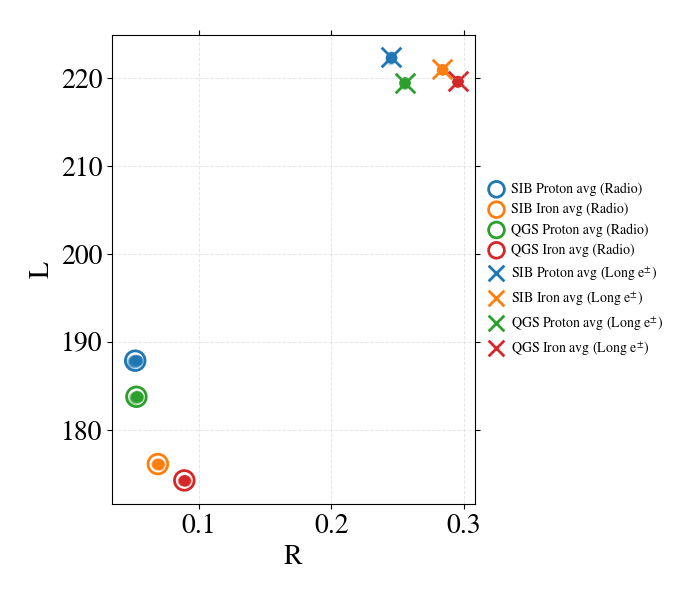
图注：Shape parameters $(R,L)$ derived from GH fits to average normalized profiles. Open circles: radio-derived; crosses: \textit{Long~$e^{\pm}$}. Proton (blue/green) and iron (orange/red) datasets are clearly separated. The cloud of points within the open circles and overlapping the crosses represents the distribution of shape parameters obtained from the same dataset (indicated by color), where each point is computed by removing a different event from the dataset before averaging.
对应解读：建议重点查看的图表第5、6项；关键图表逐图导读图4、图5、图6；模型拟合中关于(R,L)形状参数分离度的讨论。
入选理由：这是全文最直接支撑核心结论的图：在同一(R,L)参数平面中同时给出射电干涉导出的结果和Long e±荧光等效剖面结果，并区分质子、铁以及不同强子模型。它能直接检验日报强调的误差云、质量分离、强子模型分离以及射电相对荧光等效剖面的增益。
来源与置信度：\(arxiv_source\)；high；\(arxiv_source\) / article.tex:figure[6]
Fig04
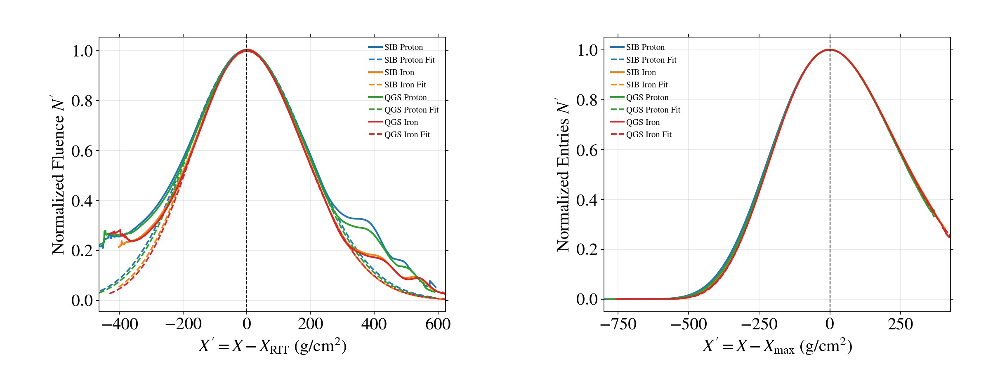
图注：Normalized average profiles for all datasets, extracted with RIT (top) and \textit{Long~e$^{\pm}$} (bottom), along with their respective GH fits.
对应解读：建议重点查看的图表第3、6项；关键图表逐图导读图3、图6；模型拟合中关于平均USP与GH拟合的段落。
入选理由：该图展示所有数据集的归一化平均剖面，并分别比较RIT射电重建与Long e±剖面及其GH拟合，是判断平均USP是否在峰前、峰后和峰附近都一致的关键图。它比单个事件图更能支撑论文关于平均剖面和模型区分能力的主要论点。
来源与置信度：\(arxiv_source\)；high；\(arxiv_source\) / article.tex:figure[4]
Fig02
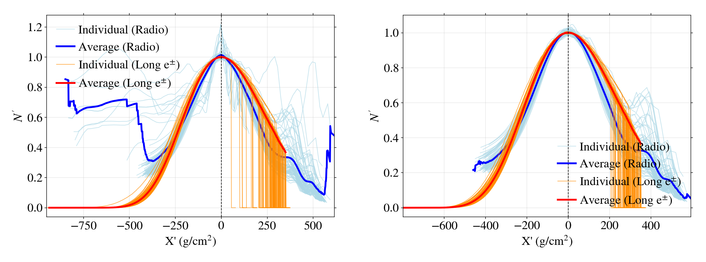
图注：Average USP for $e^\pm$ and the reconstructed longitudinal patterns of the coherent radio emission. In the top panel, for the individual events (light blue) and the average profile (blue) without applying cuts, in the bottom, after cuts. In orange the individual longitudinal distributions of electrons and positrons directly extracted from ZHAireS, \textit{Long~e$^{\pm}$} and in red their average.
对应解读：建议重点查看的图表第2、3项；关键图表逐图导读图2、图3；详细解读中关于从射电干涉纵向模式恢复平均USP的说明。
入选理由：该图同时给出单事件RIT纵向模式、平均RIT剖面、ZHAireS直接提取的Long e±分布及cut前后对比，最适合说明射电干涉重建量如何对应真实电子-正电子纵向剖面，并能检查cuts对平均剖面形状的影响。
来源与置信度：\(arxiv_source\)；high；\(arxiv_source\) / article.tex:figure[2]
Fig03
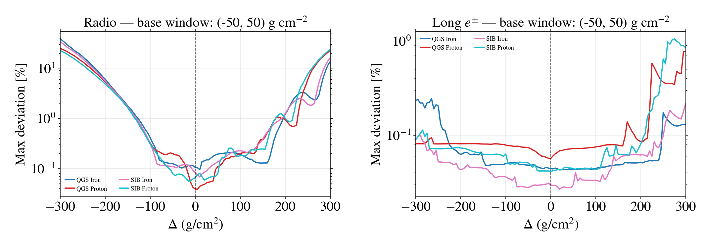
图注：Maximum difference between the RIT-derived average profile and its corresponding GH fit (top), and between the average \textit{Long~e$^{\pm}$} profile and its corresponding GH fit (bottom), within the fit window defined, in each branch, as [-50, $\Delta$]~g\,cm$^{-2}$ for $\Delta > 0$ and [$\Delta$, 50]~g\,cm$^{-2}$ for $\Delta < 0$, for the analyzed datasets.
对应解读：建议重点查看的图表第4项；模型拟合中关于GH/USP拟合残差、系统性偏离和拟合窗口的讨论。
入选理由：该图量化RIT平均剖面与GH拟合、Long e±平均剖面与GH拟合之间的最大差异，并按拟合窗口位置展示，是评估GH形状是否足够、残差是否在峰前或峰后系统增大的核心诊断图。
来源与置信度：\(arxiv_source\)；high；\(arxiv_source\) / article.tex:figure[3]
Fig09
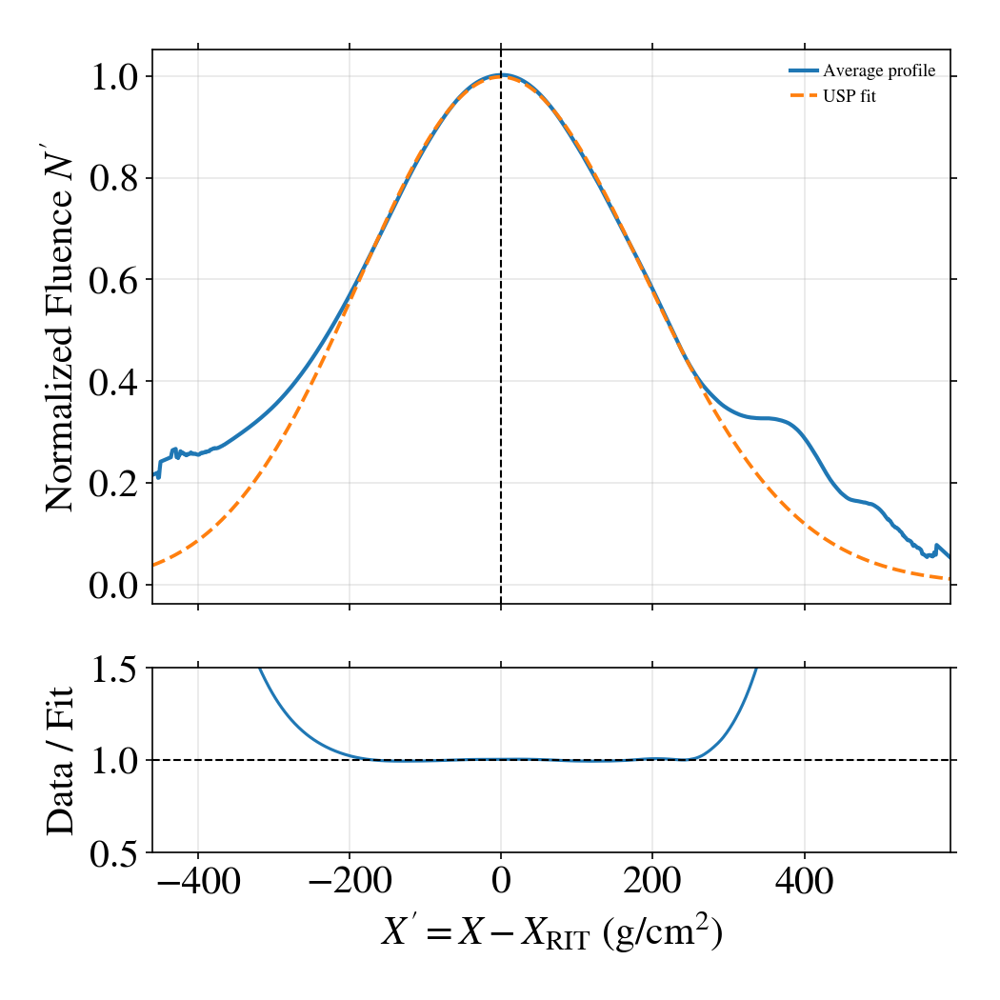
图注：RIT-derived average profile, applied fit to Eq.\,(\ref{eq:Gaisser-Hillas}), and ratio between them for the \(\textit{SIB Proton}\) dataset and zenith angle $\theta=30^\circ$.
对应解读：建议重点查看的图表第4项；关键图表逐图导读图3；模型拟合中关于残差诊断和峰前/峰后偏差的说明。
入选理由：该图针对SIB Proton、30度天顶角数据集给出RIT平均剖面、GH拟合和二者比值，提供比Fig03更直观的逐深度残差/比值诊断，适合嵌入日报中说明拟合质量是否只在峰值附近成立。
来源与置信度：\(arxiv_source\)；high；\(arxiv_source\) / article.tex:figure[9]
Fig01
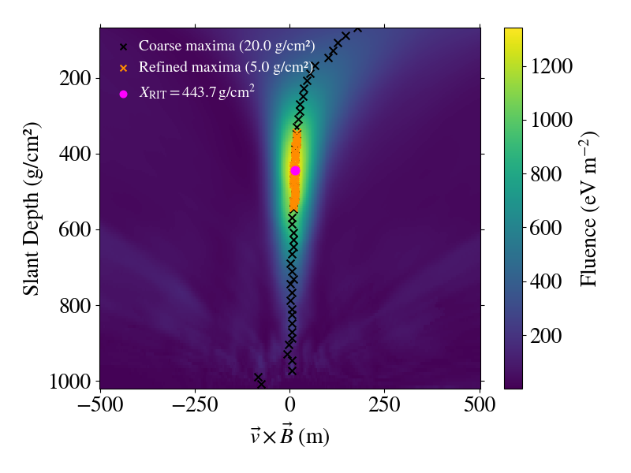
图注：Coherence fluence map in the 2-dimensional plane corresponding to the depth along the shower axis and the direction $\vec{v}\times \vec{B}$ with $\vec{v}$ parallel to the shower axis. The map is obtained for a $1\,$EeV proton-induced shower at $30^\circ$ zenith and $45^\circ$ azimuth simulated with SIBYLL 2.3d hadronic interaction model.
对应解读：建议重点查看的图表第1、2项；关键图表逐图导读图1、图2；详细解读中关于射电干涉扫描和候选发射深度映射的说明。
入选理由：该图是二维相干fluence图，坐标包含沿簇射轴深度和v×B方向，能直观展示射电干涉如何在纵向深度上定位相干辐射区域。虽然不是完整流程图，但它最接近日报要求读者理解的干涉成像几何和深度响应。
来源与置信度：\(arxiv_source\)；high；\(arxiv_source\) / article.tex:figure[1]
强相关工作
这篇工作处在三条研究线的交汇处。第一条是空气簇射纵向剖面与成分分析，经典工作使用荧光望远镜测量 \(X_{\rm max}\) 及其涨落，并与 CORSIKA、CONEX 等模拟和 EPOS-LHC、QGSJet、Sibyll 等强子模型比较。第二条是射电探测空气簇射，LOFAR、AERA、Tunka-Rex、CODALEMA、SKA-low 原型研究已经证明射电足迹和波形可精确约束几何与 \(X_{\rm max}\)。第三条是用干涉或波束形成方法恢复三维发射结构，这比传统 lateral distribution function 拟合更接近成像反演问题。
与已有工作相比，本文的新意不在于首次提出 Gaisser-Hillas 剖面，也不在于首次用射电测 \(X_{\rm max}\)，而在于把“平均普适剖面形状”作为射电干涉的目标量，并比较它对质量和强子模型的分离能力。应检索的关键词包括 “radio detection extensive air showers interferometry”, “universal shower profile Gaisser-Hillas \(R\) \(L\)”, “LOFAR air shower \(X_{\rm max}\) radio”, “AERA radio air shower composition”, “hadronic interaction models air shower longitudinal profile”。相反或张力方向的文献主要会质疑射电响应是否能无偏地恢复能量沉积剖面，以及模拟系统误差是否小于模型间差异。
相似工作：
- https://arxiv.org/abs/2605.15762
- https://arxiv.org/abs/1408.7001
- https://arxiv.org/abs/1603.05266
- https://arxiv.org/abs/1803.09679
基础理论 / 方法工作：
- https://doi.org/10.1146/annurev.nucl.51.101701.132507
- https://doi.org/10.1016/j.astropartphys.2010.08.005
- https://doi.org/10.1016/j.astropartphys.2013.06.003
- https://arxiv.org/abs/astro-ph/0412347
相反观点 / 张力线索：
- https://arxiv.org/abs/1307.5059
- https://arxiv.org/abs/1901.10410
8. Magnetic Turbulence Boosts Supernova Signals of Axion-Photon Conversion
- 来源：arXiv / astro-ph.HE
- 链接：https://arxiv.org/abs/2605.15261v1
- 作者：Damiano F. G. Fiorillo, Ángel Gil Muyor, Georg G. Raffelt, Edoardo Vitagliano
- 评分：novelty 8/10，importance 8/10，relevance 8/10，final 9.00/10
- 推荐理由：研究超新星轴子-光子转换伽马射线信号中湍磁场的影响，显著改进SN1987A类约束；涉及伽马射线信号和高能新物理天体约束，值得保留。
中文题目：磁湍流如何增强超新星轴子—光子转换信号
做了什么：这篇论文重新评估了超新星轴子在到达地球途中被磁场转换成伽马射线的概率，重点不再只看银河系和大麦哲伦云的大尺度相干磁场，而是把小尺度湍流磁场的功率谱也纳入计算。作者指出，湍流磁场不仅能提高轴子—光子转换率，还能把搜索灵敏度扩展到更大的轴子质量区间。以超新星 1987A 为例，这会使基于“中微子到达时没有伴随伽马暴发”得到的约束在某些质量范围内增强，耦合组合 \(g_{ap} g_{a\gamma}\) 的限制最多可改善约两个数量级。
为什么重要：超新星 1987A 一直是轻轴子和类轴子粒子约束的经典实验室，但传统分析通常把磁场简化为相干大尺度模型。本文的重要性在于指出：对有质量的轴子，真正决定转换效率的不是只有总磁场强度，而是磁场在与振荡相位匹配的小尺度波数上的功率。也就是说，过去被视为“噪声”或次要修正的磁湍流，可能正是提高质量覆盖范围的关键物理成分。
理论 / 观测 / 仪器方法价值：理论上，这项工作把轴子—光子混合问题与星际磁湍流功率谱直接连接起来，澄清了相干场近似的适用边界。观测上，它改写了如何从超新星伽马射线非探测结果推导 \(g_{ap} g_{a\gamma}\) 或 \(g_{a\gamma}\) 约束的流程。方法上，它提醒所有依赖外部磁场转换的轴子搜索——包括星暴星系、星系团、银河系晕或近源环境——都需要认真处理湍流磁场的谱结构和不确定性。
为什么应该关注：如果你关心轴子暗物质、超新星新物理、伽马射线瞬变或星际磁场，这篇文章都值得看。它不是简单把已有约束画得更低，而是指出一个物理上可检验、也可能带来系统误差的环节：磁场小尺度功率。未来银河系磁场模型、法拉第旋转测量、偏振巡天和下一次近邻超新星的伽马射线响应，都可能直接影响这类粒子物理约束的可信度。
展开详细解读：文章讲解、背景、理论、重点章节、图表与相关工作
文章详细讲解
科学问题：超新星核心坍缩会产生大量热轴子，若轴子与光子有耦合 \(g_{a\gamma}\)，这些轴子在传播经过磁场时可转换为 \(\gamma\) 射线。超新星 1987A 的中微子信号已被探测到，但没有看到同时到达的强伽马射线信号，因此长期以来被用来约束轴子—核子耦合与轴子—光子耦合的乘积 \(g_{ap} g_{a\gamma}\)。传统分析通常采用银河系大尺度相干磁场，认为转换在大尺度磁场中发生。本文问的是：如果真实磁场包含显著湍流分量，尤其在较小尺度上有非零功率，那么超新星轴子转换概率和质量覆盖范围会怎样改变？
作者怎么做：论文把轴子—光子传播写成沿视线的一维混合问题，并把横向磁场分解为相干分量和随机湍流分量。核心思想是：当轴子具有质量 \(m_a\) 时，轴子与光子的相位失配由 \(m_a^2/(2E)\) 控制；转换振幅等价于沿视线对 \(B_T(s)\) 乘以振荡相位的傅里叶积分。因此，在给定能量 \(E\) 和质量 \(m_a\) 下，真正高效的是磁场功率谱在波数 \(k\simeq m_a^2/(2E)\) 附近的部分。作者将银河系和大麦哲伦云的湍流磁场模型加入超新星 1987A 的几何路径，并与过去只用相干银河磁场的约束作比较。
关键结果：湍流磁场能显著增强转换概率，尤其是在相干场由于相位抵消而失效的较大 \(m_a\) 区间。对近似无质量或极轻轴子，大尺度相干场已经很有效，湍流带来的提升较有限；但当振荡长度缩短到与湍流相关尺度相当时，小尺度磁场功率可恢复转换效率。论文称银河系和大麦哲伦云的湍流分量能把 \(g_{ap} g_{a\gamma}\) 约束改善最多约两个数量级，并将灵敏区推向更高质量。这个结论也意味着，若只采用光滑磁场模型，可能系统性低估超新星伽马射线非探测的排除能力。
局限和下一步：最大不确定性来自湍流磁场的实际三维功率谱、相关长度、归一化、间歇性以及在大麦哲伦云中的分布。小尺度磁场不是直接观测量，而是由法拉第旋转、同步辐射、偏振和星际介质模型间接约束，因此结果应理解为依赖磁场先验的粒子物理约束。下一步自然包括：用更多银河磁场模型和大麦哲伦云磁场模型做边际化；把湍流的非高斯性和各向异性纳入不确定度；重新评估星暴星系、星系团、银河中心等转换场景；并为下一次近邻超新星建立实时多波段伽马射线响应和粒子物理解释框架。
背景知识
研究对象是轴子或类轴子粒子。它们可能源自强 \(CP\) 问题的 Peccei-Quinn 机制，也可能是更一般的轻赝标量粒子。只要存在轴子—光子耦合 \(g_{a\gamma}\)，外磁场就会使轴子和光子发生混合；如果还存在轴子—质子或轴子—核子耦合 \(g_{ap}\)，核心坍缩超新星会通过核子轫致辐射等过程产生大量轴子。超新星于是同时提供“源”和“探测转换区”：源端决定轴子通量，传播路径磁场决定有多少轴子变成可观测的 \(\gamma\) 射线。
超新星 1987A 的历史地位很特殊。它在大麦哲伦云中爆发，距离约 \(50\) kpc，并留下了少量但极其关键的中微子事件。若核心坍缩同时发出大量轴子，轴子以近光速到达地球附近；在大麦哲伦云、银河系和可能的中间介质磁场中，部分轴子可转换为几十到数百 MeV 甚至更高能段的伽马射线。由于当时伽马射线探测器没有看到与中微子时间一致的显著信号，研究者长期用这一事实约束 \(g_{ap} g_{a\gamma}\) 以及在给定轴子产额假设下的 \(g_{a\gamma}\)。
历史上，这类约束往往强调相干磁场：沿视线若有一个方向较稳定、尺度足够长的横向磁场 \(B_T\)，则轻轴子可相干积累转换振幅。但真实银河磁场不是平滑的。它包含螺旋臂尺度的规则场、随机湍流场、局部泡结构、晕场和小尺度间歇结构。对于电磁传播、宇宙线输运和法拉第旋转而言，湍流磁场早已是核心成分；只是对轴子转换而言，过去常被当成平均后不重要的随机项。
现在值得重新看的原因，是轴子质量改变了转换的相干条件。质量越大，相位失配越快，大尺度平滑场的贡献会因正负相位抵消而衰减；但如果磁场本身在相应小尺度上有功率，它就能补偿这种相位失配。换句话说，湍流不是简单增加 \(B^2\) 的背景噪声，而是提供了与轴子振荡波数匹配的傅里叶模式。这种观点把粒子物理质量扫描与星际介质磁湍流谱直接联系起来。
一个常见误区是把“随机场平均为零”理解成“随机场对转换没有贡献”。对振幅平均确实可能为零，但观测概率与振幅平方相关，因而与磁场二点关联函数或功率谱相关。另一个误区是只用总均方磁场 \(\langle B^2\rangle\) 判断转换强弱；实际上对于给定 \(m_a\) 和 \(E\)，关键是 \(B_T\) 在特定波数附近的谱功率。还有一个误区是把超新星 1987A 约束视为完全由粒子物理决定；本文强调，天体磁场系统误差同样能显著移动排除曲线。
基础理论 / 方法脉络
基本物理图像是二能级混合。轴子 \(a\) 与平行于外磁场横向分量的光子偏振态 \(\gamma\) 在外磁场中耦合，耦合强度由 \(g_{a\gamma} B_T\) 给出。若轴子从超新星出发，在传播途中穿过磁化等离子体，轴子态和光子态会随距离振荡。这个过程与中微子振荡在数学上相似，但混合项由磁场控制，光子有效质量由等离子体频率和吸收决定，轴子相位由 \(m_a\) 控制。
在弱混合极限下，轴子到光子的转换概率可看成转换振幅的平方。转换振幅是沿路径对 \(B_T(s)\) 的相干积分，并带有相位因子 \(\exp(i\Delta s)\)，其中 \(\Delta\) 近似由 \((m_a^2-m_\gamma^2)/(2E)\) 给出。若 \(\Delta L\ll 1\)，长度 \(L\) 内的磁场贡献同相叠加，概率随 \(L^2\) 增长；若 \(\Delta L\gg 1\)，光滑磁场的贡献会被振荡相位抵消。
本文的关键假设是把真实磁场分解为相干场和湍流场。相干场在大尺度上可由银河磁场模型给出，而湍流场用统计功率谱描述，例如在一定惯性区间内近似 Kolmogorov 型谱。随机场的平均值可能为零，但其二点相关函数不为零；转换概率的统计平均正好依赖这个二点相关函数的傅里叶变换。因此，轴子质量和能量选择了一个“被探测”的磁场波数。
对观测而言，源端轴子通量取决于超新星核心温度、密度、核子相互作用和 \(g_{ap}\)。传播端转换概率取决于 \(g_{a\gamma}\)、磁场几何、等离子体频率、吸收和路径长度。最终伽马射线通量近似是轴子通量乘以转换概率，再与探测器有效面积、能量响应和时间窗卷积。SN 1987A 的非探测约束本质上就是要求预期伽马事件数不超过观测上限。
主要退化关系也很清楚：源端 \(g_{ap}\) 增大可提高轴子产额，传播端 \(g_{a\gamma}\) 增大可提高转换概率，所以非探测首先限制组合 \(g_{ap} g_{a\gamma}\)。磁场强度、相关长度和湍流谱斜率会与 \(g_{a\gamma}\) 退化；超新星核心模型会与 \(g_{ap}\) 退化；等离子体频率和吸收则会在低能或高柱密度环境中改变相干条件。本文的价值正是在这些退化中单独强调了湍流谱功率这一过去常被压缩掉的维度。
公式与推导
第一步，从轴子—光子相互作用拉氏量出发：
这里 \(a\) 是轴子场，\(F_{\mu\nu}\) 是电磁场张量，\(\tilde{F}^{\mu\nu}\) 是其对偶张量，\(\mathbf{E}\) 是传播光子的电场，\(\mathbf{B}\) 是外部磁场。只有垂直于传播方向且与光子偏振匹配的磁场分量 \(B_T\) 进入混合。
第二步，在相对论近似和短波近似下，沿路径坐标 \(s\) 的传播方程可写为二能级薛定谔形式：
其中 \(A_\parallel\) 是与 \(B_T\) 平行的光子偏振振幅，\(\Gamma_\gamma\) 表示吸收率，\(\Delta_{a\gamma}=g_{a\gamma}B_T/2\)，\(\Delta_a=-m_a^2/(2E)\)，\(\Delta_\gamma=-m_\gamma^2/(2E)\)。在许多 MeV 伽马传播情形下，吸收和等离子体项可作为修正处理。
第三步，定义相位失配量：
这里 \(E\) 是轴子或光子的能量，\(m_\gamma\) 是等离子体赋予光子的有效质量。若 \(|q|^{-1}\) 大于磁场尺度，转换近似相干；若 \(|q|^{-1}\) 很短，光滑场贡献会被相位平均掉。
第四步，在弱混合极限 \(P_{a\to\gamma}\ll 1\) 下，一阶微扰给出转换振幅：
若 \(q\) 近似常数，这就是 \(B_T(s)\)
) 在波数 \(q\) 处的傅里叶分量。这个式子是理解本文的核心：轴子质量通过 \(q\) 选择磁场谱中的尺度。
第五步，转换概率为振幅平方：
对于均匀磁场 \(B_T=B_0\)，可得熟悉的相干结果：
其中 \(\mathrm{sinc}(x)=\sin x/x\)。当 \(|q|L\ll 1\) 时概率随 \(L^2\) 增长；当 \(|q|L\gg 1\) 时，相干场贡献被 \(\mathrm{sinc}^2\) 压低。
第六步，对零均值湍流磁场取统计平均，概率可写成二点相关函数形式：
若湍流近似平稳，令 \(\xi=s-s'\)，相关函数 \(C_B(\xi)=\langle B_T(s)B_T(s+\xi)\rangle\)，长路径极限下有
这个积分就是一维磁场功率谱 \(P_B^{1\mathrm{D}}(q)\)，说明转换概率正比于磁场在 \(q\) 处的谱功率。
第七步，用功率谱记号可简写为
这就是湍流增强较大质量灵敏度的定量图像：较大的 \(m_a\) 对应较大的 \(k\)，只要湍流在该 \(k\) 上仍有功率，转换就不会像纯相干场那样迅速消失。
第八步，超新星轴子到达地球的光子通量近似为
而源端轴子通量在弱耦合区通常满足标度
其中 \(D\) 是超新星距离，\(dN_a/dE\) 包含核心坍缩模型给出的热谱形状。因此预期伽马通量大致随 \(g_{ap}^2g_{a\gamma}^2\) 增长。
第九步，与非探测数据比较时，预期事件数可写为
其中 \(A_{\mathrm{eff}}\) 是探测器有效面积，\(\Delta t\) 是与中微子信号相关的时间窗，\(b\) 是背景期望。若观测到 \(n\) 个事件，常用 Poisson 似然
由此可给出 \(g_{ap}g_{a\gamma}\) 或 \(g_{a\gamma}\) 的上限；本文的物理改变主要进入 \(P_{a\to\gamma}\)，从而移动耦合约束曲线。
模型拟合 / 应用方法
这类工作拟合或约束的核心量不是一个单一光谱参数，而是一条由粒子参数和天体磁场参数共同决定的排除曲线。粒子侧包括 \(m_a\)、\(g_{a\gamma}\) 和 \(g_{ap}\)；源模型侧包括超新星核心温度、密度、持续时间和轴子发射谱；传播侧包括银河系与大麦哲伦云的相干磁场、湍流均方强度、外尺度、内尺度、谱指数、路径几何和等离子体环境。非探测约束通常是在给定磁场与超新星模型下，寻找使预期伽马事件数超过观测上限的耦合值。
似然层面，SN 1987A 的信息主要来自“在中微子时间窗附近没有显著伽马射线超额”。如果使用计数实验近似，可用 Poisson 似然或置信上限构造排除；若使用具体探测器数据，则需把轴子转换后的伽马谱与能量响应、角响应、有效面积和死时间卷积。残差诊断不只是看总事件数，还应看时间窗、能段和方向一致性。对这篇论文而言，主要变化是传播概率的计算，因此读者应关注作者如何把湍流场的统计平均或 realizations 转换为能量依赖的 \(P_{a\to\gamma}(E,m_a)\)。
主要退化关系包括：\(g_{ap}\) 与超新星核心发射效率退化，\(g_{a\gamma}\) 与磁场强度退化，\(m_a\) 与湍流谱波数退化，湍流外尺度和谱指数与高质量端灵敏度退化。若湍流场的 \(P_B(k)\) 在目标波数上被高估，则会把 \(g_{a\gamma}\) 上限推得过强；若大麦哲伦云磁场结构被低估，则可能漏掉重要近源转换。对专业读者来说，最该检查的是作者是否只展示某个基准磁场模型，还是对合理磁场先验做了范围扫描。
模型可能失效的地方也值得明确。弱混合近似在较大耦合或强磁场下可能不再足够；随机场若具有强间歇性，二点功率谱可能不能完整描述转换概率分布；等离子体频率、吸收和磁场方向变化若与湍流相关，简单平稳各向同性湍流模型会失真。此外，SN 1987A 的历史伽马数据本身有能量覆盖、时间覆盖和背景建模限制，不能等同于现代伽马射线望远镜的理想非探测。
实际应用上，本文提供了一套可迁移的方法：对于任何“轴子在源端产生、在磁场中转换”的搜索，都应把磁场功率谱映射到 \(m_a\) 和 \(E\) 的灵敏度窗口。星暴星系、活动星系核喷流、星系团、银河中心以及未来近邻超新星都可按相同逻辑重新评估。模型拟合的最佳实践应是把磁场参数作为 nuisance parameters，和粒子参数一起边际化，而不是固定一个光滑场后给出单一排除线。
重点章节 / 结果段落怎么读
-
引言和问题设定：读者应先看作者如何回顾 SN 1987A 轴子约束，以及他们认为传统相干银河磁场处理遗漏了什么。这里的重点不是超新星轴子产生机制本身，而是质量较大时相干转换为什么会失效，以及湍流为什么可能恢复灵敏度。
-
轴子—光子转换形式主义：这一部分应重点读传播方程、弱混合近似、相干场和湍流场的分解方式。尤其要检查作者如何把转换概率写成磁场傅里叶功率或相关函数的形式，因为这是整篇文章从直觉到定量结论的桥梁。
-
磁场模型：建议仔细看银河系湍流磁场和大麦哲伦云磁场的参数选择，包括均方强度、相关长度、外尺度、内尺度和谱指数。若论文给出不同模型或不确定度范围，应比较它们对排除曲线的影响，而不是只看最乐观结果。
-
SN 1987A 约束重算：这一部分通常会给出在不同磁场假设下的 \(P_{a\to\gamma}\)、伽马通量或耦合上限。读者应检查湍流增强出现在什么 \(m_a\) 范围、增强幅度是否能达到两个数量级，以及低质量端是否仍由相干场主导。
-
讨论和外推：最后应关注作者如何评价对其他转换场所的影响，例如星暴星系。这里的关键是方法论外推是否合理：不同天体的磁场强度、湍流尺度、路径长度和吸收环境差别很大，不能简单把 SN 1987A 的增强因子复制过去。
建议重点查看的图表
-
转换概率随 \(m_a\) 或 \(E\) 的曲线：应看相干场、湍流场、银河系和大麦哲伦云贡献是否分开展示；最关键的是湍流在高 \(m_a\) 端是否形成平台或减缓下降。
-
磁场功率谱或相关长度诊断：应看作者采用的湍流谱在目标波数范围内是否有足够功率，以及外尺度、内尺度截断如何影响轴子质量覆盖。
-
\(g_{ap} g_{a\gamma}\) 对 \(m_a\) 的排除图：应比较本文曲线与传统相干场约束的相对位置，确认“最多两个数量级”发生在哪个质量区间，而不是全质量范围都成立。
-
银河系与大麦哲伦云贡献分解图：应检查近源大麦哲伦云湍流是否在某些质量段主导，还是银河系路径长度更重要。两者的相对作用决定了磁场系统误差来源。
-
参数变化或稳健性图：如果有不同湍流强度、谱指数、相关长度的曲线，应看约束曲线的带宽。这比单条最佳曲线更能说明结论可信度。
-
预期伽马信号谱或事件数上限表：应看伽马能段中哪些能量最贡献约束，因为 \(q\simeq m_a^2/(2E)\) 意味着能量和质量覆盖相互耦合。
关键图表逐图导读
图 1：如果论文首先展示物理示意图或路径图，横向应理解为从大麦哲伦云中的 SN 1987A 到地球的传播路径，标出大麦哲伦云磁场、银河系磁场和可能的湍流区域。读图时不要把箭头长度误认为真实路径比例；关键是哪些区域被计入转换概率，以及相干场和湍流场是否分开处理。
图 2：若图中给出磁场功率谱，横轴通常是波数 \(k\) 或尺度 \(\ell\sim 1/k\)，纵轴是磁场功率或等价的 \(kP_B(k)\)。模型线可能对应不同湍流谱指数、外尺度或归一化。读图陷阱是只看总 \(\langle B^2\rangle\)，而忽略与 \(k\simeq m_a^2/(2E)\) 匹配的局部谱功率；对轴子转换而言，局部波数上的功率才最直接。
图 3：转换概率 \(P_{a\to\gamma}\) 对 \(m_a\) 的图通常是本文最关键诊断之一。横轴为 \(m_a\)，纵轴为转换概率或相对增强因子，曲线可能分为相干银河场、银河湍流、大麦哲伦云湍流和总和。应看低质量端是否与传统相干结果一致，高质量端是否因湍流而延伸；若曲线有振荡或尖峰，要判断是单一 realization 的相位效应还是统计平均后的稳健特征。
图 4：耦合约束图通常以 \(m_a\) 为横轴、\(g_{ap}g_{a\gamma}\) 或 \(g_{a\gamma}\) 为纵轴。数据点一般不是直接观测点，而是由非探测上限换算出的排除边界；模型线越低表示约束越强。读图时要注意坐标多为对数尺度，两个数量级改善在图上对应明显的纵向位移；同时应检查是否有阴影带表示磁场不确定度。
图 5：如果有银河系和大麦哲伦云分项贡献图，应看每条曲线在哪些 \(m_a\) 区间占优。银河系路径长但磁场模型复杂，大麦哲伦云靠近源但结构不确定；两者相加不是简单线性加概率，若相位相关或统计处理不同，可能影响总转换概率。读图陷阱是把某一区域的强贡献误解为普遍主导。
图 6：稳健性检验或参数扫描图应关注湍流外尺度、内尺度、谱指数和均方磁场变化带来的约束带宽。若带宽接近或超过所谓增强幅度，就说明结论仍受磁场先验限制；若所有合理模型都显示高质量端显著增强，则本文的主张更稳健。
论文原图 / 可嵌入图片
Fig01
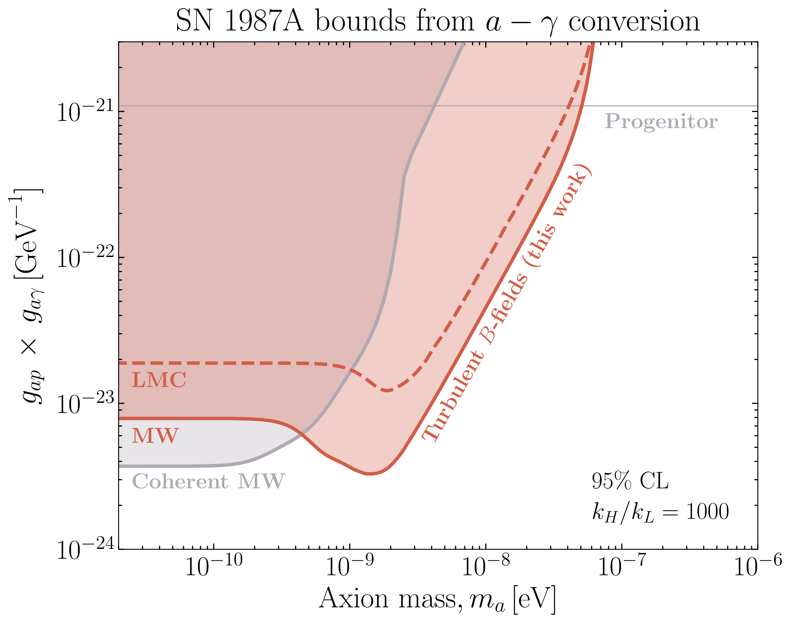
图注：New constraints (red) on $g_{ap}\times g_{a\gamma}$ from non-detection of SN~1987A gamma rays. We assume $np\to npa$ bremsstrahlung production and $a\to\gamma$ conversion in the turbulent $B$-fields of the MW and LMC with $k_H/k_L=1000$ for the ratio of high and low turbulence scales. In gray, we show previous SN~1987A constraints from conversions in the coherent MW field and in the putative dipole field of Sanduleak $-69\,202$, the progenitor of SN~1987A (assumed radius $30\, R_\odot$ and surface magnetic field $30\, \mathrm{G}$)~\(\cite{Fiorillo:2025gnd}.\) The main competing bounds ($g_{ap}\times g_{a\gamma}\lesssim 2\times 10^{-21}\,\rm GeV^{-1}$) come from a magnetic white dwarf with a particularly low linear polarization signal amplitude~\(\cite{Benabou:2025jcv}.\)
对应解读：建议重点查看的图表第3项；关键图表逐图导读图4；模型拟合段落中的非探测上限换算为排除曲线。
入选理由：这是全文最核心的约束结果图，直接给出湍流银河系与大麦哲伦云磁场导致的SN 1987A对\(g_{ap}\times g_{a\gamma}\)的新排除曲线，并与传统相干银河场和其他竞争约束比较。它最能验证日报中“最多两个数量级改善”究竟发生在哪些\(m_a\)区间。
来源与置信度：\(arxiv_source\)；high；\(arxiv_source\) / main-v6.tex:figure[1]
Fig02
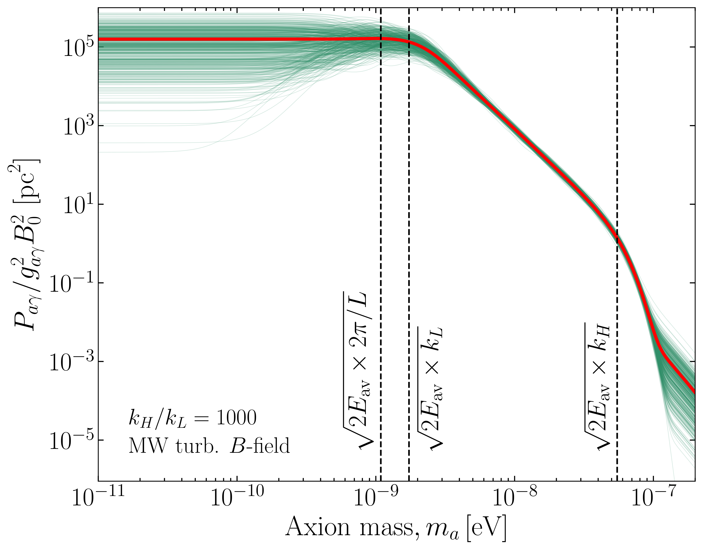
图注：Representative Monte Carlo results for $P_{a\gamma}$, the $a$--$\gamma$ conversion probability, for 500 of our $10^4$ realizations, using the bremsstrahlung spectral axion flux. The red line is $\langle P_{a\gamma}\rangle$. Vertical lines indicate the characteristic axion masses at which a typical $k_a$ (evaluated at $E=E_{\rm av}$) is comparable to the inverse of the length, $L$, of the conversion region, the injection scale $k_L$, or the dissipation scale of turbulence~$k_H$.
对应解读：建议重点查看的图表第1、2、4项；关键图表逐图导读图3；模型拟合段落中关于\(P_{a\to\gamma}(E,m_a)\)和湍流波数匹配的讨论。
入选理由：该图展示500个湍流磁场realizations下的转换概率\(P_{a\gamma}\)，并标出转换区长度、湍流注入尺度和耗散尺度对应的特征质量，是理解湍流为何在高质量端增强转换的关键诊断图。相比单纯约束曲线，它直接揭示\(k_a\simeq m_a^2/(2E)\)与磁场功率谱尺度匹配的物理机制。
来源与置信度：\(arxiv_source\)；high；\(arxiv_source\) / main-v6.tex:figure[2]
Fig06
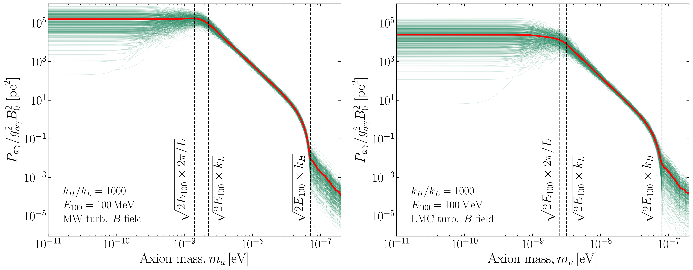
图注：Same as Fig.~\(\ref{fig:mc}\) of the main text, but integrating the bremsstrahlung axion spectrum only in the 25--$100\, \mathrm{MeV}$ energy range observedby SMM, instead of the whole energy spectrum, for the MW (\textit{left panel}) and LMC (\textit{right panel}) turbulent $B$-fields. We use the values reported in Table~\(\ref{tab:Bfields}\) for the strength of the $B$-fields and in Table~\(\ref{tab:Fluxes}\) for the bremsstrahlung emission.
对应解读：建议重点查看的图表第1、4、6项；关键图表逐图导读图5；模型拟合段落中关于SMM 25--100 MeV能段和银河系/大麦哲伦云分项贡献的讨论。
入选理由：该图把转换概率限制在实际SMM观测的25--100 MeV能窗内，并分为MW与LMC左右面板，有助于判断伽马观测能段如何影响质量覆盖，以及银河系和大麦哲伦云湍流贡献在哪些质量区间更重要。
来源与置信度：\(arxiv_source\)；high；\(arxiv_source\) / main-v6.tex:figure[6]
Fig04
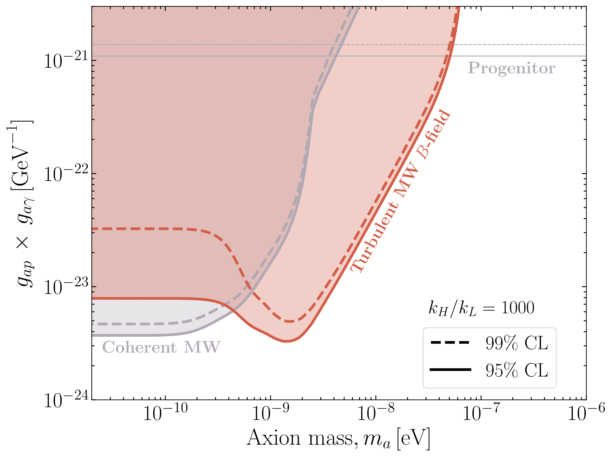
图注：Like Fig.~\(\ref{fig:BremssBounds},\) now only for the MW. We show the bounds for confidence levels 95\% and 99.73\%. The impact of the uncertain $B$-field configuration along the LoS for turbulent fields is only strong in the massless limit.
对应解读：建议重点查看的图表第3、5项；关键图表逐图导读图6；模型拟合段落中关于磁场构型不确定性和置信水平的讨论。
入选理由：该图是仅考虑银河系湍流场时的约束，并展示95%与99.73%置信水平，能用于检查湍流磁场沿视线构型不确定度对排除曲线的影响。它比总约束图更适合评估银河系部分的系统误差和稳健性。
来源与置信度：\(arxiv_source\)；high；\(arxiv_source\) / main-v6.tex:figure[4]
Fig05
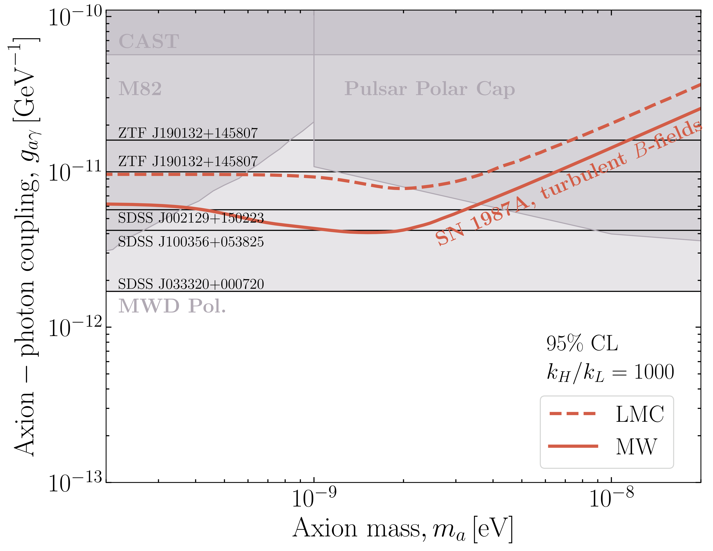
图注：Like Fig.~\(\ref{fig:BremssBounds},\) now for the axion-photon coupling $g_{a\gamma}$ alone, assuming production by Primakoff emission. Limits from other sources (grey shaded) are taken from the compilation of Ref.~\(\cite{OHare}\); specifically, we show bounds from M82~\(\cite{Ning:2024eky},\) CAST~\(\cite{CAST:2024eil},\) Pulsar Polar Cap \(\cite{Noordhuis:2022ljw},\) and different magnetic white dwarfs~\(\cite{Benabou:2025jcv}\) as indicated.
对应解读：建议重点查看的图表第3项；模型拟合段落中关于\(g_{a\gamma}\)单独约束和不同轴子产生机制的讨论。
入选理由：该图给出在Primakoff产生假设下对\(g_{a\gamma}\)单独的约束，并与M82、CAST、脉冲星极冠和磁白矮星等外部限制比较。虽然日报主线更强调\(g_{ap}g_{a\gamma}\)，但此图展示了同一湍流转换机制在另一类耦合约束中的影响。
来源与置信度：\(arxiv_source\)；high；\(arxiv_source\) / main-v6.tex:figure[5]
Fig07
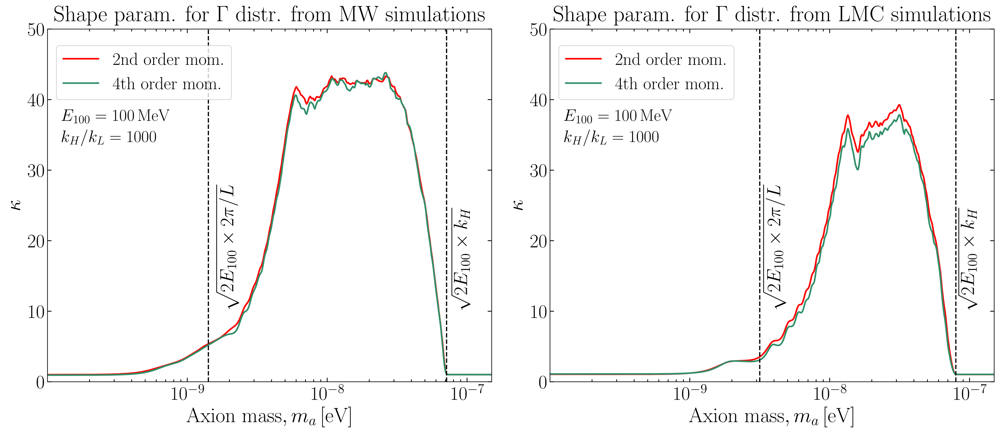
图注：Fits for the shape parameter $\kappa$ for the Gamma distribution in Eq.~\(\eqref{eq:GammaDistr}\) using the second (red) and fourth (green) central moments from our $10^4$ Monte Carlo realizations of the turbulent $B$-field in MW (\textit{left panel}) and LMC (\textit{right panel}), convolved with the normalized axion spectrum in the 25--$100\, \mathrm{MeV}$ SMM window. We use the parameters of Table~\(\ref{tab:Fluxes}\) for the bremsstrahlung production. For all cases, $\kappa$ tends to 1 for $k\ll \sqrt{2 E_{100}\times 2\pi/L}$ and $k\gg \sqrt{2 E_{100}\times k_H}$, with $E_{100}=100\, \mathrm{MeV}$.
对应解读：建议重点查看的图表第5项；模型拟合段落中关于湍流realizations统计分布、置信区间和nuisance参数处理的讨论。
入选理由：该图拟合湍流磁场Monte Carlo结果的Gamma分布形状参数\(\kappa\)，分别给出MW和LMC在SMM能窗内的统计行为。它不直接给出最终排除线，但对理解作者如何把随机湍流realizations转化为概率分布和置信约束很有价值。
来源与置信度：\(arxiv_source\)；high；\(arxiv_source\) / main-v6.tex:figure[7]
强相关工作
这篇工作与经典 SN 1987A 轴子约束直接相连。早期研究主要利用超新星冷却、中微子持续时间以及伴随伽马射线非探测来限制轴子耦合；后续工作不断更新超新星轴子产额、核物理输入和银河磁场模型。本文的区别是把转换端的磁湍流功率谱作为核心物理量，而不是只改进源端发射率或相干场几何。可检索关键词包括 “SN 1987A axion gamma ray constraint”, “axion photon conversion Galactic magnetic field”, “supernova axion ALP gamma rays”。
它也与更广泛的类轴子天体搜索有关，例如星系团中 \(\gamma\) 射线源的谱振荡、活动星系核和星暴星系中的轴子转换、银河系磁场中暗物质轴子衰变或转换。相反或张力方向主要来自磁场建模不确定性：若小尺度湍流谱、内尺度截断或大麦哲伦云磁场强度与作者基准不同，排除曲线可能明显变化。因此读者应同时检索 “turbulent magnetic fields axion photon mixing”, “Milky Way magnetic field ALP constraints”, “Large Magellanic Cloud magnetic field Faraday rotation”。
相似工作：
- https://arxiv.org/abs/2605.15261
- https://arxiv.org/abs/1410.3747
- https://arxiv.org/abs/2008.11741
基础理论 / 方法工作：
- https://doi.org/10.1103/PhysRevLett.38.1440
- https://doi.org/10.1103/PhysRevLett.40.279
- https://doi.org/10.1016/0370-2693(83)90669-8
- https://arxiv.org/abs/0807.3125
相反观点 / 张力线索：
- https://arxiv.org/abs/1210.7820
- https://arxiv.org/abs/1806.08265
9. Nucleosynthesis in the fast ejecta of a neutron star merger
- 来源：arXiv / astro-ph.HE
- 链接：https://arxiv.org/abs/2605.16132v1
- 作者：Lukas Schnabel, Stephan Rosswog, Friedrich-Karl Thielemann, Moritz Reichert
- 评分：novelty 7/10，importance 8/10，relevance 8/10，final 8.70/10
- 推荐理由：详细研究中子星并合快速抛射物中的自由中子存活与早期蓝色千新星前兆，对多信使暂现源和并合电磁对应体有较高价值。
中文题目：中子星并合高速抛射物中的核合成
做了什么：这篇论文研究中子星并合动力学抛射物中速度达到温和相对论范围、约 \(\gtrsim 0.6c\) 的少量高速物质如何进行 \(r\) 过程核合成，以及其中是否会留下未被俘获的自由中子。作者把参数化热力学轨迹和数值相对论并合轨迹输入核反应网络，发现高速抛射物的核合成可分成三个通道，其中一个通道能在主 \(r\) 过程冻结后保留可观自由中子。若自由中子质量分数超过约 \(0.05\)，\(\beta^-\) 衰变会在 \(\sim 100\) 到 \(\sim 10^4\) 秒主导放射性加热，产生早期蓝色千新星前兆；在合理参数下，ULTRASAT 可能在 \(\sim 200\,\mathrm{Mpc}\) 内探测到这种信号。
为什么重要：千新星早期数小时的颜色和光度直接连接到最外层、最快抛射物的成分和加热机制。自由中子前兆不是普通 \(r\) 过程余热的简单外推，而是对并合界面动力学、低 \(Y_e\) 潮汐抛射、膨胀时标和中子俘获冻结的敏感探针。它能把电磁观测中最早出现的蓝光与并合物质的微观核反应网络联系起来。
理论 / 观测 / 仪器方法价值：理论上，论文给出高速抛射物中自由中子存活的半解析判据，可作为核反应网络结果的简化解释和快速预报工具。观测上，它把自由中子质量分数与早期加热率、蓝色前兆亮度和 ULTRASAT 可探测距离联系起来。方法上，它提示不能只用平均速度或总抛射质量描述千新星，必须保留速度分层、电子分数 \(Y_e\)、熵和膨胀时标的联合分布。
为什么应该关注：如果未来引力波触发后的紫外/蓝光巡天在几十分钟到数小时内看到短暂前兆，这篇文章提供了判断其是否来自自由中子衰变的物理标尺。反过来，若在足够近的事件中没有看到前兆，也能约束高速低 \(Y_e\) 抛射物的质量、速度结构和并合类型，尤其是非对称双中子星并合或中子星—黑洞并合。
展开详细解读：文章讲解、背景、理论、重点章节、图表与相关工作
文章详细讲解
科学问题：中子星并合被认为是重 \(r\) 过程元素的重要来源，但通常讨论的是速度约 \(0.1c\) 到 \(0.3c\) 的主体抛射物。并合最外层还有一小部分物质可被冲击、潮汐剥离或界面动力学加速到温和相对论速度。由于这部分物质膨胀极快，中子俘获可能来不及把所有自由中子并入重核。问题是：在什么 \(Y_e\)、熵、速度和膨胀时标下，自由中子能在主 \(r\) 过程冻结后存活？这些中子衰变是否足以形成可观测的早期蓝色千新星前兆？
作者怎么做：论文用两类轨迹做核反应网络计算。一类是参数化轨迹，用来系统扫描速度、电子分数、熵和膨胀时间等控制量；另一类来自数值相对论并合模拟轨迹，用来检验在更真实的热力学历史中这些规律是否仍成立。网络计算追踪中子、种子核、重核以及放射性衰变随时间的演化，并特别关注主 \(r\) 过程冻结时的自由中子质量分数。作者还提出一个半解析模型，用膨胀时标和中子俘获积分来估算剩余自由中子，并与完整网络结果比较。
关键结果：高速抛射物中的核合成不是单一路径，而可分为三个通道。最重要的是，其中一个通道在主 \(r\) 过程结束后仍保留显著自由中子。当自由中子质量分数 \(X_n\) 大于约 \(0.05\) 时，中子 \(\beta^-\) 衰变在 \(\sim 100\) 到 \(\sim 10^4\) 秒期间超过常规 \(r\) 过程衰变加热，产生蓝色、早现、持续时间短的光变前兆。论文强调，低 \(Y_e\) 条件下即使速度没有极端高，自由中子也可能存活；这使得富含低 \(Y_e\) 潮汐抛射物的非对称双中子星并合和某些中子星—黑洞并合成为特别有利的前兆源。
局限和下一步：半解析模型抓住了核心物理，但仍依赖轨迹的热力学近似、核反应率、质量模型和抛射物速度—角度分布。早期光变还受辐射输运、非局域能量沉积、几何不对称、观测视角和外层不透明度影响。下一步需要把这类自由中子存活模型嵌入多维辐射输运，并与引力波参数估计、喷流/余辉污染和紫外巡天选择函数联合比较。对观测者来说，关键不只是寻找亮的前兆，还要用颜色演化和时间尺度区分自由中子衰变、冲击冷却、喷流茧和常规蓝千新星。
背景知识
研究对象是中子星并合的动力学抛射物。并合时，物质可通过潮汐尾、接触界面冲击、盘风和磁流体过程逃逸。不同通道产生的物质在速度、熵、电子分数 \(Y_e\) 和角分布上差异很大。主体动力学抛射物通常是快速但非相对论的，典型速度为 \(\sim 0.2c\)，而极少量外层物质可达到 \(\gtrsim 0.6c\)。这部分质量虽小，却位于最外层，扩散时间最短，因此最早控制电磁信号。
历史上，千新星建模多关注 \(r\) 过程衰变加热和镧系元素不透明度。GW170817 之后，蓝、红多成分千新星模型成为标准解释：较高 \(Y_e\) 的贫镧蓝成分较早出现，低 \(Y_e\) 的富镧红成分较晚出现。但最早 \(\lesssim\) 数小时的信号仍很难约束，因为大多数事件缺乏足够早的紫外/光学数据。自由中子前兆的想法正是针对这一窗口：如果最外层快抛射物中有中子未被俘获，其衰变能量会在光子扩散时间很短时释放，形成短促蓝光。
为什么现在值得重新看：一方面，数值相对论模拟能更好地解析高速尾部，核反应网络也能系统考察非平衡冻结；另一方面，ULTRASAT、宽场光学巡天和引力波第四、第五轮观测将显著提高早期跟进能力。过去把高速尾部视为质量太小、不影响总千新星的简化做法，在早期紫外/蓝光诊断面前不再充分。即使高速质量只有 \(10^{-6}\) 到 \(10^{-4}\,M_\odot\) 量级，也可能在早期时段决定光度。
该领域常见误区之一是把自由中子存活简单等同于“速度越快越容易留下中子”。速度和膨胀时标当然重要，但 \(Y_e\)、种子核形成效率、熵、温度历史和俘获率同样关键。另一个误区是把早期蓝光都归因于高 \(Y_e\) 风成分；自由中子前兆可以来自低 \(Y_e\) 且外层很快的物质，颜色蓝是因为扩散时间短和外层低不透明度，而不一定意味着整个抛射物高 \(Y_e\)。还有一个误区是认为小质量成分一定观测不到；对早期信号而言，位置在速度空间最外层比总质量更关键。
基础理论 / 方法脉络
从物理图像看，\(r\) 过程需要中子密度足够高，使中子俘获快于 \(\beta\) 衰变，原子核沿远离稳定线的路径增长。中子星并合天然给出低 \(Y_e\)、高密度中子富集物质，因此能合成重元素。但如果物质膨胀过快，温度和密度迅速下降，中子俘获率随密度降低而变小，反应网络会在仍有自由中子时冻结。
本文关心的高速抛射物处在两个竞争时标之间：膨胀时标 \(t_{\mathrm{exp}}\) 和中子俘获时标 \(t_{n\gamma}\)。若 \(t_{n\gamma}\ll t_{\mathrm{exp}}\)，中子被高效并入重核；若 \(t_{n\gamma}\gtrsim t_{\mathrm{exp}}\)，自由中子会逃过俘获。由于密度在同 homologous expansion 中近似随 \(t^{-3}\) 下降，快抛射物的俘获积分可非常有限。
关键量包括电子分数 \(Y_e\)、熵 \(s\)、速度 \(v\)、初始密度或扩展半径、种子核丰度 \(Y_{\mathrm{seed}}\)、自由中子质量分数 \(X_n\) 和核加热率 \(\dot q\)。\(Y_e\) 决定每个重子中质子比例，也间接控制初始中子预算；熵和温度历史控制 \(\alpha\) 粒子与种子核形成；速度和几何决定密度下降速度。论文的半解析模型本质上把复杂网络压缩为“可俘获中子数”和“膨胀结束前反应机会”的估计。
观测方法上，自由中子衰变不是直接测量，而是通过早期光变曲线和颜色温度推断。\(\beta^-\) 衰变能量注入外层抛射物，若扩散时间与衰变时标匹配，就会提高紫外/蓝光亮度。需要同时考虑不透明度 \(\kappa\)、抛射质量 \(M\)、速度 \(v\)、热化效率和几何。自由中子质量分数与总高速质量存在退化：较小的 \(X_n\) 可被较大的高速质量部分补偿，较高速度又会缩短峰值时间并提高早期有效温度。
系统误差主要来自核物理和流体动力学两端。核反应率、核质量模型和裂变处理会影响重核形成与加热率；数值相对论模拟的分辨率、微物理中微子处理和外层低质量尾部追踪会影响高速抛射物分布。辐射输运方面，早期紫外光对不透明度、非局域沉积和视角很敏感。因此，应把论文给出的自由中子判据理解为物理机制的定量框架，而不是对任一具体事件的唯一解释。
公式与推导
第一步是用电子分数定义中子预算。对每个重子，质子数分数为 \(Y_e\)，中子数分数约为 \(1-Y_e\)。若忽略轻子数后续变化，初始自由中子丰度的上限可写成
其中 \(Y_i\) 是核素 \(i\) 的数丰度，\(N_i\) 是其中子数。这个式子说明低 \(Y_e\) 提供大的中子库，但是否能留下自由中子还取决于后续种子核形成和俘获效率。
第二步描述膨胀。对近似同速自由膨胀的抛射物，半径 \(R\simeq vt\)，密度随时间下降为
其中 \(\rho_0\) 是参考时刻 \(t_0\) 的密度。速度 \(v\) 越大，在给定质量壳中达到低密度越快，中子俘获的有效时间窗口越短。
第三步写出中子俘获时标。对平均种子核丰度 \(Y_{\mathrm{seed}}\) 和热平均反应率 \(\langle\sigma v\rangle_{n\gamma}\)，自由中子被俘获的速率近似为
其中 \(N_A\) 是阿伏伽德罗常数，\(n_{\mathrm{seed}}\) 是种子核数密度。对应时标为 \(t_{n\gamma}=\lambda_{n\gamma}^{-1}\)。
第四步把俘获竞争写成自由中子丰度演化。在忽略中子衰变的早期 \(t\ll \tau_n\) 近似下，
积分得到冻结后自由中子丰度
这里 \(t_f\) 是温度和密度低到网络主 \(r\) 过程基本停止的时间。指数中的积分就是“俘获光学深度”，小于一时自由中子容易存活。
第五步给出半解析缩放。若 \(Y_{\mathrm{seed}}\) 和 \(\langle\sigma v\rangle_{n\gamma}\) 在主要俘获阶段近似常数，代入 \(\rho\propto t^{-3}\) 可得
这个近似解释了为什么初始密度、种子核丰度和膨胀时间是决定 \(Y_{n,\mathrm{surv}}\) 的组合变量，而不是单独的速度。
第六步把丰度转换为质量分数。对自由中子，质量分数近似为
其中 \(A_n=1\)。论文讨论的经验阈值是 \(X_n\gtrsim 0.05\)，此时中子衰变加热可在早期超过普通 \(r\) 过程加热。
第七步写中子衰变加热。自由中子平均寿命为 \(\tau_n\simeq 886\,\mathrm{s}\)，每次衰变可沉积的有效能量为 \(Q_{\mathrm{th}}\)。单位质量加热率可近似为
其中 \(m_n\) 是中子质量，\(f_{\mathrm{th}}\) 是热化效率。该式直接连接网络输出的 \(X_n\) 与可观测光变的能量源。
第八步与常规 \(r\) 过程加热比较。常用经验形式为
其中 \(\alpha_r\sim 1.1\) 到 \(1.4\)。当 \(\dot q_n(t)>\dot q_r(t)\) 时，中子衰变主导早期热输入，这对应论文指出的 \(\sim 100\) 到 \(\sim 10^4\) 秒窗口。
第九步估算前兆峰时。对质量 \(M_{\mathrm{fast}}\)、速度 \(v\)、不透明度 \(\kappa\) 的外层高速抛射物，扩散时间尺度近似为
若 \(t_{\mathrm{pk}}\) 与 \(\tau_n\) 同量级，衰变能量能高效转化为早期蓝光；若扩散时间太长，能量会被绝热损失稀释。
第十步连接到观测通量。给定光度 \(L(t)\) 和光度距离 \(D_L\)，宽带通量可写成
这说明 ULTRASAT 的探测距离不仅取决于总加热，还取决于谱能量分布、红移、滤光片响应和早期触发延迟。论文给出的 \(\sim 200\,\mathrm{Mpc}\) 可见性本质上来自 \(X_n\)、\(M_{\mathrm{fast}}\)、\(v\) 和紫外灵敏度的联合条件。
模型拟合 / 应用方法
这类工作首先拟合或扫描的不是传统意义上的光变参数，而是核合成轨迹参数：\(Y_e\)、熵 \(s\)、速度 \(v\)、膨胀时标、初始温度和密度历史。网络计算给出终态丰度、自由中子质量分数 \(X_n\) 和加热率 \(\dot q(t)\)。论文的半解析模型可看作对网络结果的降维拟合：用俘获积分预测 \(X_n\)，再检查它是否能复现完整网络在不同轨迹上的趋势。
若把结果用于观测拟合，核心可观测量是早期多波段光变 \(F_\nu(t)\)、颜色温度、峰值时间和随后常规千新星成分的衔接。参数通常包括高速抛射质量 \(M_{\mathrm{fast}}\)、速度 \(v\)、自由中子分数 \(X_n\)、不透明度 \(\kappa\)、热化效率 \(f_{\mathrm{th}}\) 和距离/消光。似然可采用各波段测光点的高斯误差或上限截断似然，并需把引力波距离后验和观测延迟纳入先验。
残差诊断很重要。自由中子前兆应主要影响 \(\sim 100\) 到 \(\sim 10^4\) 秒的蓝/紫外波段，且时间尺度接近中子寿命和扩散时间。如果模型只能提高第一点光度却无法匹配颜色，或者需要不合理大的高速质量，就可能说明早期光来自喷流茧、冲击冷却或数据系统误差。反之，若缺少最早几个小时的数据，仅靠一天尺度蓝千新星很难区分自由中子和高 \(Y_e\) 风。
主要退化包括 \(X_n\) 与 \(M_{\mathrm{fast}}\) 的乘积退化、\(v\) 与 \(\kappa\) 对峰时的退化、热化效率与有效衰变能的退化，以及视角与角向质量分布的退化。核物理侧，\(Y_{\mathrm{seed}}\) 和俘获率变化可改变半解析模型中的俘获积分；流体侧，高速尾部的质量分布常接近模拟分辨率极限，导致 \(M_{\mathrm{fast}}\) 和速度分层不确定。
模型可能失效的场景包括：抛射物不是单一球对称壳层而是强烈角向不均匀；高速物质与喷流或星际介质相互作用产生额外非热辐射；局部热平衡假设在最外层过早失效；或者实际中微子照射显著改变了外层 \(Y_e\)。因此实际应用时，最好同时拟合引力波约束、伽马暴/余辉信息和千新星全光变，而不是只用一个早期蓝点反推出自由中子。
重点章节 / 结果段落怎么读
数据/轨迹部分应首先阅读。重点看作者如何定义高速抛射物、参数化轨迹覆盖了哪些 \(Y_e\)、速度和熵范围，以及数值相对论轨迹是否来自能够产生低 \(Y_e\) 潮汐尾或高速冲击尾的并合模型。这里决定了结论适用于哪些并合类型。
核反应网络方法部分是第二个重点。读者应检查初始条件、网络起始温度、包含的核素范围、反应率来源、\(\beta\) 衰变和裂变处理，以及如何定义主 \(r\) 过程冻结和自由中子存活。自由中子质量分数对冻结判据敏感，因此这些技术细节不是附属信息。
结果部分应重点看“三个核合成通道”的分类。建议把每个通道对应的物理条件、终态丰度和 \(X_n\) 联系起来，而不是只记住速度阈值。尤其要关注低 \(Y_e\) 且中等速度也能保留中子的区域，因为这改变了对非对称双中子星和中子星—黑洞并合的预期。
半解析模型部分值得逐式阅读。它的价值在于把网络计算压缩成可解释的俘获积分或存活判据。读者应检查模型在参数化轨迹和数值相对论轨迹上的残差，理解哪些轨迹偏离最大，以及偏离是否来自种子核形成、温度历史或反应率变化。
观测讨论部分连接 ULTRASAT 探测前景。这里应关注作者采用的高速抛射质量、自由中子阈值、不透明度和距离假设。若论文给出可见距离约 \(200\,\mathrm{Mpc}\)，读者应追问这是对哪些滤光片、曝光、触发延迟和光变模型成立，而不是把它当成普适探测半径。
建议重点查看的图表
-
参数空间中的自由中子存活图：应查看横轴/纵轴是否为 \(Y_e\)、速度、熵或膨胀时标，颜色是否表示 \(X_n\)。关键是找出 \(X_n\gtrsim 0.05\) 的区域，以及该区域是否只在极高速下出现。
-
网络丰度随时间演化图：应查看自由中子、种子核和重核丰度如何随时间变化，主 \(r\) 过程冻结发生在何时，是否存在中子俘获突然停止的阶段。
-
最终丰度分布图：应比较不同通道是否合成第一峰、第二峰、第三峰或更重元素，以及自由中子存活是否牺牲了重元素产额。
-
半解析模型与网络结果对比图：应看散点是否沿一比一直线，残差在低 \(Y_e\)、高熵或极高速轨迹处是否系统偏离。
-
加热率随时间图：应比较 \(\dot q_n(t)\) 与常规 \(r\) 过程 \(\dot q_r(t)\)，重点看 \(\sim 100\) 到 \(\sim 10^4\) 秒中子衰变是否真正主导。
-
早期千新星前兆光变图：应检查紫外/蓝光峰值时间、峰值亮度、不同 \(X_n\) 或 \(M_{\mathrm{fast}}\) 的模型线，以及 ULTRASAT 灵敏度线或探测距离假设。
-
数值相对论轨迹分布图：应看高速尾部质量是否集中在特定角向或 \(Y_e\) 区间，避免把少数轨迹的结果误读为全局平均。
-
稳健性或核物理不确定性表：若有，应检查不同反应率、质量模型或轨迹选择对 \(X_n\) 阈值和加热优势窗口的影响。
关键图表逐图导读
图 1：如果论文首先展示参数化轨迹或抛射物热力学历史，横轴通常是时间或半径，纵轴可能是温度、密度或速度。数据线代表不同 \(v\)、\(Y_e\) 或熵条件。读图时要确认各轨迹是否在相同初始温度开始，密度下降是否近似 \(t^{-3}\)，以及高速轨迹是否只是把时间轴压缩，而不是改变了全部热力学条件。
图 2：自由中子质量分数的参数空间图通常最关键。横轴可能为 \(Y_e\)，纵轴为速度或膨胀时标，颜色为冻结后的 \(X_n\)。主要结论应是存在清晰的自由中子存活区域，且阈值不只由速度控制。读图陷阱是把颜色边界当成绝对相变；实际上边界会随种子核形成、熵和反应率平滑移动。
图 3：核合成通道分类图可能展示不同轨迹的最终丰度或中子/种子比。横轴若为质量数 \(A\)，纵轴为丰度，应看各通道是否产生完整重 \(r\) 过程、轻 \(r\) 过程或保留自由中子。模型线之间的差异说明同样是高速物质，终态核合成也可完全不同。不要只看重峰位置，还要看未并入核素的自由中子质量。
图 4：半解析模型对网络计算的散点对比图应以网络得到的 \(X_n\) 为一轴、模型预测的 \(X_n\) 为另一轴，并有一比一参考线。若点云紧贴参考线，说明俘获积分抓住了主要物理；若某些点系统偏离，应回到轨迹温度史或种子核丰度检查原因。误差条或颜色编码若按 \(Y_e\)、熵、速度区分，能帮助识别模型适用范围。
图 5：加热率图应以时间为横轴、单位质量加热率为纵轴，通常比较中子衰变、常规 \(r\) 过程和总加热。核心是 \(X_n\gtrsim 0.05\) 时中子衰变在 \(\sim 100\) 到 \(\sim 10^4\) 秒是否超过背景。读图时要注意纵轴是否已乘热化效率，以及不同曲线是否按单位总抛射质量还是单位高速成分质量归一化。
图 6：光变或可探测性图应展示不同高速抛射质量、自由中子分数或距离下的紫外/光学亮度。横轴为观测时间，纵轴可能为绝对星等、视星等或通量密度。ULTRASAT 灵敏度若以水平线或阴影显示，应检查曝光时间、信噪比阈值和触发延迟。陷阱是把理想快速触发下的 \(200\,\mathrm{Mpc}\) 直接套到所有引力波事件；实际可见性会受定位面积和观测时刻强烈影响。
论文原图 / 可嵌入图片
Fig02
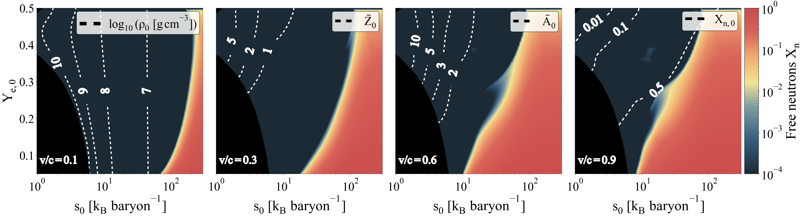
图注：Mass fractions in free neutrons at $1 \,\text{min}$ after the merger across the parameter space for a constant initial temperature of $T_0=10\,\rm{GK}$. The white contour lines indicate properties at the moment of ejection, including the initial density $\rho_0$, the average mass number $\bar{A}_0$, the average charge number $\bar{Z}_0$ and the initial neutron mass fraction $X_{n,0}$. Black regions correspond to $\rho_0>10^{11}\,\rm{g\,cm^{-3}}$, where the EOS is no longer valid.
对应解读：“建议重点查看的图表”第1项，以及“关键图表逐图导读”图2：自由中子质量分数参数空间图。
入选理由：该图直接给出1分钟时自由中子质量分数在参数空间中的分布，是判断哪些初始条件能达到或超过 \(X_n\)≈0.05 的核心证据。图中还叠加初始密度、平均质量数、平均电荷数和初始中子分数等等值线，有助于理解自由中子存活并非只由速度控制，而与热力学初态和成分共同相关。
来源与置信度：\(arxiv_source\)；high；\(arxiv_source\) / \(Nucleosynthesis_in_fast_ejecta.tex\):figure[2]
Fig03
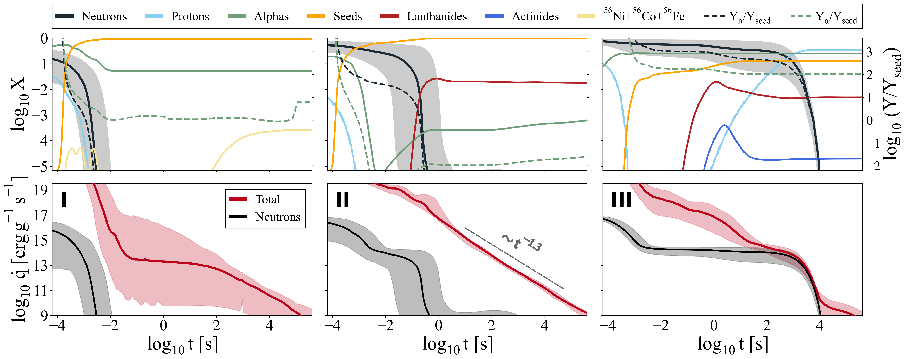
图注：Temporal evolution of mass fractions (top) and energy generation (bottom) for the three ejecta channels (I--III). In Channel~I, neutrons are already consumed during seed formation, so no full r-process develops. In Channel~II, neutrons survive seed formation but are fully consumed during the subsequent r-process, enabling the production of heavy nuclei. In Channel~III, a substantial fraction of free neutrons survives until r-process freeze-out and their decay dominates the early heating. The top panels show free neutrons, free protons, $\alpha$-particles, seed nuclei ($A \ge 12$), lanthanides ($Z=57$--$71$), actinides ($Z=89$--$103$), and the iron-group elements ${}^{56}\mathrm{Ni}+{}^{56}\mathrm{Co}+{}^{56}\mathrm{Fe}$. Dashed curves indicate the $Y_n/Y_{\rm seed}$ and $Y_\alpha/Y_{\rm seed}$ ratios. Solid curves show the median, with corresponding shaded 1$\sigma$-equivalent bands (16th--84th percentiles).
对应解读：“建议重点查看的图表”第2、5项，以及“关键图表逐图导读”图3和图5：三种核合成通道的时间演化与加热率。
入选理由：该图同时展示三类抛射通道中自由中子、种子核、镧系/锕系等质量分数的时间演化，以及能量产生率。它最直接支撑论文关于三种核合成通道、r过程冻结、自由中子是否被耗尽以及中子衰变是否主导早期加热的核心结论。阴影的16–84百分位范围也提供了轨迹间离散度信息。
来源与置信度：\(arxiv_source\)；high；\(arxiv_source\) / \(Nucleosynthesis_in_fast_ejecta.tex\):figure[3]
Fig05
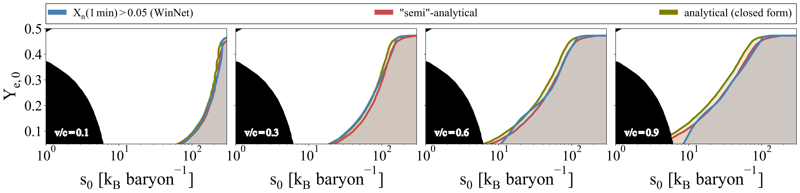
图注：Regions of initial conditions yielding a free-neutron mass fraction above 5 per cent one minute after the merger. Shown are the region obtained from the \(\texttt{WinNet}\) network calculation (blue), the prediction of the semi-analytical criterion from Sect.~\(\ref{sec:analytic_criterion}\) (red), and that of the closed-form expression in Eq.~(\ref{eq:closed_form}) (green). Black areas indicate excluded high-density trajectories.
对应解读：“建议重点查看的图表”第4项，以及“模型拟合”中半解析模型与网络计算的对比。
入选理由：该图把 WinNet 网络计算得到的 \(X_n>5\)% 区域，与半解析判据和闭式表达式的预测区域直接比较，是验证降维半解析模型是否抓住主要物理的关键图。它比单纯展示某条轨迹更能说明模型在整个初始条件空间中的适用性和偏差。
来源与置信度：\(arxiv_source\)；high；\(arxiv_source\) / \(Nucleosynthesis_in_fast_ejecta.tex\):figure[5]
Fig08
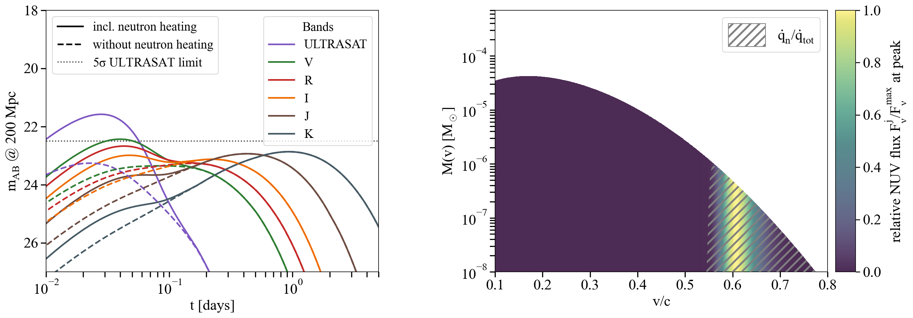
图注：Kilonova light curves and mass per velocity bin for a NSM, with total binary mass $M_{\rm tot}=2.6\,\rm M_\odot$ and mass ratio $q=1$. The merger produces dynamical ejecta of $M_{\rm ej}=0.01\,\rm M_\odot$, with velocities between $\vel_{\rm min}=0.1\,c$ and $\vel_{\rm max}=0.8\,c$. The initial electron fraction is assumed to be $Y_{e,0}=0.15$ for all shells. \(\textit{Left:}\) Apparent AB magnitudes at $D=200$\,Mpc as a function of time. Solid lines include free-neutron heating; dashed lines show the r-process-only case. The dotted horizontal line marks the $5\sigma$ \(\textit{ULTRASAT}\) single-exposure detection limit at $22.5\,\rm mag$. \(\textit{Right:}\) Mass–velocity distribution $M(\vel)$, with colours evaluated at the time of peak NUV emission in the \(\textit{ULTRASAT}\) band at ${\approx} 41\,\mathrm{min}$ after merger, when the transient reaches $m_{\rm AB}=21.6\,\mathrm{mag}$. Each bin is coloured by its relative NUV flux contribution, $F_\nu^j/F_\nu^{\rm max}$. The grey hatched fraction within each bin indicates the contribution of free-neutron $\beta$-decay to the total heating rate, $\dot{q}_n/\dot{q}_{\rm tot}$.
对应解读：“建议重点查看的图表”第6项，以及“关键图表逐图导读”图6：早期千新星前兆光变和ULTRASAT可探测性。
入选理由：该图直接连接核合成结果与观测预言：左图比较含自由中子加热和仅r过程加热的光变，并标出ULTRASAT 5σ单次曝光极限；右图给出不同速度壳层对NUV峰值通量和中子衰变加热的贡献。它是支撑约200 Mpc内可见蓝色前兆这一结论的最重要观测图。
来源与置信度：\(arxiv_source\)；high；\(arxiv_source\) / \(Nucleosynthesis_in_fast_ejecta.tex\):figure[8]
Fig06
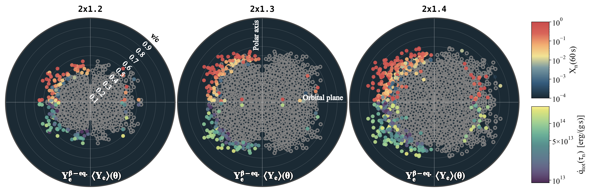
图注：Free neutron mass fraction and total energy generation rate in the dynamical ejecta of three neutron star merger simulations. Each unbound SPH particle is plotted as a function of its velocity coordinate $\vel/c$ and the angle between its velocity vector and the orbital plane at the final simulation snapshot. This choice of coordinates (motivated by rotational symmetry) allows us to represent the entire ejecta of a simulation within one quarter of a circle. Each panel is therefore devided into: the free neutron mass fraction $X_n$ at $t = 1\,\mathrm{min}$ post-merger (top) and the total nuclear energy generation rate $\dot{q}_\mathrm{tot}$ at $t =\tau_n \approx 14.6\,\mathrm{min}$ after the merger (bottom). We post-processed the trajectories using the cold $\beta$-equilibrium value $Y_e^{\beta-eq.}$ for the initial electron fraction (left), or the polar-angle-dependent fit $\langle Y_e\rangle(\theta)$ following \(\citet{Setzer23}\) (right).
对应解读：“建议重点查看的图表”第7项：数值相对论轨迹中高速尾部的自由中子分布、加热率和角向结构。
入选理由：该图使用真实并合模拟的SPH粒子，按速度和相对轨道面的角度展示 \(X_n\) 与总核加热率，能检验参数化扫描得到的自由中子存活规律是否出现在数值相对论抛射物中。它还揭示结果对初始 \(Y_e\) 处理方式的敏感性，有助于避免把少数高速轨迹误读为全局平均。
来源与置信度：\(arxiv_source\)；high；\(arxiv_source\) / \(Nucleosynthesis_in_fast_ejecta.tex\):figure[6]
Fig04
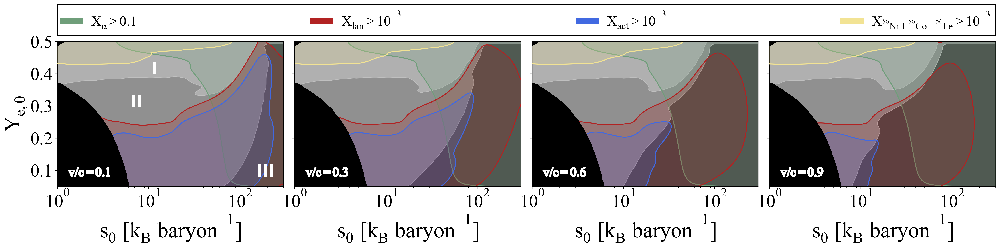
图注：Parameter space divided into the three channel regions, see Table~\(\ref{tab:channel-definitions}\) and Fig.~\(\ref{fig:mass_fractions_and_energy_generations}\) (the black region indicates where the initial conditions would run out of the validity range of the Timmes EOS). We also highlight the areas where an $\alpha$-rich freeze-out occurs (green), as well as high-opacity regions where lanthanides (red) and/or actinides (blue) are produced. At high electron fractions, the ejecta form tightly bound nuclei such as Ni, Fe, and Co (yellow).
对应解读：“建议重点查看的图表”第3项，以及“关键图表逐图导读”图3：核合成通道分类和不同产物区域。
入选理由：该图把初始条件空间划分为三个核合成通道，并标出α-rich freeze-out、高不透明度的镧系/锕系产生区以及铁族元素区域。虽然它不是最终丰度曲线，但能清楚展示自由中子存活、重r过程产物和高不透明度成分在参数空间中的关系，是理解不同通道物理差异的重要补充。
来源与置信度：\(arxiv_source\)；high；\(arxiv_source\) / \(Nucleosynthesis_in_fast_ejecta.tex\):figure[4]
强相关工作
这篇工作直接延续了“自由中子前兆”思想：最外层快抛射物在 \(r\) 过程冻结后留下自由中子，随后 \(\beta\) 衰变在早期供能。与早期半解析千新星前兆模型相比，本论文的进步在于用系统核反应网络和数值相对论轨迹细分了核合成通道，并给出与网络结果吻合的半解析存活模型。建议检索关键词包括 “free neutron precursor kilonova”, “fast ejecta neutron star merger nucleosynthesis”, “neutron beta decay heating kilonova”, “ULTRASAT kilonova precursor”。
它也与 GW170817 后关于蓝千新星成分来源的讨论相关。传统解释强调高 \(Y_e\) 极向风或冲击加热抛射物降低镧系元素不透明度，而自由中子前兆强调的是最外层快物质的衰变供能和短扩散时间。两者不是互斥的：一天尺度蓝千新星可由高 \(Y_e\) 成分主导，小时尺度蓝/紫外前兆则可能由自由中子主导。相反观点或张力主要来自高速尾部质量是否足够、早期观测是否可与喷流茧/余辉区分，以及数值模拟是否稳定解析温和相对论低质量尾部。
相似工作：
- https://arxiv.org/abs/1410.0967
- https://arxiv.org/abs/1710.05836
- https://arxiv.org/abs/2102.07738
基础理论 / 方法工作：
- https://arxiv.org/abs/1508.03133
- https://arxiv.org/abs/1302.3960
- https://arxiv.org/abs/1610.09381
- https://arxiv.org/abs/1710.05463
相反观点 / 张力线索：
- https://arxiv.org/abs/1710.05852
- https://arxiv.org/abs/1805.05412
- https://arxiv.org/abs/2003.05449
10. Spectral-Regime Overlap and Transition-like Behavior in the Blazar Population from Multi-Instrument X-ray and TeV Observations
- 来源：arXiv / astro-ph.HE
- 链接：https://arxiv.org/abs/2605.15867v1
- 作者：Javaid Tantry, Naseer Iqbal
- 评分：novelty 7/10，importance 7/10，relevance 9/10，final 8.70/10
- 推荐理由：汇总多仪器X射线和TeV数据讨论blazar谱指数连续性与转变态，虽偏档案统计但涉及TeV blazar群体，值得快速阅读。
中文题目：多仪器 X 射线与 TeV 观测揭示耀变体族群的谱态重叠与类过渡行为
做了什么：这篇文章把多个 X 射线任务和 TeV 目录中的耀变体光子指数放在同一框架下比较，考察传统上分成 EHBL、HBL、IBL、LBL 和 FSRQ 的源在谱斜率空间中是否真的分离。作者发现，X 射线光子指数 \(\Gamma_{\mathrm{X}}\) 在 \(\sim 1.5\)--\(2.2\) 附近存在宽广重叠，中心大致在 \(\Gamma_{\mathrm{X}}\approx 2\)，不少源在多历元中跨过传统子类边界。结论是：至少从高能谱形角度看，耀变体分类更像连续分布和随时间演化的谱态，而不是几个互不相交的盒子。
为什么重要：耀变体分类常被拿来连接吸积模式、喷流功率、辐射冷却和粒子加速机制。如果 BL Lac 与 FSRQ、或 EHBL 到 LBL 的差异不是离散的，那么许多基于固定分类的统计结论都会受到选择效应和时变性的影响。这篇文章的重要性在于提醒我们：光子指数不是一个静态标签，而是喷流状态、同步辐射峰位置、逆康普顿分量和外场冷却共同演化后的观测投影。
理论 / 观测 / 仪器方法价值：对观测工作而言，它提供了一个跨 Swift-XRT、Swift-BAT、NuSTAR、ROSAT、Chandra、XMM-Newton、NICER、AstroSat 与 TeVcat/VizieR 档案的统一对比视角，强调不同仪器能段和样本选择会改变中间谱态占比。对理论工作而言，它支持把耀变体序列理解为连续参数族，而不是只用固定子类拟合。对方法而言，文章的价值在于把多历元 \(\Gamma_{\mathrm{X}}\) 演化作为识别候选过渡型耀变体的诊断量。
为什么应该关注：如果你用耀变体样本研究喷流物理、宇宙伽马射线背景、中微子候选源或 TeV 源族群，这篇文章都值得关注，因为它直接影响样本定义。一个源在某个观测历元是 HBL-like，在另一个历元可能进入 IBL/LBL-like 或 FSRQ-like 的谱区间；把它强行当成单一类别会稀释相关性、制造假张力，或掩盖真正的物理转变。
展开详细解读：文章讲解、背景、理论、重点章节、图表与相关工作
文章详细讲解
科学问题：耀变体通常被划分为 BL Lac 天体和 FSRQ，更细地又按同步辐射峰频率分为 EHBL、HBL、IBL、LBL 等。这个分类在实践中很有用，但它暗含一个强假设：不同子类在物理上相对分离，且一个源的类别在统计分析中可以被当作稳定标签。本文要问的是，当我们只看高能谱形、特别是 X 射线与 TeV 光子指数时，这些子类是否真的形成分离的簇，还是存在大范围重叠和随时间穿越边界的行为。
作者怎么做：文章汇集了多个 X 射线任务和高能目录的档案观测，包括 Swift-XRT、Swift-BAT、NuSTAR、ROSAT、Chandra、XMM-Newton、NICER、AstroSat、TeVcat 以及 VizieR 中的汇编数据。核心可观测量是光子指数，尤其是 X 射线光子指数 \(\Gamma_{\mathrm{X}}\)，并辅以 TeV 波段光子指数。作者不是只取每个源一个代表值，而是强调多历元观测，用分布、重叠区间、源内变化幅度 \(\Delta \Gamma_{\mathrm{X}}\) 和中间谱态占比来判断一个源或一个子类是否有过渡型特征。
关键结果：不同子类在 \(\Gamma_{\mathrm{X}}\) 空间中并不清楚分开。文章指出一个显著的中间区集中在 \(\Gamma_{\mathrm{X}}\approx 2\)，大致覆盖 \(\Gamma_{\mathrm{X}}\sim 1.5\)--\(2.2\)。这一区域连接了 EHBL、HBL、IBL、LBL 甚至 FSRQ-like 源的谱形。多历元数据还显示不少单个天体存在明显谱演化，例如 Mrk 421 呈现随机性较强的谱变化，而 OJ 287 表现为更状态依赖的谱转变。若以 \(\Delta \Gamma_{\mathrm{X}}>0.5\) 作为显著谱变化的粗略判据，样本中有多个源达到这个尺度；不同仪器下，中间谱态占比约为 \(22\%\)--\(43\%\)。
局限和下一步：这类跨仪器统计的最大限制是非均匀性。不同仪器能段、有效面积、观测触发条件、源亮度状态和文献拟合模型并不完全一致，直接比较 \(\Gamma_{\mathrm{X}}\) 会混入系统误差。另一个限制是光子指数本身是局部谱斜率，它不等同于同步辐射峰频率、喷流洛伦兹因子或吸积率。下一步理想工作应把多波段同时观测、谱能量分布拟合、红移和宿主污染校正结合起来，并用层级贝叶斯模型把源内时变性、仪器差异和真实族群分布分开。
背景知识
耀变体是活动星系核中相对论性喷流几乎指向观测者的一类源。由于多普勒增强，喷流非热辐射主导了从射电到伽马射线的宽波段输出。它们的谱能量分布通常有两个宽峰：低能峰多被解释为同步辐射，高能峰可由同步自康普顿或外康普顿过程产生。因此，光谱斜率和峰位置常被用作喷流粒子能谱、磁场、辐射场和冷却效率的间接探针。
历史上，BL Lac 和 FSRQ 的区分主要来自光学发射线强弱。FSRQ 有强宽发射线，通常被联系到辐射效率较高的吸积盘和丰富的外部光子场；BL Lac 发射线弱，常被认为对应低辐射效率吸积和较弱外场。BL Lac 又按同步峰频率分为 LBL、IBL、HBL 和 EHBL，峰频率越高，X 射线越可能位于同步辐射峰附近或下降段。这套分类简洁，但它把连续物理参数投影成离散标签。
观测背景上，过去二十年积累了大量 X 射线和 TeV 档案数据。Swift-XRT 提供了高时间覆盖，NuSTAR 扩展到硬 X 射线，XMM-Newton 和 Chandra 有高信噪比或高角分辨率，NICER 对变源监测很有优势，TeVcat 则汇集了地面 Cherenkov 望远镜结果。多任务资料让人可以从单个名源个案研究转向族群层面的谱指数分布研究。
为什么现在值得重新看：一方面，多信使天文学和 CTA 时代即将或正在推动我们重新定义 TeV 耀变体样本；另一方面，许多耀变体在不同活动态下显示同步峰漂移、谱硬化或软化、外康普顿分量变化。若仍把分类当成固定属性，可能低估时变性对统计关系的影响。本文利用档案数据重新审视谱态连续性，正好切中这一方法论问题。
该领域常见误区包括：第一，把 \(\Gamma_{\mathrm{X}}\) 直接等同于源的本征粒子谱指数，而忽略吸收、曲率、能段位置和非同时性；第二，把 BL Lac/FSRQ 的光学分类与 HBL/LBL 的 SED 分类混为一谈；第三，把一次观测得到的谱指数当成长期稳定性质；第四，认为中间源一定是两类源之间的演化阶段，而不是几何、多普勒因子、活动态或选择效应造成的观测表现。
基础理论 / 方法脉络
从物理图像看，耀变体的 X 射线辐射可以来自不同成分。对 HBL 和 EHBL，软到硬 X 射线常常接近同步辐射峰或其高能下降段，因此 \(\Gamma_{\mathrm{X}}\) 对电子最高能端、加速效率和冷却很敏感。对 LBL 和 FSRQ，X 射线可能更多来自逆康普顿低能端，\(\Gamma_{\mathrm{X}}\) 此时反映的是另一段电子分布和种子光子场。于是，同一个 \(\Gamma_{\mathrm{X}}\) 值未必对应同一个物理机制，这是解释重叠区时必须牢记的前提。
光子指数的定义通常来自幂律谱 \(N(E)\propto E^{-\Gamma}\)，其中 \(N(E)\) 是单位能量、单位时间、单位面积的光子数谱。若观测能段处在单一辐射成分的近似幂律区，\(\Gamma\) 可以作为局部谱斜率；若能段跨过峰值或存在曲率，单一 \(\Gamma\) 只是压缩后的有效斜率。本文关注的是这种有效斜率在族群和多历元中的分布，因此它的结论更接近“观测谱态连续性”，而不是直接证明“所有子类本质上完全连续”。
本文的关键假设是，不同任务给出的 \(\Gamma_{\mathrm{X}}\) 尽管能段和拟合细节不同，仍可在统计层面比较，以揭示大尺度重叠趋势。这个假设在样本足够大时有启发性，但对单源精确物理解释需要谨慎。例如 Swift-XRT 的 \(0.3\)--\(10\,\mathrm{keV}\) 与 NuSTAR 的 \(3\)--\(79\,\mathrm{keV}\) 可能采样到 SED 的不同局部区域；如果谱是弯曲的，两个仪器的 \(\Gamma_{\mathrm{X}}\) 差异未必表示真实随时间变化。
观测方法上，作者把不同子类、不同仪器和不同历元的光子指数组织成分布，并识别中间谱态区域，例如 \(\Gamma_{\mathrm{X}}\sim 1.5\)--\(2.2\)。他们进一步检查单个源的 \(\Delta \Gamma_{\mathrm{X}}\)，用以判断是否存在跨区间迁移。这里的核心诊断不是单个最佳拟合值，而是分布宽度、子类间重叠面积、源内时间轨迹和中间区占比。
主要退化关系包括：\(\Gamma_{\mathrm{X}}\) 与同步峰位置退化，\(\Gamma_{\mathrm{X}}\) 与吸收柱密度 \(\,N_{\mathrm{H}}\) 退化，\(\Gamma_{\mathrm{X}}\) 与谱曲率退化，以及本征变化与仪器能段差异退化。选择效应也很关键：TeV 探测更偏向谱硬、高峰频、高多普勒增强或低红移源；X 射线档案则偏向亮源、活动态触发源和历史上受关注的名源。因此，中间谱态占比 \(22\%\)--\(43\%\) 不能简单解释为宇宙中真实耀变体总体的无偏比例。
公式与推导
第一步是光子谱的基本定义。若在某个能段内可近似为幂律，光子数谱写为
其中 \(N(E)\) 是单位能量的光子通量，\(K\) 是归一化，\(E_0\) 是枢轴能量，\(\Gamma\) 是光子指数。本文讨论的 \(\Gamma_{\mathrm{X}}\) 和 TeV 光子指数本质上都是这种局部斜率的估计量。
第二步把光子谱变成能量通量。能段 \(E_1\) 到 \(E_2\) 的能量通量为
适用于 \(\Gamma\neq 2\)。当 \(\Gamma\approx 2\) 时，每个对数能段贡献接近相等，这也是 \(\Gamma_{\mathrm{X}}\approx 2\) 常被视为谱能量分布中“过渡”附近的一个直观原因。
第三步看谱能量分布。常用的 \(\nu F_{\nu}\) 或 \(E^2N(E)\) 满足
若 \(\Gamma<2\)，则 \(E^2N(E)\) 随能量上升；若 \(\Gamma>2\)，则随能量下降；若 \(\Gamma=2\)，在对数坐标下近似平坦。因此，在 X 射线能段测到 \(\Gamma_{\mathrm{X}}\approx 2\) 往往意味着该能段可能接近某个辐射峰或成分交接区，但这不是唯一解释。
第四步把电子谱与同步辐射斜率连接起来。若相对论电子分布为
在简单均匀磁场、光学薄同步辐射近似下，能量谱指数满足
这里 \(\gamma\) 是电子洛伦兹因子，\(p\) 是电子谱指数。这个关系只在单一幂律电子谱和单一辐射区近似下成立；在真实耀变体中，冷却断裂、峰值曲率和多区结构会改变它。
第五步估计同步辐射特征频率。电子洛伦兹因子 \(\gamma\)、磁场 \(B\)、多普勒因子 \(\delta\) 和红移 \(z\) 给出观测同步频率尺度
这说明同一观测 X 射线能段可能对应不同电子能量和不同 SED 位置；改变 \(B\)、\(\delta\) 或最高能电子 \(\gamma_{\max}\)，都能推动源在 \(\Gamma_{\mathrm{X}}\) 空间中移动。
第六步描述辐射冷却造成的谱变陡。若电子主要受同步和康普顿冷却，其能量损失近似为
其中 \(U_B\) 是磁场能量密度，\(U_{\mathrm{rad}}\) 是辐射场能量密度。强冷却会在电子谱中产生断裂，使高能端同步辐射变软，从而增大 \(\Gamma_{\mathrm{X}}\)。这为 FSRQ-like 或软谱态与强外场冷却之间的联系提供了物理背景。
第七步考虑仪器计数响应。观测到的第 \(i\) 个能道计数期望值可写为
其中 \(t_{\mathrm{exp}}\) 是曝光时间，\(R_i(E)\) 是能量响应矩阵，\(A_{\mathrm{eff}}(E)\) 是有效面积，\(b_i\) 是背景计数。不同仪器的 \(R_i(E)\) 和 \(A_{\mathrm{eff}}(E)\) 不同，因此同一真实弯曲谱用单幂律拟合时可能得到不同的有效 \(\Gamma_{\mathrm{X}}\)。
第八步给出常见似然。若计数服从泊松统计，谱拟合可最小化 Cash 统计量
其中 \(n_i\) 是观测计数，\(\mu_i\) 是模型计数。对高计数数据也常用近似的 \(\chi^2\) 统计量。本文汇编的许多 \(\Gamma_{\mathrm{X}}\) 来自文献或档案拟合，因此理解这个统计层有助于判断误差条和系统差异。
第九步定义源内谱变化幅度。多历元中可用
衡量谱态跨度。若 \(\Delta \Gamma_{\mathrm{X}}>0.5\)，通常已大于许多单次拟合的统计误差尺度，提示真实谱演化、不同辐射成分切换或仪器/能段差异的综合作用。本文把这类大幅变化作为候选过渡行为的重要证据之一。
模型拟合 / 应用方法
这篇文章本身更像跨任务统计汇编，而不是对每个源重新做统一谱拟合。它使用的核心拟合量是文献或档案中给出的 X 射线和 TeV 光子指数，常见基础模型是吸收幂律、断裂幂律或对数抛物线的局部近似。读者需要注意：如果原始论文对同一源采用不同模型，汇编后的 \(\Gamma_{\mathrm{X}}\) 可能不是完全同质的物理量，而是特定能段和模型下的有效斜率。
参数估计层面，单个观测通常拟合归一化 \(K\)、光子指数 \(\Gamma_{\mathrm{X}}\)、吸收柱密度 \(N_{\mathrm{H}}\) 或谱曲率参数。若 \(N_{\mathrm{H}}\) 固定为银河值，软 X 射线低能端的系统偏差可能被吸收到 \(\Gamma_{\mathrm{X}}\) 中；若允许 \(N_{\mathrm{H}}\) 自由变化，它又可能与 \(\Gamma_{\mathrm{X}}\) 产生强退化。对于 NuSTAR 这类硬 X 射线数据，吸收影响较小，但若谱有曲率，单幂律会把曲率平均为一个能段依赖的 \(\Gamma_{\mathrm{X}}\)。
族群层面更适合使用层级模型。理想情况下，可以假设每个子类有一个真实分布 \(P(\Gamma_{\mathrm{X}}\mid \theta_{\mathrm{class}})\)，每个源有源内变异项，每个仪器有校准或能段偏置项，再用观测误差卷积得到测量分布。本文没有必要完全实现这种复杂模型，但其结果实际上在呼吁这种分析：只看类别均值不够，必须看重叠面积、尾部分布和时间轨迹。
残差诊断方面，若原始谱拟合残差呈系统弯曲，单一 \(\Gamma_{\mathrm{X}}\) 的解释就要谨慎。对 HBL/EHBL，X 射线能段常常靠近同步峰，使用对数抛物线可能比幂律更合适；对 FSRQ，软 X 射线可能受吸收、软过剩或外康普顿低能端影响。若这些因素未统一处理，分类边界附近的源可能被人为推入或推出中间谱态区域。
主要退化关系包括活动态与子类退化、能段采样与谱峰位置退化、多普勒因子与本征粒子能量退化、以及红移和 EBL 吸收对 TeV 光子指数的影响。尤其在 TeV 波段，观测谱会因河外背景光吸收而变软；若不区分本征 \(\Gamma_{\mathrm{TeV}}\) 和观测 \(\Gamma_{\mathrm{TeV}}\)，跨红移比较会有偏。
实际应用上，这类谱态重叠分析可用于筛选候选过渡型耀变体、安排多波段同步观测、为 CTA 或未来 X 射线监测选择目标，也可用于重新评估基于固定类别的相关性研究。例如研究 \(\gamma\) 射线光度与同步峰频率关系时，可以把源的多历元 \(\Gamma_{\mathrm{X}}\) 分布作为状态变量，而不是只用目录中的单一类别标签。
重点章节 / 结果段落怎么读
数据/样本部分应首先看清楚作者从哪些任务和目录取数，以及不同仪器覆盖的能段。Swift-XRT 和 NICER 更偏向监测与多历元覆盖，XMM-Newton 和 Chandra 往往提供较高质量单次谱，NuSTAR 与 Swift-BAT 延伸到硬 X 射线，TeVcat 则代表地面伽马射线观测。读者应特别留意每个子样本是否由同一类源主导，以及是否存在重复观测较多的名源。
方法部分的重点是光子指数如何被比较。建议关注作者怎样定义中间谱态区域、怎样处理不同仪器的 \(\Gamma_{\mathrm{X}}\)，以及是否把多历元观测当作独立状态还是独立源。这里的统计对象若是“观测历元”而不是“源”，高频监测源会在分布中权重更大，这会影响中间区占比。
主结果部分应围绕 \(\Gamma_{\mathrm{X}}\) 分布和子类重叠来读。关键不是某一类的均值，而是 EHBL、HBL、IBL、LBL 和 FSRQ-like 源在 \(\Gamma_{\mathrm{X}}\sim 1.5\)--\(2.2\) 中的交叠程度。若图中有核密度估计、直方图或箱线图，要看分布尾部和误差范围，而不只看峰值。
个例演化部分尤其重要。Mrk 421 和 OJ 287 等源的多历元 \(\Gamma_{\mathrm{X}}\) 变化说明，过渡行为未必只是族群混合造成，也可能在单源时间域中出现。读者应看这些源的 \(\Gamma_{\mathrm{X}}\) 是否与通量、活动态或观测能段同步变化，以判断是物理转变还是数据异质性。
讨论和结论部分要读作者如何界定“transition-like”。这个词不应被过度理解为已经证明了从 BL Lac 演化成 FSRQ 或反向演化；更稳妥的解读是源在谱指数空间中反复进入连接传统子类的区域。附录或稳健性检验若有，应检查不同仪器、不同子样本和不同阈值下中间区占比是否稳定。
建议重点查看的图表
-
各子类的 \(\Gamma_{\mathrm{X}}\) 直方图或核密度图：重点看 EHBL、HBL、IBL、LBL、FSRQ-like 分布是否在 \(\Gamma_{\mathrm{X}}\approx 2\) 附近重叠，以及各类尾部有多宽。
-
按仪器分组的 \(\Gamma_{\mathrm{X}}\) 分布图：检查 Swift-XRT、NuSTAR、XMM-Newton、Chandra、NICER 等给出的中间谱态占比是否一致；若不一致，要判断是能段差异还是样本差异。
-
多历元单源轨迹图：看 Mrk 421、OJ 287 等源的 \(\Gamma_{\mathrm{X}}\) 随时间变化，尤其关注 \(\Delta \Gamma_{\mathrm{X}}>0.5\) 的事件是否集中在耀发或低态。
-
\(\Gamma_{\mathrm{X}}\) 与 TeV 光子指数对比图：若有散点图，应看 X 射线硬/软谱与 TeV 硬/软谱是否相关，以及红移或 EBL 吸收是否可能影响趋势。
-
中间谱态占比表：检查 \(22\%\)--\(43\%\) 这样的比例是按观测次数、按源数还是按仪器子样本计算；不同定义会改变物理解读。
-
分类边界或过渡区示意图：看作者如何标出 \(\Gamma_{\mathrm{X}}\sim 1.5\)--\(2.2\) 的区域，边界是否任意，以及结论是否依赖边界位置。
-
误差条或置信区间诊断：若图中有 \(\Gamma_{\mathrm{X}}\) 误差，应检查子类重叠是否远大于典型统计误差；如果重叠主要由大误差造成，结论会弱得多。
关键图表逐图导读
图 1：若论文给出全样本或分子类的 \(\Gamma_{\mathrm{X}}\) 分布图，横轴应是 X 射线光子指数 \(\Gamma_{\mathrm{X}}\)，纵轴可能是源数、观测数或归一化概率密度。读图时要区分“观测历元数”与“独立源数”。模型线或平滑曲线若显示多个子类在 \(\Gamma_{\mathrm{X}}\approx 2\) 附近相交，这支持连续谱态；但不要把峰值相近直接理解为物理机制完全相同。
图 2：按仪器划分的分布图通常用于检验结果是否由某一任务驱动。横轴仍是 \(\Gamma_{\mathrm{X}}\)，纵轴为不同仪器的计数或密度。若 Swift-XRT 的中间区占比高于 NuSTAR，可能既反映软 X 射线更靠近同步峰，也反映 Swift 监测更常覆盖多种活动态。读图陷阱是把仪器差异误判为源族群差异。
图 3：多历元源的时间序列图应以时间或观测历元为横轴，以 \(\Gamma_{\mathrm{X}}\) 为纵轴，可能叠加通量或活动态标记。对 Mrk 421，要看变化是否随机游走式以及是否与耀发硬化相关；对 OJ 287，要看软硬转变是否集中在特定活动阶段。若误差条远小于 \(\Delta \Gamma_{\mathrm{X}}\)，谱演化证据更强。
图 4：若有 \(\Gamma_{\mathrm{X}}\) 与 \(\Gamma_{\mathrm{TeV}}\) 的散点图，横轴和纵轴分别代表 X 射线与 TeV 光子指数，点的颜色或形状可能标示子类。主要看是否存在从 EHBL/HBL 到 FSRQ-like 的连续带，以及离群点是否对应高红移或强 EBL 校正不确定性。陷阱是 TeV 观测谱不一定是本征谱，红移相关软化会模糊物理相关性。
图 5：中间谱态占比或过渡候选源表应列出不同仪器、不同子类或不同源的统计比例。读者应检查分母定义：按观测数计算会放大被频繁监测源的贡献，按源数计算则更接近族群统计。还应检查候选过渡源是否只是误差范围跨边界，还是多个历元显著进入不同区域。
图 6：若有示意性的分类连续图或参数空间图，重点不是边界线的位置，而是数据点是否形成连接传统类别的桥。任何把 \(\Gamma_{\mathrm{X}}\sim 1.5\)--\(2.2\) 标成“过渡区”的图都应被视为诊断工具，而不是新的严格分类标准。
论文原图 / 可嵌入图片
Fig03
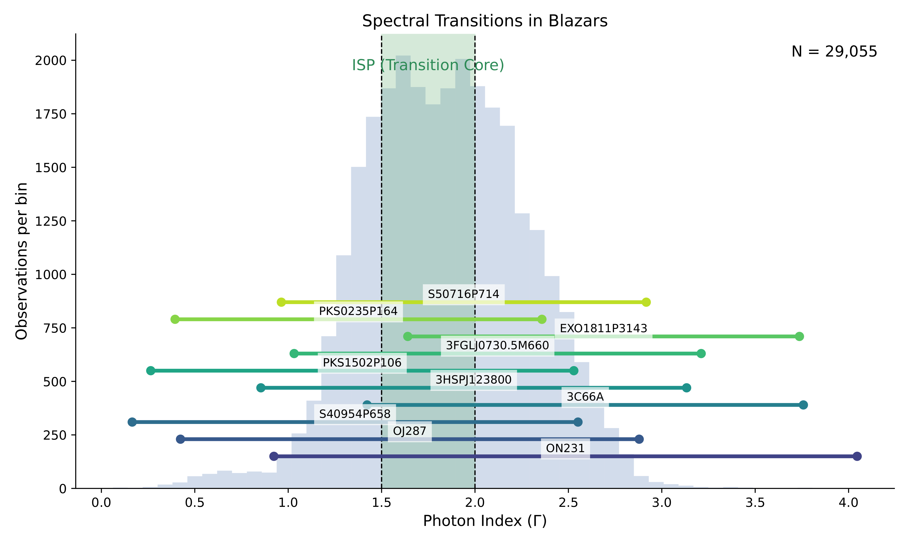
图注：Spectral transition distribution of blazars from the \(\textit{Swift}-XRT\) dataset. The histogram shows the X-ray photon index ($\Gamma_{\rm X}$) distribution for 29,055 observations. The shaded region highlights the ISP regime ($1.5 < \Gamma_{\rm X} < 2.0$), which acts as the transition core. Horizontal lines represent individual sources, showing their spectral range ($\Gamma_{\rm X,min}$ to $\Gamma_{\rm X,max}$), demonstrating transitions across traditional blazar subclasses.
对应解读：对应“建议重点查看的图表”第1、3、6、7项，以及“关键图表逐图导读”图1和图3中关于 \(\Gamma_{\mathrm{X}}\) 分布、过渡区和多历元源内跨度的解读。
入选理由：这是最直接支撑论文核心结论的图：横轴为 X 射线光子指数 \(\Gamma_{\rm X}\)，包含 29,055 次 Swift-XRT 观测的直方图，并明确用阴影标出 \(1.5<\Gamma_{\rm X}<2.0\) 的过渡核心区；同时用水平线展示单个源从 \(\Gamma_{\rm X,min}\) 到 \(\Gamma_{\rm X,max}\) 的谱范围，能直接检验子类重叠、源内谱演化和是否跨越传统分类边界。
来源与置信度：\(arxiv_source\)；high；\(arxiv_source\) / example.tex:figure[3]
Fig12
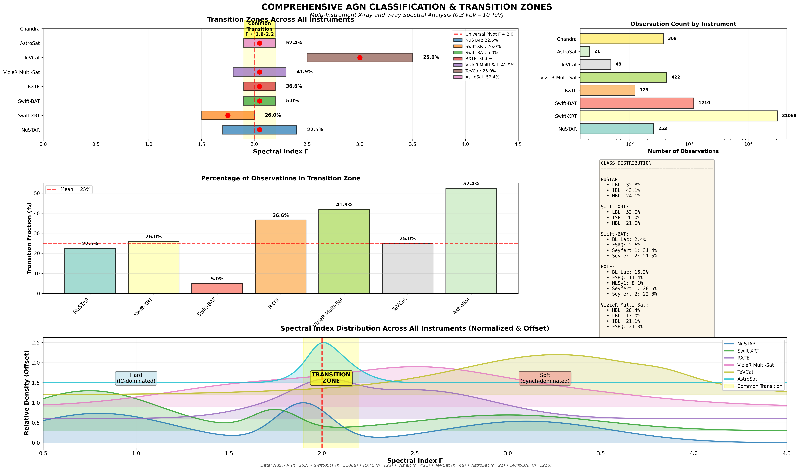
图注：Comprehensive comparison of spectral-index distributions across multiple X-ray and $\gamma$-ray instruments. The shaded region ($\Gamma \sim 1.9$--$2.2$) marks a common spectral transition regime between hard Compton-dominated and soft synchrotron-dominated states. The panels show instrument-wise transition fractions, observation statistics, AGN subclass distributions, and normalized spectral-density profiles derived from NuSTAR, Swift-XRT, Swift-BAT, RXTE, VizieR multi-satellite catalogs, TeVCat, AstroSat
对应解读：对应“建议重点查看的图表”第2、5、6项，以及“关键图表逐图导读”图2、图5、图6中关于按仪器分组分布、中间谱态占比和共同过渡区的解读。
入选理由：该图综合比较多个 X 射线和伽马射线仪器的谱指数分布，并标出 \(\Gamma\sim1.9\)--\(2.2\) 的共同过渡区，还包含 instrument-wise transition fractions、观测统计和归一化谱密度，是判断 \(22\%\)--\(43\%\) 中间谱态占比是否由仪器选择效应驱动的关键图。
来源与置信度：\(arxiv_source\)；high；\(arxiv_source\) / example.tex:figure[12]
Fig11
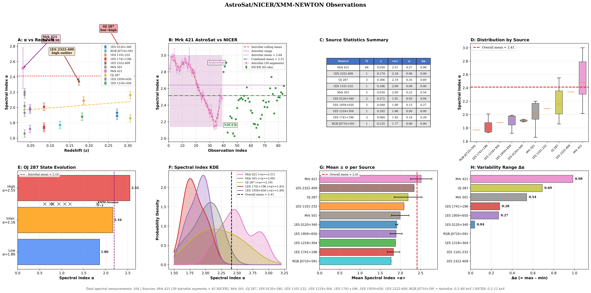
图注：Multi-panel summary of X-ray spectral variability in blazars from AstroSat, NICER, and XMM--Newton observations, showing the dependence of spectral index on redshift, source-wise distributions, state evolution, kernel density distributions, mean spectral indices, and variability ranges across different blazar populations.
对应解读：对应“建议重点查看的图表”第3项和“关键图表逐图导读”图3中关于多历元源谱演化、状态变化和 \(\Delta\Gamma_{\mathrm{X}}>0.5\) 的讨论。
入选理由：该图汇总 AstroSat、NICER 和 XMM-Newton 的 X 射线谱变信息，包含谱指数与红移、源级分布、状态演化、KDE、平均谱指数和变幅等面板；虽然 caption 未点名 Mrk 421 或 OJ 287，但它是候选图中最贴近多仪器多历元谱变和状态依赖转变诊断的图。
来源与置信度：\(arxiv_source\)；high；\(arxiv_source\) / example.tex:figure[11]
Fig10
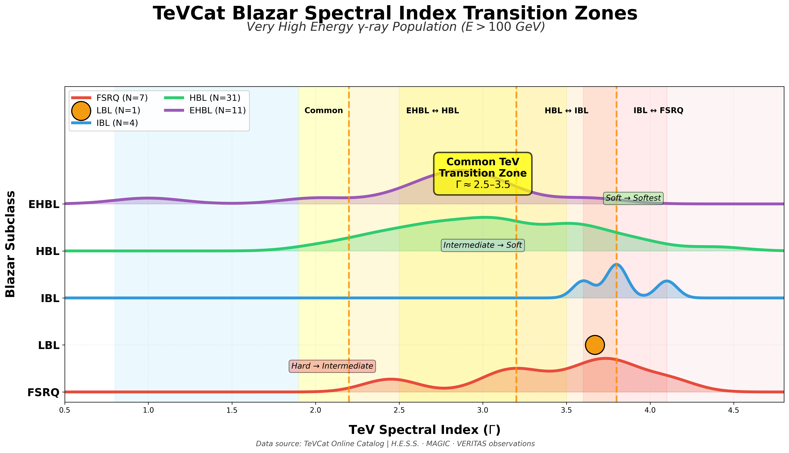
图注：TeVCat blazar spectral-index distributions in the very-high-energy ($E > 100$ GeV) $\gamma$-ray regime. The shaded regions indicate broad overlap zones between EHBL, HBL, IBL, LBL, and FSRQ-like populations, with a common TeV transition regime around ($\Gamma \sim 2.5$--$3.5$). The distributions illustrate the gradual progression from hard EHBL/HBL spectra toward softer IBL, LBL, and FSRQ-like regimes.
对应解读：对应“建议重点查看的图表”第4项，以及“关键图表逐图导读”图4中关于 TeV 光子指数、EHBL/HBL 到 FSRQ-like 连续过渡和 TeV 软化的解读。
入选理由：该图专门展示 TeVCat 在 \(E>100\) GeV 的 TeV 谱指数分布，并用阴影标出 EHBL、HBL、IBL、LBL、FSRQ-like 之间的重叠区 \(\Gamma\sim2.5\)--\(3.5\)。虽然不是 \(\Gamma_{\mathrm{X}}\) 与 \(\Gamma_{\mathrm{TeV}}\) 的二维散点图，但它最能支撑 TeV 波段连续谱态和类别重叠的讨论。
来源与置信度：\(arxiv_source\)；high；\(arxiv_source\) / example.tex:figure[10]
Fig01
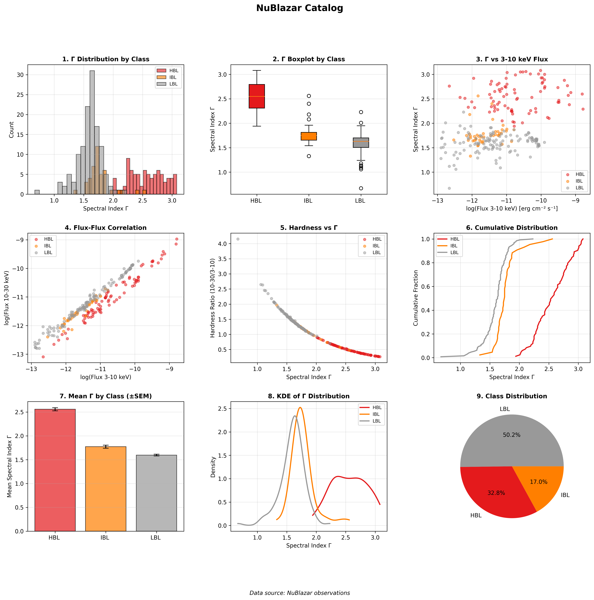
图注：Multi-panel overview of NuBlazar catalog properties for HBL, IBL, and LBL populations observed with NuSTAR. The figure summarizes spectral-index distributions, flux correlations, hardness-ratio behavior, cumulative and kernel-density distributions, and class fractions, highlighting clear spectral and population differences among the blazar subclasses.
对应解读：对应“建议重点查看的图表”第1、2项和“关键图表逐图导读”图1、图2中关于 NuSTAR 子样本的 \(\Gamma_{\mathrm{X}}\) 分布、KDE 和仪器差异检查。
入选理由：该图给出 NuSTAR 观测的 HBL、IBL、LBL 多面板统计，包括谱指数分布、KDE、硬度比和类别比例，适合用来检查硬 X 射线能段下不同子类的谱指数是否仍有重叠，并与 Swift-XRT 等软 X 射线结果对照。
来源与置信度：\(arxiv_source\)；high；\(arxiv_source\) / example.tex:figure[1]
Fig02

图注：Multi-panel overview of Swift-XRT blazar properties for HBL, IBL, and LBL populations. The figure summarizes spectral-index distributions, flux variability, flux--flux correlations, hardness-ratio behavior, and spectral-fit properties, highlighting clear class-dependent trends and long-term X-ray variability across the Swift-XRT sample.
对应解读：对应“建议重点查看的图表”第1、2、3项和“关键图表逐图导读”图1、图2中关于 Swift-XRT 子样本分布、长期 X 射线变动和类别趋势的解读。
入选理由：该图是 Swift-XRT blazar 样本的多面板概览，包含 HBL、IBL、LBL 的谱指数分布、通量变动、硬度比和谱拟合性质。它不如 Fig03 聚焦过渡区，但可作为 Swift-XRT 数据整体背景，帮助区分过渡区重叠是全样本统计特征还是特定筛选后的结果。
来源与置信度：\(arxiv_source\)；high；\(arxiv_source\) / example.tex:figure[2]
强相关工作
这篇工作与“耀变体序列”问题直接相关。经典耀变体序列认为，从高功率 FSRQ 到低功率 HBL，同步峰频率、康普顿优势和辐射冷却系统性变化；后来许多研究指出选择效应、红移不完备和样本截断会影响这一图景。本文从多仪器光子指数重叠出发，支持较连续的谱态图像，但它并不等同于完全否定耀变体序列，而是强调分类边界与时变性会模糊简单序列。可检索关键词包括 “blazar sequence”, “blazar divide”, “transition blazars”, “X-ray photon index blazars”, “EHBL HBL IBL LBL FSRQ overlap”。
相关观测方向包括 Mrk 421、Mrk 501、OJ 287、BL Lacertae、TXS 0506+056 等源的多波段谱态研究，以及 Swift-XRT、NuSTAR、XMM-Newton 与 TeV Cherenkov 望远镜联合观测。相反或张力观点主要来自那些认为 BL Lac 和 FSRQ 由吸积模式、宽线区环境或喷流功率明显区分的研究；这些观点不一定与本文矛盾，因为光学线分类、吸积物理和 X 射线局部谱斜率并非一一对应。进一步阅读应检索 “radiatively efficient inefficient accretion blazars”, “BL Lac FSRQ divide”, “synchrotron peak variability blazars”, “TeV blazar spectral variability”。
相似工作：
- https://arxiv.org/abs/2605.15867
- https://tevcat.uchicago.edu/
基础理论 / 方法工作：
- https://ui.adsabs.harvard.edu/abs/1998MNRAS.299..433F/abstract
- https://ui.adsabs.harvard.edu/abs/2001ApJ...554..725G/abstract
- https://ui.adsabs.harvard.edu/abs/1995PASP..107..803U/abstract
相反观点 / 张力线索：
- https://ui.adsabs.harvard.edu/abs/2010ApJ...716L..30G/abstract
- https://ui.adsabs.harvard.edu/abs/2012MNRAS.422L..48G/abstract
说明
评分由 LLM 给出初评，再由本地阈值策略过滤；IACT、TeV 伽马射线和高能中微子天文学按重点方向处理。